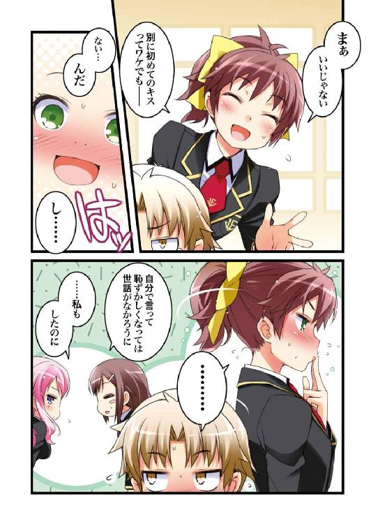
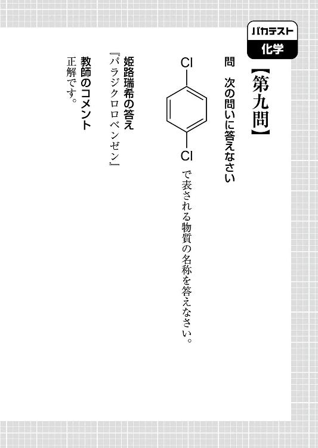

| バカとテストと召喚獣 11 | |
| 井上堅二 | |
| KADOKAWA / エンターブレイン (2013) | |


本作品の全部または一部を無断で複製、転載、配信、送信したり、ホームページ上に転載することを禁止します。また、本作品の内容を無断で改変、改ざん等を行うことも禁止します。
本作品購入時にご承諾いただいた規約により、有償・無償にかかわらず本作品を第三者に譲渡することはできません。
本作品は本文縦組で制作されております。ごらんになるリーディングシステムにより、表示の差が認められることがあります。
「あ......んの、クソババァ！ なんてことしてくれやがったんだ！ あと一歩で俺たちの勝ちだったんだぞ！」
「............」
「俺がどれだけこの日を――勝利を待ち望んでいたかも知らないで、よくもまぁあんな身勝手な話を持ち出せたもんだな！」
「......雄二」
「八つ裂きですら生温い！ この恨み、どうやって晴らしてくれようか！」
「......雄二」
「止めるな翔子！ 俺はこの煮えたぎる恨みと燃えさかる怒りを釘バットに籠めて、あのババァで千本ノックを――」
「......さっきの勝負、私たちの負けだった」
「ぁあ？」
「......雄二の勝ち。私は、負けを認める」
「なんだ急に。何が言いたいんだ」
「......それじゃ、ダメ？」
「ダメって、あのな......翔子。俺にとってはそういう問題じゃないんだ」
「......じゃあ、どういう問題？」
「より良い設備とか」
「......噓。雄二はそんなのにこだわらない」
「姫路の体調とか」
「......それなら今は問題ないはず」
「あー......まぁ、その、なんだ」
「......うん」
「細かいことは気にするな！」
「......答えになってない」
「おっと、明久が何やら大変なことになっているな！ フォローに行かねば！」
「............」

長い睫毛だな、と思った。
スッと通った鼻筋に、細い顎のライン。整った顔立ちは彫刻のようで、美術品ではないかと見紛うほどの魅力がある。
「――そして、僕の顔をサラサラの前髪がくすぐって、僕は......」
「しっかりするんじゃ明久ぁー！」
「............気をしっかり持て......！」
僕は、あまりの出来事に現実を正面から見据える事ができなくなっていた。
「おのれ髙城...！ なんて精神攻撃をしてきやがる......！ たまたま同性愛に理解のある明久が相手だから良かったものの！」
「良くないよ雄二!? 僕は全然そっちに理解なんてないからね!?」
雄二の一言で現実を思い出す。な、なんで僕が男とあんなことに......！
「あ、明久君？ えっと、その......なんて言えばいいのかわからないんですが......守ってくれてありがとうございました、でいいんでしょうか......」
戸惑いつつも申し訳なさそうに僕にお礼を言う姫路さん。いや、いいんだ。姫路さんが助かったのなら、これくらいのこと......。
「気にするな姫路。明久は本望だったと言っている」
「（ガラッ）玉野美紀、遅ればせながら参上しましたーっ！」
「玉野!? 呼んでねぇよ！ お前のことなんざ誰一人話題にあげてねぇ！」
「ですが確かに、私を喚び出す『ホんモぅ』という言葉が」
「特殊過ぎんだろお前の耳！ 誤解だからさっさと帰れ！」
「誤解ですか......。まったく、なんて人騒がせな。人がアキちゃんと髙城先輩のメモリアル画像を編集している最中に......」
「待って玉野さん！ 最後になんだか聞き捨てならない言葉が！」
「いいから行かせろ明久！ アレがここにいても百害あって一利無しだ！」
「......〝驚く顔が見たかった〟......〝友情の行き着く先〟......〝新世界〟......」
「なんかタイトルらしきものを呟きながら帰っていったんだけど!? どこに出展されるの!? 編集された画像はどこに発表されるんだよチクショーッ！」
僕の悲痛な叫びも届かず、玉野さんは三つ編みを翻して二‐Ａ教室から出て行った。おおおぅ......。僕の尊厳はどこまで汚されていくのか......。
「ふむ......。お話を続けられる雰囲気ではありませんね。仕方がありません。出直しましょうか」
騒ぐ僕らを見て、元凶にして僕の仇敵となった髙城先輩がそう言った。
「少々待って頂けますか、髙城先輩」
そんな髙城先輩の前に、一人の男子生徒が立ちはだかる。
「うん？ 貴方は二年生次席の久保利光君、でしたね。私に何か御用でしょうか」
「はい。先輩を相手にこんなことを言うのは大変恐縮なのですが――」
久保君が眼鏡を押し上げながら髙城先輩に告げる。
「――貴方をこのままおとなしく帰らせるわけにはいかないんですよ」
そして、半身を下げて髙城先輩に対峙する久保君。生真面目な久保君にとって、三年生のふざけた提案は到底聞き流せるものではなかったのだろう。静かだけど、今までに見た事がないほど怒りを感じている様子が見て取れる。
「久保利光君。私たち三年生の提案が気に入らないというのでしたら、」
「そんなことはどうでもいいです」
いきなり全否定。久保君は何がしたいんだ。
「ただ、先輩を殴らせて下さい。そうでないと気が収まりません」
「それは、友達の為の一発ということでしょうか？」
「いいえ。吉井君と――僕の分で、二発です」
なぜ久保君の分が含まれるのか。
「そうですね。荒事は好みませんが――降りかかる火の粉は、払わなければ」
「いくら先輩と言えど、踏み入ってはならない領域があります。貴方はそれを土足で踏みにじった。吉井君の無念と僕の怒り、全力でぶつけさせてもらいます」
な、なんか、色々と面倒な空気に......。これはひとまず、何かジョークでも言って場を和ませないと！ えっと、えっと......！
「やめて二人とも！ 僕の為に争わないで！」
「止めてくれるな吉井君！ キミが汚された尊厳は、ここで贖わせる！」
「良いでしょう久保利光君。そこまで言うのなら、少しだけ相手をして差し上げます」
「..................」
どうする......？ これは「なーんちゃって」なんて口が裂けても言わせてもらえないような雰囲気だぞ......？
「おいヒロイン。お前がどうにかしないと収拾がつかんぞ」
「誰がヒロインだバカ雄二！」
「突然の出来事で唇を奪われ、それが原因で男たちが争い始める。その中心にいるお前をヒロイン以外何と呼べばいい？」
「..................」
「どうした明久」
「......えぐっ......ひぐっ......」
「待て！ マジ泣きは予想外だ！」
「だって、雄二が、あんまりにも（えぐっ）酷い事を、言うからっ（ひぐっ）」
「そんなに泣くなよ明久。ヒロインの涙は争いしか生まねぇぞ？」
「くきぃーっ！ お前も髙城先輩か、そうでなければババァ長とでもキスをして不幸になれ！ いやなって下さいお願いします！」
「誰がンなコトするか！」
なんて我儘な！ こういう時に共に地獄に落ちずして、何がクラスメイトか！
「ねぇ、瑞希」
「なんでしょう、美波ちゃん」
「結局、これってどういうことなのかしらね？」
「さ、さぁ......？ 遅れて来た私にはさっぱり......」
「ウチは最初からいるけどそれでもサッパリよ」
「ああもう、喧しいジャリどもだね！ いつまでも騒いでないでアタシの話を聞きな！」
『『『妖怪は黙ってろ！』』』
学園長のせいであと一歩だった勝負を中断されたＦクラス一同が声を揃えて叫ぶ。元はと言えば、学園長があんなタイミングで邪魔をしてこなければ......！
「落ち着いて下さい、久保利光君。二‐Ｆクラスの皆さん」
久保君と睨み合っていた髙城先輩が仲裁するように学園長の前に立った。
『落ち着けるか！ 俺たちの悲願を邪魔しやがって！』
『しかもキモいもんまで見せられたんだ！ どうしてくれる！』
『アンタやババァ長じゃなくて小暮先輩を前に出せ！』
学園長と髙城先輩に対して、Ｆクラスの皆から罵声が飛ぶ。
「そうですね。皆さんの不満もわかります」
それに対して、髙城先輩は落ち着き払って答えた。
「確かに皆さんの仰る通り、学園長の外見は美しくありません」
果たしてそこは問題なのか。
「髙城君、およしなさい」
小暮先輩も僕と同じ意見だったようで窘めようとするけど、髙城先輩は構わず言葉を続けた。
「本当に、学園長は美しくない。普通――と表現することにすら抵抗を覚えます」
「ストップです。それ以上喋らないで下さい」
「ええ......。むしろ、醜いとさえ言えるでしょう！」
「本当にストップですわ髙城君！ それ以上は学園長を敵に回してしまいます！」
「安心しな小暮。ハナからここにいる全員がアタシの敵だと思っているよ」
「ですが、人にとって大事なのは外見ではないのです！ たとえ醜悪な学園長と言えど、まずは話を聞くべきです！ このような外見でも、人としての言葉を操ることが可能なのですから！」
「わかりましたわ髙城君。貴方には後で再教育を施す必要があるということが」
本人にそのつもりはないのかもしれないけど、小暮先輩が艶めかしい溜息を吐いた。
それにしても、髙城先輩は本当に頭が良いのだろうか......？
「よし。それじゃあ髙城への罰は小暮に任せるとして......本題の『三年生と二年生の試召戦争』について話をしようか」
髙城先輩に罰が与えられるということで納得したのか、学園長が話を切り出す。
試召戦争と聞いて、雄二の顔つきが変わった。
「学園長。まず一つ確認したい。三年生との勝負、それは拒否する事ができるのか？」
「それが可能ならアンタたちの勝負に水を差すと思うかい？」
「だろうな。一応確認してみただけだ」
雄二が当然だ、と言わんばかりの態度で頷く。
そりゃそうだ。拒否できるような事案で僕らの邪魔をしたのなら、それこそ万死に値する。
『それがどうした。いいから殺っちまおうぜ......！』
『よくも大型ディスプレイでの鑑賞会を......！』
『霧島さんの座っていた椅子に頰ずりをするという俺の切なる願いはどうしてくれるんだ......！』
まぁ、そういったことに関係無く、迎える結末は一つに限定されているような気もするけど。
未だ殺気立つクラスの皆に対し、学園長が諫めるように呼びかける。
「とりあえず、アンタたちもアタシに言いたい事は色々とあるだろう。けどね、それは一旦保留してくれないかい？ 事が済んだ後なら煮るなり焼くなり好きにしてもらって構わないからさ」
「わかった。事が済んだら遠慮無く殺らせてもらおう」
学園長が「えっ？」って顔をしている。何を驚いているのか。自分で煮るなり焼くなり好きにしろと言ったんだ。その通りにされることに何の文句も無いだろうに。
「と、とにかく、二年生と三年生の試召戦争は決定事項さね。これは学園全体での行事として執り行うよ」
学園としての決定事項なら、僕らとしては反対のしようがない。ボイコットでもするのなら話は別だけど。
「ババァ。もう一度聞かせてくれ。その勝負では何を賭けるんだ？」
「お互いの学年の設備さ。負けた方のＡ・Ｂ・Ｃ教室を、勝った方のＤ・Ｅ・Ｆ教室と入れ替えるって感じだね」
「つまり、僕たちが勝ったら三年側のＡ・Ｂ・Ｃ教室を貰えるってワケか......」
「そういうことになるね」
「それなら条件は対等かも」
「はっ。向こうは負けても失う物が殆ど無いがな」
「え？」
舌打ちでもせんばかりの雄二の言葉。どういうことだ？
「考えてもみろ明久。三年はあと二ヶ月もしないうちに自由登校期間に入る。負けて設備のランクが落ちたら自宅なり予備校なりで勉強したらいい。何も学校に来る必要はなくなるんだからな」
私立で進学校と銘打っている文月学園は、自由登校期間を他校よりも早くから実施する。確か、十二月に入ったらもう出席義務はなくなるはずだ。
「それに対して、俺たちは当然これから先も三月まで登校することになる。リターンが同じなのにリスクに差があるのは不公平だと思わないか？」
「違いますよ坂本雄二君。私たち三年生は『受験直前の貴重な時間』を費やすことになるのです。リスクはお互い様だとは思いませんか？」
「ケッ。そう思うのなら、お互いの為に今まで通りにしておくのが一番だろうが」
「ソレはダメなんダよネ、ザンネンだケド」
髙城先輩の後ろから、小さな男の子がピョコッと姿を現す。海外からの留学生、リンネ君だ。
「リンネ君。ダメって、どうして？」
「ダッテ、ボクがコッチに来たリユウがそのショウブを見届けるタメなんだカラ！」
「え？ そうなの？」
「ウン！ だから、ショウブをしてクレないとコマるヨ！」
そんな突然困るとか言われても......。
「ソレに、アキヒサたちだってコマるハズだヨ！ このショウブにはスポンサーのムグゥッ!?」
「坊主。お喋りが過ぎるのは格好良くないねぇ」
何かを言おうとしたリンネ君の口を、学園長が後ろから手で塞いでいた。
「ケホッ。ソッカ......ゴメンネ、トウドウ」
「わかればいいのさ」
何か大人の事情があるのか、学園長はリンネ君が何かを口走らないかと警戒しているように見える。
「詳しい話はわからないが、そういうことなら手がないわけでもないな」
何か思いついたようで、雄二がリンネ君の前に歩み出た。
「ウン？ 何カナ？」
「坊主。お前、ゴミク――明久のことが気に入っていると言っていたな？」
「そうダヨ！ ボク、ゴミク――アキヒサのコトが大スキだヨ！」
敢えて口を挟むまい。
「そして、お前はこの学校の状況を伝えるメッセンジャーの役割も担っていると」
「ウン！」
「それなら簡単だ。お前の大好きな明久の為に、この学校は現状が最も良い状態であると報告してやればいい。そうしたら、全ての問題が解決する」
「ナルホド！ ヤダ！」
「............」
あ。雄二のこめかみに一本の青筋が。
「なぜ嫌なんだ？ 合理的な考え方だろうに」
「ダッテ、ボクはカッコが良いアキヒサがスキなんだモン！ ダカラ、アキヒサのカッコイイところが見られるシショウセンソウはゼッタイやって欲しイの！」
「よく聞け、坊主」
と、リンネ君の肩を摑んで真剣に語りかける雄二。
「その幻想を信じたいのなら、俺の提案を呑むのが最善の手なんだ」
「おや雄二。まるで本番になったら僕が幻滅されるとでも言いたげだね」
「こんな子供が絶望のあまり発狂することになるのは忍びないからな」
「ダイジョウブだヨ！ 二つのショウブを見たケド、アキヒサはとってもカッコ良かっタモノ！」
この場面、誰がどう見ても僕の味方はリンネ君だと思うだろう。
「坂本雄二君。あなたが何を言おうと、試召戦争については学園長が承諾したのです。学校行事として受け入れるべきです」
「はっ。三年生のセンパイは聞き分けが良いことで」
髙城先輩の言葉に皮肉を返す雄二。Ａクラスとの勝負を中断させられたということが余程腹に据えかねているようだ。
「突然話に割り込んで申し訳ないのじゃが」
事の成り行きを見守っていた秀吉が手を挙げている。
「なんでしょうか？」
「うむ。例えば、二年生と三年生で談合し、引き分けで終わったという体を取るのはどうじゃろうか。そうすれば、三年生側も受験前に余計なことをせずに済むじゃろ」
秀吉の提案は悪くないものに思える。
けど、
「ヤダよ。ソンなツマンナイことをスルなラ、ボクは向こうに良くナイ報告をしちゃウからネ？」
リンネ君はそれをあっさりとつっぱねてしまった。
「じゃがな、リンネよ。お主が好意を寄せる明久も困っておることじゃし」
「ヤダったラ、ヤダ！ ダッテ、ボクはカッコいいアキヒサがスキなんだモン！ スキな人がスキじゃなくナルなんテ、ツラいモン！」
リンネ君。そう言ってもらえるのは嬉しいけど、それじゃあまるで試召戦争時以外の僕は格好悪くて好きでいられないって言われているみたいに聞こえるんだ。
「ソレに、アキヒサはボクだけのヒーローじゃないんダヨ！ ボク、知っテるモン！」
と言って、リンネ君は僕のポケットと美波に意味ありげな目配せをした。僕のポケットには、さっきリンネ君がくれた何かの英語の本を翻訳したメモ用紙が入っているだけのはずだけど。
「リンネ君。キミがさっき僕にくれた手紙に何か書いてあるの？」
「ウン、ソウだヨ。トッテモ大切なコト」
リンネ君が知っている大切なこと......。試召戦争に関わる何かだろうか。それとも、交換留学についてとか。
僕がそう考えていると髙城先輩も同じことを思ったのか、小さく僕に頭を下げた。
「申し訳ありません吉井明久君。彼の言っているその手紙をこちらに渡して頂けないでしょうか」
「どうしてですか？」
「個人的な進路について書かれたものかもしれませんので」
「進路？」
「はい。ごくごくプライベートなことです」
ということは、髙城先輩の進路についての何かか。それなら僕が読んでも仕方がないけど......どうしようかな。素直に渡すのもなんだか癪だし――
「まさかとは思いますが吉井明久君。私の個人的な情報に並々ならぬ興味をお持ちなのですか？」
「持ってけドロボー！」
ポケットから手紙を取り出して髙城先輩に叩き付ける。冗談じゃない！ 僕はこんなよくわからない男の先輩じゃなく、普通に女の子が好きなんだ！
「あゥ......。アノ手紙、そういうのジャないノニ......」
手紙を渡した僕に、リンネ君が困ったように言う。
「え？ じゃあ、どういう内容なの？」
「あのネ！ エッと......凄くプライベートなコト！」
いや。だから僕は髙城先輩のプライベートに興味は全くないんだ。
「やれやれ。ちっとも話が進まないねぇ」
僕らのやり取りを見ていた学園長がわざとらしく溜息を吐いた。
「でも学園長。こんな話、すぐに納得しろって言われても、」
「おだまり。最初にアタシは決定事項と言ったはずだよ。これ以上無駄な時間を食ってないで、そろそろ詳しい話をした方が建設的じゃないのかい？」
若干苛ついたように学園長が言う。確かに、勝負をやると決めたのなら、今の僕らの会話は無駄なものに思えるだろう。僕らの大事な勝負の邪魔までしてきたんだし、時間もないのかもしれない。
学園長の言葉を聞いて、雄二がこれ見よがしに舌打ちをしつつ答えた。
「チッ。クソババァが......。オーケー。納得はしていないが、理解はした。勝負についての話を聞こう」
「さすがは坂本雄二君。賢明な判断です」
「アンタに褒められても嬉しくともなんともねぇや」
話がようやく本題に入る。
「んで、勝負の方法はどうなるんだ、ババァ」
「基本的には通常の試召戦争に準じるよ」
「ってことは、お互いの学年の代表が討ち取られたら終わりってわけか」
「そういうことさね」
お互いの学年代表って言うと、三年生は目の前にいる髙城先輩で――
「さっきの決着はついていないと考えたら、二年の代表は翔子だな」
――ということになる。
「それに加えて、他のクラス代表に適用される特別ルールもあるそうです」
「そうさ。各クラスの代表が討ち取られた場合は、そのクラスの全員が補習室行きってことになるよ」
つまり、雄二がやられるとＦクラス全員が補習室行きになるということだ。一気に総大将を狙うか、各クラスの代表をやっつけて戦力を削るか、難しいところだ。
「勝負の科目はどうなる？ 俺たち二年とアンタら三年だと授業の選択自体に違いがあるだろ」
「大まかに言えば、センター試験に準拠する、ということになりますね」
「「「センター試験だと!?」」」
髙城先輩がサラッと言った言葉に皆が戦慄する。
バカな、センターだって......!? この勝負にセンターだなんて......！
①野球のポジションの一つで中堅手と呼ばれる守備位置。
②バスケットボールのポジションの一つで、主にゴール近辺でのプレイが中心。
あの先輩は突然何を言い出しているんだ......！ バカじゃないのか!? これはさすがに文句を言わねば！
「そんな関係のないもので勝負だなんて、おかしいですよ！」
「おや。センターを使わないとは、吉井明久君は私立一本に絞っているのですか？」
「私立？ 妙なことを言って、話を脱線させないで下さい！」
「黙ってろ明久。それ以上喋ると将来のことを何も考えていないのがバレるぞ」
か、考えているさ！ 少なくともプロのバスケットや野球の選手にはなれないってことくらいは！
「あの、明久君。ちょっとあっちで私とお話ししましょう。センター試験について教えてあげますから、ね？」
姫路さんに言われて、とりあえずＡ教室の隅に連れて行かれる。野球のルールに詳しくない姫路さんこそ、センターのプロ試験について知っているんだろうか。
「えっと、センター試験というのはですね......」
《センター試験とは？》
大学入試センター試験の略称。独立行政法人の大学入試センターが全国一斉に実施する共通テストのこと。各大学の試験に先立ち、例年一月一三日以降最初の土曜日・日曜日に行われる。
 『大辞苑』より抜粋
『大辞苑』より抜粋
「..................」
「なんじゃ明久。急におとなしくなったのう」
「もしや、吉井明久君はセンター試験をご存じなかったのですか？」
「い、いえ、アレです。スポーツ推薦と勘違いしちゃっただけで、別に何も知らなかったってわけじゃ......」
僕の返事を聞くと髙城先輩は大袈裟な身振りで肩を竦めた。
「......やはり、このように無計画な人と貴女は一緒にいるべきではないのです、姫路瑞希嬢」
「ち、違いますっ！ 明久君はちょっとお勉強と常識とお勉強と世間に疎いだけで、そんなに無計画じゃありませんっ！ 酷いことを言わないで下さい！」
「ああ！ 姫路の言う通りだ！ むしろバレーボールのセッターと勘違いしなかったことを褒めてやるべきだ！」
「よしよし、頑張ったわねアキ。ウチはアキのこと、やれば出来る子って信じているからね？」
ぬぅぅ......！ この場合、誰の意見を肯定すると僕が一番傷つかないのか......！
などと僕が尊厳について考えている横で雄二が話を元に戻していた。
「しかしまぁ、科目の選択がセンター試験準拠とは、随分とそっちに有利な条件じゃねぇか、先輩」
「ですが、それが一番お互いにとって無駄のない選択のはずです。我らが文月学園は進学校なんですから」
睨み付ける雄二の視線を笑顔で受け流す髙城先輩。
「んじゃ、保健体育はどうするんだ。アレは不要教科として切り捨てるのか？」
「私はそうすべきだと学園長に進言したのですが......」
「それは認めないよ。保体は二年も三年も平等にやっているはずさね。それなら勝負の科目に加えて何の問題があるんだい？」
保体がなければ僕らＦクラスの力は激減してしまう。その判断に関しては学園長を支持したい。
「さて。アタシからの説明はこんなところだね。勝負は一週間後。ルールの詳細は追って通達するよ」
学園長が説明は終わりといった感じで話を締めにかかる。
「ぅん？ 一週間後だと？」
「不服かい？」
「いや。そうじゃないが......」
むしろ僕ら二年生にとっては好都合だ。一週間あれば、最近の試召戦争で消耗した点数を万全の状態にまで戻せる。それがわかっているからか、髙城先輩も学園長に確認の質問を投げかけていた。
「学園長先生。本当に一週間もかかるのですか？」
「くどいね髙城。今までの六倍の規模になるんだ。それなりの準備が必要だと言っただろう？」
「それはそうなのですが......」
それならそれで疑問が残る。準備に一週間もかかるのなら、どうして僕らの勝負に水をさしたのだろう。あと少しで決着がついたのに。
「一週間後の朝九時に開戦。フィールドは学校全体。それまで両学年準備を怠らないことだね」
そう言い残して、学園長は教室から出て行った。
「ウーン......。マァ、イッカ。アキヒサ。あの手紙、きットそのウチ書いてあったコトがワカるだろうカラ、気にしないデネ！」
「お邪魔致しましたわ、二年生の皆様。来週の勝負、楽しみにしております」
それに続いてリンネ君と小暮先輩も出て行く。
当然髙城先輩も続くのだろうと思っていたら、彼はなぜか教室に残って僕らの方に歩み寄ってきていた。なんだ......？
「髙城先輩。まだ何か僕らに用ですか？」
「ご安心下さい、吉井明久君。貴方に用事はありません。ただ、折角こうしてお会いできたので、姫路瑞希嬢ともう少し話をしたいだけなのです」
などと言いつつ姫路さんに近寄ろうとする髙城先輩の前に、通せんぼの形で立ちふさがる僕。
「失礼。どいて頂けませんか、吉井明久君」
「そうはいきませんよ髙城先輩。先輩はさっきいきなり姫路さんに変なことをしようとしましたからね。それ以上は近付かないでもらいましょうか」
また姫路さんにキスをしようとしたらぶっ飛ばしちゃる。
「流石だな明久。また身を挺して男と唇を重ねる覚悟とは」
「............クセになった？」
「明久はどんどん遠くへ行ってしまうのう......」
「アキ......」
ま、まぁ、姫路さんがされるくらいなら僕が身代わりになるくらいの覚悟ではあるけど......できればそうならないようにしたいなぁ......。
「申し訳ありませんが、私は貴方ではなく姫路瑞希嬢にお話があるのです」
僕を避けて、ずずいと姫路さんに近付こうとする髙城先輩。
「そうですか。じゃあ僕が代わりに聞いて代わりに答えてあげます」
それに対して、先輩を行かせまいと二人の間に身体を入れる僕。
「二人きりで話がしたいので、お時間を頂きたいのですが」
「わかりました。では焼却炉の中で待っていて下さい。マッチかライターを見つけ次第私もすぐに向かいます、と姫路さんは言っています」
「私の瑞希嬢は、そのようなことは言いません......！」
「誰が〝私の〟ですかっての......！」
フットワークやフェイントを駆使する先輩と必死にそれに食らいつく僕の攻防は、さながらバスケやサッカーの一対一のようだった。
ひとしきり争ってから、お互いに動きを止めて肩で息をする僕ら。
「ハァ、ハァ......。髙城先輩、あまりしつこいと嫌われますよ？」
現時点でも好かれているようには見えませんけど、という皮肉もたっぷり込めて言ってやる。
「しつこい？ 嫌われる？ 何を言っているんですか吉井明久君」
そんな僕の言葉に、髙城先輩は心外と言わんばかりに肩を竦めた。
「豊かな情愛からくる一途な積極性のどこに嫌われる要素があるというのです」
「そうですね。ストーカーは皆そう言うんですよ」
そして大概は自覚がない。
「......豊かな情愛からくる一途な積極性。......理解できる」
「霧島さん!? そこは理解しちゃダメだ――って言いたいところだけど、残念ながら二人の考え方はよく似ている気がする！」
僕らの様子を見ていた霧島さんがうんうんと頷いていた。
「ええ。第二学年主席の彼女も仰る通り、積極性は立派な武器です。なにせ、異性に愛情を示されて悪い気がする人なんていませんから。いつか想いは通じるものなのですよ」
「それが正しければ世の中に片思いなんてものは存在しませんけどね！」
そしてストーカーという言葉も生まれなかっただろう。
「ですが、落ち着いて考えてみて下さい吉井明久君。第三学年と第二学年の主席が同じ意見なのです。比較してみて、どちらが正しいのかは明白ではありませんか？」
な、なんだ......？ この、明らかに僕が正しいであろうはずなのに論破されそうな妙な説得力は。なにか、何か反論材料は......
『そう言えば、最近俺が一途に見守ってる子がストーカー被害に遭ってるらしいんだよな』
『そうか。それは怖いな。心配だから俺もあの子の周りの警護を強化しようかな』
『俺もそうするか。彼女の為に家の周りをきちんと見回ってあげよう』
「ほら！ 聞きましたか先輩！ 先輩の言ってることはＦクラスの皆と同レベルなんです！ 間違っているんですよ！」
「いえ。彼らは顔が悪いのでストーカーに分類されます」
「その一言はあんまりだ！」
今の髙城先輩の台詞のせいで教室内に殺気が充満している。もはや僕らとこの先輩の間に生まれた溝を埋めることは不可能だろう。......まぁ、顔はともかく行動自体は立派なストーカーなので、さっきの三人は後で通報しておく必要があるけど。
「いいですか吉井明久君。特別な事情でもない限り、一途で積極的なアプローチは相手も嬉しいものですよ？」
「何を言ってるんですか！ 霧島さんが積極的に雄二の頸骨をヘシ折るのは可愛い乙女心ですけど、先輩が強引に迫るのは犯罪行為なんですからね！」
雄二の声のようなものが聞こえた気がするけど、気にしないでいいだろう。
代わりに、霧島さんも一緒にされて怒っているはずだろうと思って様子を窺うと、
「............」
口元に手を当てて何かを考えているようだった。はて。
「どうしたの霧島さん？」
「......うん」
小さく頷いて霧島さんが答える。
「......今の先輩の話が本当なら、雄二はどうして私を好きだって言ってくれないのかと思って」
難しい顔をしている霧島さん。ああ、そういうことを考え込んでいたのか。
うーん......。その辺は色々とあるんだろうけど......
「それはきっとね――」
と、説明しようとしたところで、
「というわけで瑞希嬢。お時間を頂けないでしょうか」
その隙に髙城先輩が姫路さんに迫っていた。おのれ、なんていうしつこさ......！
「ああもうっ！ いい加減おとなしく引き下がって下さいっての！」
姫路さんと髙城先輩の間に身体を入れる僕。
「私は瑞希嬢と話をしているのです。邪魔しないで下さい」
その僕を避けて姫路さんのところに行こうとする髙城先輩。
「すいません。私は、髙城先輩と話すことなんてありませんから......」
そして、どこか怯えたようにしつつもハッキリと拒絶の意志を示す姫路さん。なんだろう。姫路さんがここまで人を避けるのは初めてのような気がする。
そんな彼女の拒絶に対し、髙城先輩が自分の胸に手を当てて真面目な声で答える。
「端希嬢。貴女は私を誤解しています。私は貴女に害意はなく、今も貴女の為に良い報せをお届けしようとしているだけなのです」
「え？ 良い報せって......」
「はい。例の件なのですが、白紙に戻る可能性があるのです」
「ほ、本当ですかっ」
髙城先輩の言葉を聞いて、姫路さんが僕の後ろから飛び出してきた。すると、髙城先輩は近付いてきた姫路さんを見て幸せそうな笑みを浮かべて言った。
「噓です」
瞬間、姫路さんの表情が一気に暗いものへと変わる。
「酷いです、髙城先輩......。あんまりな噓です......」
「申し訳ありません。こうでもしないとお話ができないと思ったもので」
心から済まなそうな顔をして謝る髙城先輩。でも、本当に申し訳ないと思っているのだろうか。さっきの幸せそうな笑みを見ると、どうにも疑わしい。
「悲しい顔をしないで下さい、姫路瑞希嬢。貴女の沈んだ顔は私にとって何より辛い拷問なのですから......」
「そんなの噓です。髙城先輩は私に意地悪ばかりしています。さっきだって、ようやく私たちがＡクラスの設備になれるところだったのに......」
「それも全て貴女の為を思ってのことなのです、姫路瑞希嬢」
？ 髙城先輩がおかしなことを言っている。Ａクラスの設備を手に入れることは姫路さんの為になるはずなのに、なぜそれを邪魔することが姫路さんを思っての行動になるのだろうか。
「時間はかかるかもしれませんが、いずれわかって頂けると信じています。姉妹校についてのお話も――」
「そ、そのお話は、ここではしないで下さいっ！」
突然の姫路さんの大声に、僕は思わず目を見開いてしまった。
「ですが、遅かれ早かれ広まることで」
「それでも、別に今話さなくてもいいことじゃないですかっ！」
真っ赤になって姫路さんが怒っている。な、何!? 何が姫路さんをそんなに感情的にさせたの!?
「姫路瑞希嬢。落ち着いて、私の話を」
「嫌ですっ！ もう帰って下さいっ！」
髙城先輩が宥めようとするも、とりつく島もない様子の姫路さん。髙城先輩もこれでは話ができないと思ったようで、
「......わかりました。今日のところはこれで失礼致します。瑞希嬢、気分を害させてしまったようで申し訳ありませんでした」
そう言って深々と頭を下げた。怒らせてしまったことは本当に申し訳ないと思っているみたいだ。
そして、顔を上げて姫路さんの手を取る髙城先輩。
「お詫びと言うほどでもありませんが、宜しければ今度一緒に食事でも――」
「姫路さんが嫌がってます。さっさと帰ってもらいましょうか、髙城先輩」
僕はその手をグッと横から摑んだ。「......放してもらえませんか、吉井明久君」
「お断りします」
ほんの一瞬だけ、さっきまでとは違う類の、目に力の入った睨み合いになる。
「......ふむ......」
その後、髙城先輩は僕のことを妙に醒めた目で見てきた。
「なんですか」
その目にカチンと来て、思わず語気が強くなる。
「いえ。貴方のそういった行動を見ていると、少々思うところがありましてね」
「思うところ？」
「ええ。なんというか......貴方は、私の邪魔をしている暇があるのなら自らを省みるべきではないのでしょうか、と」
髙城先輩は言いながら、さして力を籠めた様子もなくスマートに僕の手を外した。
「だから、何が言いたいんですか」
姫路さんを摑んでいた手も離したようなので、僕もとりあえずは手を引っ込める。
髙城先輩は、まるで出来の悪い生徒に言い聞かせるように話を続けた。
「随分前に、清涼祭の召喚大会決勝戦で貴方の勇姿を見ました。あの時の貴方は、聞いていた噂とは全く違う、優勝に相応しい生徒であるかのように見えました」
召喚大会決勝というと、常夏コンビと勝負をしたあの時か。何を言おうとしているのかはわからないけど、褒められているのなら悪い気はしない。
「いやぁ、それほどでも」
「ですが、それ以降の貴方は何も変わらず、成長していないように思えます」
落とされるのが早いなぁ......。
「す、少しは成績も上がって」
「それは、Ａクラスに所属するに相応しいものなのですか？」
「............」
何も言い返せない。
「私が言いたいのはそういうことです。貴方はＡクラスを手に入れる、と豪語しながら勉学に励んでいる様子がない。努力をしていない」
ザクザクと鋭利な言葉が僕の胸に刺さる。
そして、髙城先輩はそこで一呼吸入れてから、
「貴方は、あれからどれだけ無為な時間を過ごしてきたのですか？」
止めと言わんばかりに、はっきりと僕に告げた。
「失礼。随分と長居してしまいましたね。それでは皆さん、お邪魔致しました。姫路瑞希嬢、またそのうち」
髙城先輩は手を挙げて姫路さんに挨拶をし、
「吉井明久君。男の嫉妬は可愛げがないですよ？」
最後に一言僕にだけ聞こえるような声でそう告げて、教室から出て行った。
「..................」
色々と痛いところを突かれた。ぐうの音も出ない。
成長していない、努力をしていない。まったくその通りだ。
その通りなんだけど――
「ぬぁーっ！ もー！ イヤミな言い方をしてくれやがってチクショー！」
「「「っ!?」」」
僕の怒声に、近くにいた秀吉とムッツリーニを含む多くの人ががビクッと驚いていた。
「いいじゃないアキ。言わせておけば」
「んだな。お前が成長しないなんて当たり前のことを今更気にするな」
「思ってたの!? 雄二も同じことを思ってたの!?」
「バカだな......。アイツよりも前からそんなことお見通しだったさ。だって俺たち......友達だろ？」
「その一言に友達を肯定する要素が見当たらない！」
ああもうっ！ 本当に腹立たしい！
「とにかく落ち着けよ。そんなくだらない話をしている場合じゃないだろ？」
む......。くだらなくはないけど、確かに雄二の言う通りだ。僕の名誉より優先されることがあるのだから。
「姫路さん、大丈夫？」
「え？ あ、はい」
髙城先輩がいなくなって、さっきの剣幕はどこへやら、暗い顔をしている姫路さん。
「えっと、何か困り事でも」
「あ、ありませんっ！ 何でもないですからっ！」
姫路さんは断言しているけど、明らかに噓だ。さっきの髙城先輩との会話からもわかる通り、何かを隠している。
「とにかく、試召戦争も中断されたわけですし、今日は戻りましょう」
「そうだな。お前ら、引き上げるぞ！」
雄二の号令で、Ａクラスの教室から皆が退出していく。
「............」
教室に戻る途中、ふと考える。
僕らにも相談できない姫路さんの隠し事を、髙城先輩は知っている。そう思うと、妙に胸の中がざわついた。そんなこんなで、激動の対Ａクラス戦が中断された翌日の放課後。
僕らはＡクラス戦前の自分たちの教室だったＣクラスで、作戦会議に行っている雄二の帰りを待っていた。
「いやはや、昨日は大変な一日じゃったのう」
「............まさか三年生が来るとは思わなかった」
「ウチは個人的にも大変な一日だったわ......。まさか、あの日記が人の手に渡っていたなんて......」
「んむ？ 日記とは何のことじゃ？」
「あ、ううん！ なんでもないわ！ それより、学年対抗の勝負なんて、どうなるのかしらね！」
「............結構な大事になった」
「そうじゃな。学校の方針自体に関わる話になっておるようじゃしの」
大宝律令で民衆は大きく二つに分けられた。その二つの区分は何か。答えは......良民と賤民、か。ふむふむ。
「私は......今のままの状態がずっと続いてくれたら、と思います」
「............同意」
「そうね。ウチもそう思うわ」
「ワシもじゃ」
律令制で決められた〝衛士〟とはどういった役柄を示すのか、答えなさい。答えは......宮門を警護する兵役のこと、と。これは知ってる。
「「「..................」」」
人民に田を与え、税を徴収するという仕組みのことを
「ねぇアキ」
班田収授法と呼び――
「アキってば（グキッ）」
「ぶぁいっ!?」
参考書に向けていた首を一気に持っていかれる。突然の出来事に驚いて、僕は目の前が真っ暗になったかのような感覚に囚われた。
「やれやれ、乱暴だなぁ。一瞬首が真後ろを向いちゃったじゃないか」
「なによ。無視するアキが悪いんじゃない」
「いやいやいや、お主ら。そんな和やかな会話ができるような温い関節技ではなかったように見えたのじゃが」
関節は訓練次第で可動域が増えるらしい。これ豆知識。
「それで、何か用？」
「何か用、じゃないわよ。急に勉強なんてし始めて、熱でもあるのかと心配になるじゃない」
「熱を心配して首を１８０度回すのもどうかと思うけど......」
僕の身体構造をどう思っているのか気になるところだ。
「しかし明久よ。今度の勝負に負けたくないのはわかるのじゃが、そこまで躍起にならんでもよかろうに」
「そうよアキ。気負いすぎは逆効果よ」
「............リラックスすべき」
美波たちが口々に言う。確かに、気負っていないと言えば噓になるかもしれないけれど......
「あそこまで言われたんだ。意地にかけて勉強するよ」
今更だろうと、やれることはやっておきたい。
『貴方は、あれからどれだけ無為な時間を過ごしてきたのですか？』
あの時言われた髙城先輩の言葉が脳裏をよぎる。
「それに、確かに、あの先輩の言う通りだしね」
あの時反論できなかったのは、僕自身言われたことを認めていたからだ。
「まぁ、勉強が大事じゃというのは否定せんがの」
「だからって、ウチはアキが無駄な時間を過ごしてきたなんて思わないけどね」
「............価値観は人それぞれ」
「私も、そう思います」
皆は皆で、それぞれ髙城先輩の言葉に対して何か思うところがあるみたいだ。
「まぁ、僕のことは気にしないでよ。今できることは全部やっておきたいってだけだからさ」
「じゃが、それで本番に体調を崩しでもしたら本末転倒じゃろう」
「............（コクコク）」
「そこまで根を詰めなくてもいいんじゃない？」
「うむ。三年のトップはあの髙城とかいう騙されやすい先輩じゃ。霧島ほどの驚異的な点数を取っているとも聞かぬし、問題なかろう」
「............学年主席の実力なら、こっちが有利」
皆の言う通り、髙城先輩は優秀ではあるものの、そこまで飛び抜けた成績の持ち主ではないらしい。あの騙されやすい性格だし、もしかしたら警戒する必要はないのかもしれない。
でも、
「僕は......あの人、なにか嫌なんだ」
「それはまぁ、そうじゃろうなぁ」
「............あんなことになって嫌じゃなかったらソッチの人確定」
「その話は思い出させないで！」
そういったこと抜きでも何か妙な感じがするって言いたかったのに！
「そっちはそっちで気にすることないわよ、アキ」
「そうは言うけどさ......」
「いいじゃない。別に初めてのキスってワケでも――」
と言っている途中、美波が何かを思い出したかのように言葉に詰まり、
「――ない......んだ、し......」
顔を真っ赤にして俯いた。初めてじゃないって、そりゃ、その、初めては美波とのアレなワケで――
「............」
「............」
「やれやれ。自分で言って恥ずかしくなっては世話がなかろうに」
その時のことを思い出して、僕まで顔を上げていられなくなってしまった。う、うわっ。凄い恥ずかしい！
「......私も......のに......」
「んむ？ 姫路よ何か言ったかの？」
「い、いえっ。なんでもありませんっ」
とにかく話題を変えよう！ えっと......！
「そ、そう言えば雄二はどこに行ったんだろうね！」
「なんでも、三年生との勝負に向けての作戦会議だそうじゃ」
「そうそう！ 各クラスの代表が集まって話し合うとか言ってたわよね！」
「へぇー！ それは良い作戦が出ているといいね！」
「うんうん！ まったくよね！」
「............話題の変え方がわざとらしい」
「ムッツリーニよ。ここは乗ってやるのが友人の優しさというものじゃ」
「「あはははは！」」
僕と美波はそんな秀吉たちの言葉を掻き消す勢いで笑い続けた。
なぁに。作戦会議は雄二と霧島さんがいるなら大丈夫さ！
☆
「ハッキリ言うと、私は坂本君に興味があるの」
「そ、そんな、友香......！」
「おいおい坂本。お前、いつの間に小山と......？」
「許せない......！ 私は久保君にまともな告白すらできていないってのに、自分だけまともな恋愛をしようだなんて......！」
「..................」
（......なんだこれは。一体どうなってんだ......）
Ａ～Ｅの各クラス代表から多様な視線を受け、俺は正直混乱していた。
（よし。冷静になるんだ俺。まずは状況を分析しろ）
ゆっくり息を吐いて思い出す。
Ａクラス教室の一角を使っての作戦会議が始まったのが五分前。最初の議題として、Ｂクラス代表の根本が「全体の参謀役を決めたい」と言い出し、それについて異論を唱える者はいなかった。
いつものクラス単位とは違って今回は大所帯だ。点数の管理だけでも大変な仕事になる。ましてや、翔子は口下手で人見知りも激しい。作戦の立案や説明の役割を分担して負担を軽くしようという考えには俺も賛成だ。
そこまではいい。問題はその後の「その役割に誰が就くのか」という話だ。
「というわけで、私は参謀役に坂本君を推すわ」
小山が改めて先の言葉を言い直す。
......そう。あろうことか、小山がなぜか俺を推薦していた。
「小山。どういう風の吹き回しだ？」
「あら、心外ね。私が貴方を推薦するのがそんなにおかしい？」
ハッキリ言うと、おかしい。今までの経緯を鑑みるに、俺たちＦクラスと小山たちＣクラスの関係は良好どころか険悪になっているはずなのだから。だというのに俺を推すとは、何を考えている？
「だって、私前に言ったじゃない。『頭の良い人が好き』って」
そして、この台詞だ。本当にわけがわからん。
「この前の私たちとＦクラスの勝負、あの状態から逆転されたんだもの。私が坂本君を見る目が変わっても不思議はないでしょ？」
「ゆ、友香！ 何を言って」
「うるさいわね根本君。貴方には関係無いでしょう？」
「だ、だが、そんな私情で大事な役目を決めようなんて言うのは」
「私情を除いても立派な実績だと思うけど？ ああ、それと根本君」
「な、なんだ」
「私のこと、馴れ馴れしくファーストネームで呼ばないで」
小山にばっさりと切り捨てられ、
「な......っ!? な、なんで、どうして......!?」
根本は一目でわかるほど動揺していた。
「......皆、静かに」
とは言え、根本が動揺するのは理解できなくもない。小山は根本にとっての元恋人なのだから。
「......こういう時は、ラマーズ呼吸法で一度落ち着くべき」
だが、なぜコイツまでこんなに動揺しているのだろうか。
「お前が落ち着け翔子。高校生が学校でラマーズ法なんかやっていたら見る人によっては大問題に発展しかねない」
一見するといつもの翔子のようだが、発言以外にも指先が震えていたり目線が泳いだりと、細かい部分で動揺しているのがわかる。
「まったく。何を取り乱しているんだお前は」
「......だって、雄二が異性に好かれるなんて、初めてだから」
確かに、こんなことは俺の人生で初めてだ。
「......絶対に、未来永劫、そんなことはないと思っていたから」
だが、それは言い過ぎではないだろうか。
どうツッコミを入れるべきかを考えていると、その間に小山が俺に問いかけてきた。
「それで、どうかしら坂本君。私と付き合ってみない？」
うむ。論外だ。
なぜって？ そりゃそうだろう。考えてもみて欲しい。小山は元交際相手の根本の前でこんなことを言い出した。となると、ヤツへの当てつけという可能性が高い。そんなもんに付き合わされるなんてまっぴら御免だ。
あるいは、万が一にも本気だったとする。そうすると、小山は昔好き合っていた男の前で、別の男に言い寄ったということになる。そんな真似をするような女と付き合うなんて冗談じゃない。
つまり、どっちにしろお断りというわけだ。
というわけで、結論は出ている。出ているんだが......
「ううむ......」
「どうしたのかしら坂本君。難しい顔して唸っちゃって」
この場でバッサリと切り捨てることには躊躇いがある。
別に小山のプライドがどうの、というわけじゃない。コイツはさっき根本に辛辣な言葉を浴びせた本人なのだから、俺が気を遣う義理なんかどこにもない。そうじゃなくて、俺が気を揉んでいるのは......今が三年との試召戦争直前だという点だ。ここで冷たく切り捨てたら、小山は俺に対して敵愾心を抱く可能性が非常に高い。こんなタイミングで内部で敵を作るなんてのは愚の骨頂だと言える。
じゃあ、仮に受け入れてみせたとすると......今度は根本がどんな行動に出るのか予測がつかない。それに加えて、Ｆクラスの連中に命を狙われることにもなる。そうなれば来週の試召戦争どころか明日の命ですら危うい。こちらの案も論外だ。
いかんともしがたい難問だが、迷っている時間はない。この件は迅速かつスマートに処理しなければ、今は中立の立場をとっている平賀や中林も敵に回ってしまう可能性もあるのだから。
（参った。相手の恨みを買わない断り文句があればいいんだが......！）
非常に認めたくないことだが、俺の異性関連の経験不足が響いている。ええい、どうしたものか......！
などと俺が頭を捻っている脇で、さっきまで狼狽えていた翔子が口を開いた。そうか！ コイツは今まで散々告白を受けてきたんだ！ この場をうまく収める術も知っているに違いな――
「......ダメ。雄二は、私のものなんだから」
火に油とはまさにこのことよ。
「「..................」」
その一言で傍観気味だった平賀と中林の視線にまで殺意が籠もる。
なぜお前らはそこまで俺を追い詰める？ そんなに試召戦争に勝ちたくないのか？
「私のものって、そんな。霧島さんと坂本君は付き合っているわけじゃないんでしょう？」
「よーし！ この会話はここまでだ！ 話題を作戦会議に戻すぞ！」
「......ううん。きちんと付き合ってる」
「だから続けるなって言ってんだろ畜生っ！」
お前らはただでさえまとまりのないこの学年に更に亀裂を入れて楽しいのか!? それともアレか!? 俺を共通の敵に仕立て上げることで他の五クラスの団結を得ようって魂胆なのか!?
「付き合ってるって、いつから？」
「......前に試召戦争で勝った時から。約束、だから」
「そう言えば、そんな噂を聞いた気もするわね」
半年前の試召戦争で安請け合いした約束。他人にしてみれば噂話程度の認識だろうが、当の本人としては忘れがたいものだ。
「......だから、私と付き合ってる間は、そんなの許さない」
「でも、それってつまりは形だけのものでしょう？ そんなもので縛り付けるなんて変じゃない？」
「......でも、約束は約束」
「ふぅん......。ねぇ坂本君。私は相手を束縛なんてしないわよ？ お互いに自立した、一人の人間としての時間を大事にするつもり。そういう付き合いの方が良くないかしら？」
良いも悪いもあるか。俺の答えは最初から一つだ。
しかし、試召戦争が終わるまではこれ以上敵を増やすわけにもいかない。そうなると......ここはこう答えるしかないか。
「小山。それについては試召戦争が終わった後に、ということでどうだ？」
返事の先延ばし。答えが決まっているのにこんな返事は個人的にとても嫌なんだが、場合が場合だ。勘弁してもらいたい。
「......？ ......試召戦争が終わった後......？」
小山ではなく、翔子が怪訝な顔をする。動揺しているせいで、この場を丸く収めようという俺の意図がわかっていないのかもしれない。
「なるほど......。試召戦争が終わった後に、ね？」
一方、小山は何かを理解したようで、含みのあるような物言いをしつつ、翔子に目線を送っている。
「............」
翔子は小山の視線を受けて少し考え、
「............！」
何かに気付いたかのように口をつぐんだ。ようやく自分たちの会話がどれだけこの場の和を乱しているのか理解してくれた――と、信じたい。
「じゃあ、試召戦争で頑張ればアピールできるってわけね。坂本君から告白してもらえるくらい活躍しようかしら」
ダメだ。全然わかってねぇ。
「ゆ、友香――じゃなくて、小山さん！ 俺も頑張るから、活躍を見ていてくれ！」
だがまぁ、こうして根本も気合が入ったようだし、結果オーライというところだろうか。やれやれ......。これでようやく作戦会議ができる。
「んじゃ、最初の議題にあった参謀役なんだが、俺がやろうかと――」
「ううん。私がやるわ。任せて頂戴」
「いいや。Ｂクラス代表の俺が適任だろう」
小山と根本が競うように手を挙げる。つくづくこいつらは面倒な......！
「落ち着けお前ら。これは勝負なんだから、私情は挟まずにだな」
「だ、そうよ根本君。おとなしく引き下がってくれる？」
「ダメだ！ そう言う坂本の方こそ私情で行動しようとしている！ ここはクラスの序列から考えても俺がやるべきなんだ！」
それぞれの思惑があって話が全然進まない。
「特に、坂本がやるのは絶対反対だ！」
根本が大きく声を張る。面倒だが、ここで言われるままになっているのは今後のことを考えると色々まずい。こいつの話に付き合うしかなさそうだ。
「理由を聞こうか、根本」
「全体の作戦を決めるとなれば、皆がその作戦を信じて行動しないとならない！ その信用がお前には欠けているからだ！」
「あら。坂本君には実績があると思うけど？」
「そんなもんじゃなくて、もっと単純な人としての信用の話だ！ 忘れているかもしれないが、坂本は覗きの主犯格なんだぞ！ それだけで学年の半数――女子の信用を失っていると言えるじゃないか！」
人としての信用という話なら、どう足掻いても根本が参謀役に収まることはない。根本だって自分が信頼されていないことくらいわかっているだろうに......小山に捨てられたのが余程堪えているのか、冷静な判断ができないでいるようだ。
だが、そういった話の展開をされると、こちらとしても少々困る。
「人としての信用という話なら、私もＦクラスには思うところがあるのよね」
作戦自体の出来には文句が無くても、信用は出来ないという口ぶりで中林が続いた。やっぱりそうくるか。
「中林。久保とうまくいかないという話なら、それは久保個人の問題でだな、」
「久保君とはうまくいくいかない以前の問題なのよ！ アンタにわかるの!? 勇気を振り絞った告白が、同性のバカへの熱い想いとバカ男子同士の子供なんていうわけのわからないものに潰されたこの哀しみと怒りが！」
おい待ってくれ。久保は一体どんな断り方をしたんだ。
「「「............」」」
突然怒り出した中林に集まる皆の視線。
中林はそれに気付いてバツが悪そうに咳払いをすると、
「と、とにかく！ 信用ということなら、私は吉井あき――Ｆクラスを支持することはできないわ」
そう言ってどっかりと席に座り直した。ところで、今アイツ吉井明久って言いかけたよな？ ......あの野郎、なぜこんなところでまで俺に迷惑をかけるんだ。
「でも、坂本がダメならどうする？ 先に言っておくけど、俺は作戦を考えるのなんて苦手だぞ？」
「それは......まぁ、反対意見を言っておいてなんだけど、私もちょっと......」
平賀と中林が自信なさげに言う。
「じゃあ、やっぱり序列から言ってＢクラスの俺が」
「「「却下」」」
根本の立候補が即座に棄却される。さもありなん。
しかし、こうなると参謀役は小山ということになる。それはそれで厄介なことになりそうだし、避けておきたい。
「......それなら」
と、そこで、黙っていた翔子が口を開き、
「......それなら、私が皆の意見を聞いて、とりまとめる」
そんなやり方を提案した。
「お前がとりまとめる？」
「......そう。それで、できるだけ全員が賛成できる作戦を立てる」
確かに、翔子がまとめるのなら誰も文句は言わないし、結束力も生まれる。複数人が作戦を考えることで多角的な見方もできるだろう。
「でも、それだと霧島さんの負担が逆に増えちゃうんじゃないのか？ それって本末転倒じゃ」
「......大丈夫」
平賀の問いに、翔子が力強く答える。本人がこう言っている以上は、俺が余計なことを言うと、また根本あたりに嚙み付かれかねない。
「できるだけ全員が賛成ってことは、強い反対意見があればそいつの案は採用はされないってことか......」
根本がいやらしい笑みを浮かべている。翔子の提案の持つ意味を考えたのだろう。
――そう。翔子の案は極力全員の意見を取り入れるという、いわば多数決のようなものなのだから、必然的に少数派で敵の多い俺たちＦクラスの意見がほぼ却下されるということに繋がる。
つまり、何か不測の事態が起ころうと、その体制で俺にできることは殆ど無い、ということだ。
それはまるで――
「......私に、任せて欲しい」
――それはまるで、俺の力など必要無いと切り捨てられたようで......俺としてはあまり面白い話ではなかった。
「よし、そうだな！ 霧島さんがやってくれるならそれが一番だよな！」
「確かにね。それなら誰も文句はないもの」
「霧島さんが問題ないのなら、俺も賛成かな」
根本たちが賛成意見を述べる。
正直、俺個人の感情を抜きにしても賛成はしにくい。皆の意見をとりまとめるという方法は、結束力が生まれ多角的な見方も出来る反面、決定までに時間を要し、まとめ役は尋常ではない苦労を強いられるというデメリットを内包するからだ。ましてや、そのまとめ役はそういったことを得意としない翔子だ。ベストのやり方だとは思えない。
「......私、頑張るから」
だが、その負担がかかる張本人の翔子はやる気を見せている。
だとしたら、ここで俺が反対意見を主張するのは、折角翔子が労苦を負ってまで得ようとした結束力を台無しにするだけの愚行だ。
「............」
翔子が俺の返事を待つようにジッとこちらを見ている。
「............わかった。俺もそのやり方に従う」
俺がそう答えると、脇で聞いていた根本が再びニヤリと嫌な笑みを浮かべた。
「坂本。皆で決めるんだからな。誰かと二人になったりして、余計な話をするなよ」
これは小山と妙な話をするな、という牽制だろう。好都合だ。こちらとしてもそういった話は避けておきたい。
「勿論だ。余計なことをして痛くもない腹を探られるのは御免だからな」
「ふん。本当に痛くもないかどうか、怪しいもんだけどな」
根本の小物めいた台詞で全体の体制についての話し合いは終了。
その後はそれぞれが意見を述べ、翔子がそれらをとりまとめた作戦を考えておく、ということで会議は終了となった。
☆
「あ、坂本。おかえり」
美波の声で顔を上げると、雄二が教室に入ってくる姿が見えた。
「............どうだった？」
僕らのところにやってきた雄二に、ムッツリーニが問いかける。どうだった、とは勿論作戦会議のことだ。
「......ああ。一応、大体の方針は決まった」
ムッツリーニの問いかけに対し、ぶっきらぼうに答える雄二。
「何よ坂本。きちんと方針が決まった割には不満げな感じじゃない」
「何かあったんですか？」
「色々とな」
雄二はいかにも不機嫌そうだ。
「さては、面倒な仕事でも押しつけられたとか？」
「バカ言え。面倒ごとくらいで俺がキレるか」
キレると思うけど。
「ふむ......。では、何故お主はそこまで不機嫌なのじゃ」
「............意見が聞き入れられなかった、とか」
「む......。そうだな。当たらずといえども遠からずだ、ムッツリーニ」
少しは気分も落ち着いてきたのか、若干不機嫌さを残しつつもいつもの調子に戻る雄二。
「何？ どういうこと？」
「クラス間のまとまりを得る為に、俺の発言権は犠牲になったってことだ」
「？？？」
やっぱりよくわからない。
「ま、細かいことは気にするな。俺の中で処理したらいい話だ」
「ふーん。雄二がそれでいいって言うなら僕はいいけど」
コイツはコイツで色々とあるんだろうし、言いたくないのなら無理に聞き出すこともないだろう。
「ならば、作戦の方はどうなったのかを聞かせてくれんかの？」
秀吉も同意見のようで、話題を作戦の方に振る。
「ああ。そっちの方は、うまくまとまれば問題ない......ように思える」
「なんか、曖昧な言い方だね」
「全員が意見を言って、そこから作戦を考えるっていう方針だからな。現時点では他に言いようがない」
うーん......。いつもは（たとえ間違っていても）雄二が断言していたから、そういう物言いは若干不安になる。
「そう心配そうな顔するな。人数と時間をかけている以上、おかしな作戦になることはない。むしろ、俺一人で考えるより死角のない作戦になるはずだ」
確かに。霧島さんもいるんだし、不安に思うことはないのかも。
「そんなわけだ。他のことを心配している余裕があるなら、お前はお前でやれることをやっておくんだな」
雄二が僕の持つ参考書に目をやりながら言う。
「了解。そうするよ」
学年対抗試召戦争まであと一週間。どこまでやれるかわからないけど、この一週間は全力で頑張るとしよう。
『おーっす、髙城。ちょっといいか？』
『おや。夏川君に常村君。私に何かご用ですか？』
『いや。お前のことを信用してないわけじゃねぇんだがな』
『一応、考えている作戦を訊かせて貰おうと思ってよ』
『ああ、そういうことですか。別に構いませんよ』
『そりゃ良かった』
『んで、編成とかはどうするんだ？』
『私たちは基本的にクラス単位で戦力を運用します』
『無難だな。面倒が少なくて済む』
『作戦は？』
『序盤は両翼に攻撃力の高いＣクラスとＤクラスを、中央にＥクラスと足止めの得意なＦクラスを置き、Ａクラスは新校舎内で待機します』
『ん？ Ｂクラスは？』
『予備戦力として後方に待機させ、機を見て相手の一番弱い場所に攻め込ませます』
『ああ、アレか。アフリカのシャカだか誰だかが運用していたとかっていう戦術』
『シャカ・ズールーのことですか？ そうですね......〝猛牛の角〟とは少々形が異なりますが、まぁ大体そのようなものです』
『ふーん......。そんだけか？』
『と、言いますと？』
『お前は騙されやすいが、バカじゃない。そんなお前のことだ。他にも何か策があるんだろ？』
『それはまぁ......相手の出方次第ですかね？』
『？？？』
『試召戦争は点数がものを言いますが、それを運用するのはあくまでも人間ですから。色々と不測の事態も起こりえる、ということです』
☆
三年生との試召戦争当日の朝。天気は良好。
僕らＦクラスのメンバーは、とりあえずの集合場所として、慣れ親しんだ元の二Ｆ教室に集まっていた。
「よし。それじゃ、試召戦争の編成を発表するぞ」
教壇に立つ雄二からの作戦説明。これも試召戦争では恒例行事だ。
「麻賀、飯島、有働、君島、手塚。お前らは第一班だ。開戦時はグラウンドのこの位置を受け持ってくれ」
メモを片手に名前を読み上げ、黒板に書いた地図の一部を指す。
そんな雄二に秀吉が手を挙げて質問した。
「雄二よ。たった五人でその範囲を受け持つのかの？」
名前を呼ばれた五人も秀吉の意見にうんうんと頷く。
すると雄二は首を振ってその質問に答えた。
「いや。今回は他のクラスとの混成チームだ」
「混成チームっていうと？」
「弱点の無いようそれぞれの点数を補い合い、チームの総合力がだいたい同じになるよう編成したらしい」
つまり、点数が高い人と低い人を同じチームに配置した、ということだろう。弱点のない布陣は様子を見たい序盤には最適だろう。
「しかし......よくもまぁ、こんな編成を実行したもんだ」
雄二がメモを見ながらそう口にする。
「え？ どういう意味？」
「いいか？ この学年には三百人近い生徒がいて、その全員が十一科目の点数を持っている。その点数をそれぞれ把握して、平均的になるように配置するなんて作業、普通はやりたいと思うか？」
「い、言われてみれば......」
全員が全科目で平均的に点数を取っているわけでもない。そうなると科目による偏りなんかも出てくるから、組み合わせはとても難しくなる。
「俺はお前らだけでもチーム編成に四苦八苦するってのにな」
試召戦争中、雄二はよく皆の点数をノートにまとめて配置の指示を出している。頭の回転が速いこいつでも戦争中はずっとノートとにらめっこをしているのだから、それが学年全体になったとなれば大変なんてレベルじゃない。さっき雄二が呆れたように言ったのも頷けるってもんだ。
「まぁ、Ａクラスにはそういった手間を惜しまない真面目な人たちが沢山いるんだろうね」
「久保や木下あたり、こういった作業は得意そうだからな」
工藤さんはどうだかわからないけど。
「話が脱線したな。編成の続きを発表するぞ」
雄二が皆の名前を読み上げていく。
「明久、島田、ムッツリーニ、秀吉は俺と同じ第九班だ」
なんか、いつもの面子が揃ったチームのような気がする。
「まぁ、ワシらは特に科目での偏りが顕著じゃからのう」
秀吉が僕の心情を読んだかのような呟きを漏らす。
確かに、美波は数学、ムッツリーニは保健体育、秀吉は古典、僕は日本史と、それぞれ得意科目はあるものの、他の科目との点数差が大きい。そういったメンバーを一箇所に集めてそれぞれの弱点を補わせようということなのだろう。
「なるほど。それで瑞希は別の班なのね」
弱点が無く全科目で点数の高い姫路さんは別チーム。寂しいけれど、これも作戦のうちだ。グッと堪えよう。
「さて。次は大まかな作戦について説明する」
雄二が黒板に学校全体の見取り図を描く。
「敵の本営は新校舎の、こっちの本営は旧校舎の四階になっている。戦況によっては移動もありえるが、ひとまずは新校舎の四階を目指すというのが目標だな」
「んむ......？ その配置じゃと、四階の渡り廊下で上位クラスが戦闘して、他のクラスが介入する暇なく戦争が終結しそうなのじゃが」
秀吉が見取り図を見ながら首を傾げている。
言われてみればその通りだ。お互いの大将が四階にいるのなら、渡り廊下を通ってお互いの最高戦力が激突して終わる。廊下の広さにだって限界があるのだから、配置するのは成績の良い順。そうなると下位クラスは趨勢に関わることなく終戦を迎えることになるだろう。
「そうならないよう、渡り廊下の使用は禁止だとさ」
見取り図の渡り廊下に×印をつける雄二。っていうことは......
「............戦闘の中心はグラウンド」
「そうだ。グラウンドや他の場所でＢ～Ｆクラスが戦闘を行い、押された方が本営のＡクラスがいる校舎にまで攻め込まれることになる」
なるほどね。それなら総力戦になる。ババァ長も色々考えるもんだ。
「んで、俺たち二年の序盤の作戦はこうだ。弱点を補い合った混成部隊で戦闘を行い、敵の戦力を見極める。そして、相手の弱い部分を見つけたら、その箇所にＢクラスを投入。一気に流れを引き寄せようという感じだ」
だからこその平均的な戦力配置ってわけか。
「なんだか、危なげのない作戦って感じだね」
「うむ。まったくじゃ」
「............安心確実」
「お前らが全科目で安定した点数を取れるのなら、クラス戦で俺もこういう作戦を採れるんだがな。特にムッツリーニ」
「............その意見については前向きに善処する方向で検討する」
なぜだろう。肯定の単語が並んでいるのに否定しているように聞こえる。
「ったく......。とにかく、そういうわけだ。各自配属先で次の指示を仰ぐように。以上！」
雄二がそう締めて、馴染んだＦクラス教室でのミーティングは終了した。
☆
そして、校庭での集合。
僕らが配属された第九班の集合場所に着くと、
「お姉様ぁ――っ！」
「うげっ！ 美春!?」
先に到着していた清水さんに美波が飛びつかれていた。いや、美波。どうでもいいかもしれないけど、年頃の女の子が「うげっ」はないんじゃないかな......。
「ああ、お姉様......。こうして同じチームで共闘できるとは、これはもう運命としか言いようがありません......。もういっそ、この場で......！」
「この場で何!? アンタここでウチに何をするつもりなの!?」
「んぅ～～！ やっぱりお姉様の感触、匂い、声、どれを取っても最高です！」
清水さんは心の底から嬉しそうだ。大好きな美波と一緒に何かをやれるのはこれが初めてとなれば、その喜びも当然のことかも知れない。
「ああもうっ！ とにかく離れなさい美春！」
「いいえ、離れません！ ......このまま、一生」
「怖い！ 本当に怖いわアンタ！」
「あはは。美波はそんなに好いてくれる人がいて羨ま――ハクションッ！」
なんだ？ 急に寒くなったな――って、えええぇっ!?
「ちょっ!? 僕の上着は!? どうして僕は上がＴシャツ一枚になってるの!?」
「あ、アキちゃん。寒そうだね。良かったらこの服、着る......？」
「くそぉおおっ！ やっぱりキミか、玉野さん！」
いつの間にか僕の後ろに現れた玉野さんは、なぜか僕が着るのに丁度良さそうなサイズのエプロンドレスと、さっきまで僕が着ていた可能性がある上着とＹシャツを持っていた。
「良かったじゃない、アキ。そんなに好いてくれる人がいて」
「できれば僕はありのままの自分を好いてくれる人がいいな！」
断じて気付かないうちに上着とＹシャツを脱がせ、今こうしている間もＴシャツに手をかけるような人が相手じゃない。
「雄二！ 見てないで助けてプリーズ！」
「坂本！ お願いだからなんとかして！」
「そう言われてもな......よーしよしよし、ステイだＤクラスの問題児二名」
雄二が犬を躾けるように清水さんと玉野さんに呼びかける。
「お姉様お姉様お姉様お姉様お姉様お姉様お姉様お姉様お姉様」
「アキちゃん、お着替え......しよ？」でも、二人は一向に話を聞く様子が見られなかった。なんだこのチーム。もしや、いつものＦクラスの仲間より厄介なんじゃ......？
「これでは勝負以前の問題になりそうじゃな」
「............どうする？」
「正直なところ、俺こいつら苦手なんだよな......。島田、明久、悪いが自分でなんとかしてくれ。最悪でも勝負が始まりゃおとなしくなんだろ」
「「薄情者！」」
お手上げのポーズを取る雄二に、僕と美波は揃って恨み言を叩き付けた。秀吉もムッツリーニも助けてくれそうにない。うぅ......。自分でどうにかするしかないか......。
「あのさ、玉野さん。そういう服を着るのって、別に僕じゃなくて美波みたいなかっこいい女の子でもいいんじゃないかな？」
「う～ん......。なるほど。一理ありますね。新境地の開拓も大事です」
『あのね、美春。気持ちは嬉しいんだけど、ウチはホラ。前に、その......アキと、キ、キス......しちゃってるから......』
『わかりました。あのクズ野郎を消してから続きをしましょう』
「酷い！ 僕を売ったね美波!?」
「アンタにだけは言われたくないわよ！」
「死になさいピッグマン！」
「ふぬぉおおお！」
清水さんが突き付けてくる三角定規の鋭角をなんとか受け止める僕。こ、この目、本気だ......！
「..................」
「あ、あのね、玉野さん？ そんな目でウチをじーっと見るの、やめてもらえないかな......？」
一方、玉野さんはエプロンドレスを片手に、無言で物欲しげな視線を美波に送り続けていた。
「やれやれ......。この第九班内でも補充試験の為に前線への参加メンバーは交代制にしろという指示なんだが......」
雄二がそんな僕らを見ながら言う。
『あの連中、明らかに関わったらヤバいだろ......』
『ああ。組まされないように距離を取っておこうぜ......』
「............早速隔離されている」
「もはやこの面子で固定されたも同然じゃな」
「そうなるよな、やっぱ......」
雄二が諦めたようにぼやいた。え!? 勝負の最中もこんな感じになるの!?
「せめて僕の負担を減らさないと......し、清水さん！ ムッツリーニ！ ムッツリーニは美波の写真をたくさん隠し撮りしてるから同罪だよ！」
「............っ!? ............明久、貴様......！」
「玉野さん、ウチよりも木下の方がそういうのは面白いわよ！ なにせ、自称男子だし！」
「ワシは関係無かろうに!?」
僕と美波の考えは一致し、それぞれ的を散らしにかかる。
「そうですね......。土屋康太も殺っておきましょうか......」
「わかりました。それでは、木下君も、ついでに土屋君にも着てもらいましょう」
Ｄクラス屈指の問題児たちは、瞳に一層強い輝きを宿らせていた。
☆
「よりによって、このブタ野郎と組まされるなんて......。お姉様がパートナーなら普段の何億倍もの力を出せますのに、美春は世界一不幸な少女です......」
「いや。多分、そんな清水さんと組まされる僕が一番不幸なんじゃないかな......」
勝負開始直前。グラウンドで整列している二年生陣の最前列に、僕と清水さんは並んでいた。
「美春。それ以上ウチに近付いてくるのなら人員の入れ替えを申請するからね」
僕らから離れたところにいる美波が鋭い声で清水さんを制する。清水さんは今にも美波に飛びかからんとしていた身体の力を抜き、思い直したように呟いた。
「まぁいいです。ここで活躍したらお姉様も美春に惚れ直すに違いありません。足を引っ張ったら生爪を剝がしてから殺しますからね、ブタ野郎」
「へぇ～。じゃあ、僕が良い働きをしたら？」
「お姉様が見直してしまう危険性があるので、生爪を剝がしてから殺します」
「なんて限られた選択肢なんだ......」
やっぱり僕の方が不幸な気がする。
「アキちゃん。私ね、身も心も女の子になっちゃえば、美春ちゃんも敵視することはなくなると思うんだけど......」
「いや、玉野さん。身も心も女の子の清水さんが身も心も女の子の美波に好意を抱いている時点でその理論は破綻しているんだよ」
「そんな、アキちゃん......。つべこべ言わずに黙って女装しようよブタ野郎......ね？」
「一緒だよ玉野さん!? 語気が大人しいだけでキミも言ってることは清水さんと同レベルだからね!?」
もじもじしながらなんて口汚い罵声を飛ばすんだこの人は！
「お主ら、もうすぐ開戦じゃぞ？ 少しは緊張感を持ったらどうじゃ」
そんな僕らを見て呆れたように言う秀吉。
すると、
「......わかりました。目先の勝負に集中しましょう」
「うん。私も気をつけるね、木下さん」
問題児二人は拍子抜けするほどおとなしくなった。
「あれ？ 秀吉が言うとやけに素直に従うね、二人とも」
「美春は最近気付いたのですが、美人で男らしく、胸が奥ゆかしいという意味では木下さんも及第点ではないかと......。無論、お姉様の方が数万倍上ですが」
「だって、木下さんって男装趣味でしょ？ それはそれで、その......アリだと思うの......」
「..................」
秀吉が死んだ魚の目をしている。
だが、これはチャンスだ！ 秀吉には悪いけど、この二人を押しつけさせてもらう！
「清水さん、玉野さん！ 実は秀吉も恋人募集中みたいで、」
「いやいやいや！ ワシには明久という手のかかる友人がおるのでな！ 恋人は当分必要無いのじゃ！」
な......っ！ なんてことを言うんだよ秀吉!?
「わかりました。やはりこのブタ野郎を始末します」
「アキちゃん。女の子になろ？ そうしたら、困ったことも全部解決するから」
「僕を売ったね秀吉！ 秀吉のことだけは信じていたのに！」
「お主は人を非難できる立場かの!?」
ぐぅぅ......！ それならせめて、僕のことを恋人とか言ってくれても良かったのに......！
それなら、と別の助け船を探してみる僕。
「............明久。こっちを見るな」
ムッツリーニが手で僕の視線を遮った。極力関わるまいという態度がありありと見て取れる。
ちなみに、僕らは基本的に二人一組のチームを組むという作戦になっている。僕は清水さんとで、秀吉はムッツリーニと。玉野さんは美波なんだけど......その美波は、清水さんが暴走しないように限界まで距離を取って待機している。
「まったく。雄二のヤツにもこの苦労を分けてあげたいよ」
「仕方あるまい。雄二はＦクラスの代表なのじゃからな」
雄二は立場が立場なので前線には来ていない。アイツが討ち取られるとＦクラス全員が失格になり、戦力が一気に減るからだ。
「どうせ前に出ないのなら、せめてこのあたりの指揮を執るとか、何かやったらいいのに」
「何を言っているのですかブタ野郎。二年生の作戦は全体で一様に行動することを重視しているのに、あのクズ野郎が指揮を執ったら統制が取れないじゃないですか。少しは頭を使ったらどうなのですド低能」
清水さんが心底バカにしたように鼻を鳴らす。う～ん......。そういう意図の作戦だと事前に言われていたら、雄二ならその意図を汲みつつ、うまく指揮を執りそうな気がするけど。
「ふん。そんなことより、余計なことを考えている暇があったら、最初の衝突で戦死しない方法でも考えておいた方が良いんじゃないですか？」
「あ、うん。そうだね」
グラウンドの向こう側には三年生が僕らと同じように隊列を作って待ち構えている。そして中間地点には召喚フィールドが重ならない程度の距離を取っている先生が数人。最初に勢いをつけた衝突が発生して、そこから乱戦になるという状況が予想される。
「まったく、緊張感のないブタ野郎ですね。そんなに国語の点数に自信があるんですか？」
僕らの前にいる国語の先生を見つつ、清水さんが聞いてくる。国語の点数に自信があるか、だって？
「よくぞ聞いてくれました。なんと、今回僕は！」
「ちなみに美春は２１１点でした」
「......いいんだ。どうせ、僕なんか......」
「具体的な点数を聞くまでもなさそうですね」
この勝負での国語は〝現代国語〟と〝古典〟の合計になっている。これもセンター試験がどうとかいうルールの為だ。
『――これより、文月学園第二学年・第三学年対抗試験召喚戦争を行います』
僕らが話をしていると、校舎やグラウンドに設置されている大型スピーカーからアナウンスが流れてきた。
「いよいよ、ですか」
清水さんが小さく呟く。さっきから嫌いなはずの僕に話しかけてきたり、こうして独り言を呟いたりと、もしかしたら清水さんは緊張しているのかもしれない。
「ま、無理もないか。凄い眺めだもんね」
グラウンドに集まる推定四百人の生徒。第一波にはそのうちの半分も参加しないだろうけど、それにしたって凄い人数だ。圧倒されるのもわかる。
『各自ルールを守り、学生らしい行動を心がけて下さい。それでは――始め！』
「美春が先行します、ブタ野郎！」
「あいよっ」
僕に声をかけたと思うと清水さんはグラウンド中央目がけて駆けていき、フィールド内に足を踏み入れた瞬間に喚び声を発する。
『『『試獣召喚！』』』
足元に幾何学模様が生まれ、そこから召喚獣が姿を現す。
「試獣召喚っ」
清水さんの後ろで、僕も同じように召喚獣を喚び出した。
正面には突っ込んでくる敵の召喚獣が見える。正面からのぶつかり合い、純粋な力比べになりそうだ。
「お姉様！ 美春の活躍、とくとご覧あれ！」
勢いを付けて敵にぶつかっていく清水さん。こういった小細工のない衝突の場合、一片の迷いもない突撃が一番力を発揮する。清水さんの、その己を顧みない突撃の姿勢に相手は腰が引けたようで、先に刃先を突き立てたのは清水さんの方だった。
『３‐Ｃ 島本美奈 ＶＳ ２‐Ｄ 清水美春
国語 １０６点 ＶＳ ２１１点 』
「ククク......。美春に恐怖しましたね、先輩」
「く......っ。この子、餓えた肉食獣の目をしてるわ......！」
その目が向けられているのが敵ではなく僕らの仲間であることを除けば頼もしい限りだ。
『くそ......。一旦下がるか』
『こんな工夫のない衝突で消耗するなんて、癪に障るけどね......』
遠くからそんな三年生たちの声が聞こえてくる。
霧島さんの立てた作戦の一環で、立ち回りができないほどの密度で突撃をしかけることで、二年生と三年生の間にある〝召喚獣を操作する経験の差〟を埋めようというものだ。
この最初の突撃は予定通り。ここからは勢いの乗っていない、乱戦になる。それを見越して、霧島さんは前線を二人一組にしている。
「清水さん、少し下がって。交代するよ」
「寝言は寝て言いなさい、卑劣愚鈍無知無能なブタ野郎」
交代を申し出ただけでなぜここまで罵倒されるのか。
「美春はここで戦果を挙げ、お姉様に捧げるのです」
美波と同じチームになれたのが余程嬉しいのか、清水さんはかなり入れ込んでいるように見える。
「ここで活躍したら、お姉様は美春を褒めてくれます......見直してくれます......受け入れてくれます......惚れ直してくれます......」
ぶつぶつと呟く清水さん。
「............ヤれますっ！」
何をする気だ何を。
「清水さん、いいから落ち着いて！ 多分うまくいって見直すところまでだから！」
「ククク......。今日という、美春とお姉様の偉大なる記念日に三年生の生き血を捧げるのです......！」
「ねぇ、そこのバ――吉井君！ 早くこの子と交代しようよ！ ね!?」
清水さんと対峙していた三年生の先輩が助けを求めるように僕に呼びかけてきた。僕だって交代したいところだけど清水さんは僕の言うことなんて聞きそうもない。
「清水さん！ 勢いで押し切れるのは最初だけだよ！ ここからは消耗戦になるから！」
「ディア・マイ・ハニィィイイーーッ！」
予想通り僕の呼びかけに耳を傾けることなく、清水さんは隊列から前に出て攻撃を仕掛け始めてしまった。
「この子、早く補習室に監禁しないと危険だわ！」
「ひ、一人で来るのなら......！」
突出した清水さんの正面と両脇に、武器を構えた敵が駆けてくる。あのままじゃ三方向から串刺しにされる！
「清水さん！」
フォローしようにも、周囲には敵味方共に大勢がひしめいていて、うまく立ち回れそうなスペースがない。
「仕方ない......。清水さん、ちょっとごめんっ！」
僕は自分の召喚獣をまっすぐ走らせると、真ん前にいる清水さんの召喚獣の背中目がけてジャンプさせ――その背中を踏み台に、更に高く跳び上がらせた。
「「「なっ!?」」」
清水さんの召喚獣も、三年生の召喚獣も飛び越えて、敵の後ろに立つ僕の召喚獣。
「はっ！」
着地と同時に敵に木刀を叩き付ける。反応できていない相手はこっちの攻撃を受けてのけぞった。
「この――ブタ野郎！ 余計な真似を！」
そして、敵の意識が後ろへと向いたところに清水さんの召喚獣が突撃してくる。敵の三人のうち二人が僕らの攻撃を受けて点数を減らしていた。
「ついでにこっちも！」
敵の隊列の後ろを取れたので、他の敵の背中にも攻撃を仕掛ける。さすがに今度は身構えられていたけど、注意を逸らすことには成功した。
「調子に乗るなよ二年坊！」
隊列を乱しにかかった僕を敵が排除しにかかってくる。
振り下ろされた刀をかわす僕。すかさず反撃を叩き込もうとするけど、
「くらえっ！」
「っとぉっ」
相手は間髪容れずに回し蹴りを放ってきた。あ、危なかった......。武器をかわされたら即座に蹴りに移行するなんて、慣れてるな......！
「でも......まだまだ甘いですね、先輩！」
蹴りをいなして木刀を突きこむ。相手は腹部に切っ先を叩き込まれて点数を減らしていた。慣れているとは言っても、所詮は試召戦争だけの経験だ。雑用にこき使われ続けた僕には及ばない！
「っっりゃぁっ！」
そのまま敵の姿勢を崩して、一旦自分の隊列に戻る。さて、隊列も乱したし、ここからが勝負だ！
☆
大人数の戦闘地帯で、勝負をしては互いに人員が入れ替わる。
僕は何人かの敵と切り結んだ後、強敵と対峙していた。
「く......っ！ やりにくい......！」
まさか、ここでこの人と戦うコトになるとは思わなかった。
どうやってこの場を切り抜ける......？
「死になさい、ブタ野郎。美春より目立つなど、万死に値します......！」
「あのさ、僕らが戦うのはおかしいよね清水さん!?」
本当、僕にはこの人を御しきることができない......！
「なぜこんなことをするんだ！ 僕らが戦うのは意味がないよ！」
「黙りなさい下の衆と書いてゲス野郎！ さっきから見ていれば活躍ばかり......！ 貴方が美春からお姉様を奪おうと考えているのは明々白々です！ もはや生かしておけません！」
「落ち着くんだ清水さん！ ここで味方に刃を向けたらキミに対する美波の評価は下がる一方だよ！」
「笑止！ 美春の評価にまだ下がる余地が残っているとでも思っているのですか！」
「自覚があるなら自分の評価を上げる努力をしたら!?」
「心配無用です。この場にいる全ての人間を排除したら、最終的にお姉様は美春と結ばれざるを得ませんから」
それはもう独裁者が恐怖政治を布くのと同じ思考回路だ。
「よって、貴方を始末した後、ここら一帯の生きとし生けるものを全て殲滅します」
「そうはさせない！ 皆の命は、この僕が守る！」
不思議だ。三年生と試召戦争をしていたはずなのに、なぜか今僕は魔王と対峙する勇者の気持ちを味わっている。
「できるものならやってみるといいです！ 汚物と書いて吉井明久と読む凡愚！」
清水さんが修羅と化してこちらに突っ込んでくる。全身に纏ったその殺気は、見る者全てに恐怖による硬直を与えた。
..................ん？
「..................」←固唾を呑んで見守る二年生
「..................」←固唾を呑んで見守る三年生
「..................」←固唾を呑んで見守る先生
あ......。これ、チャンスだ。
「だらっしゃぁー！」
「ぎゃぁああーっ！」
『３‐Ｃ 九重伸介 ＶＳ ２‐Ｆ 吉井明久
国語 ＤＥＡＤ ＶＳ １３３点 』
『き、汚ねぇ！』
『あのバカ野郎、よくもやりやがったな！』
『とんでもねぇ茶番だ畜生！』
「はっはぁー！ 卑怯汚いは敗者の戯言！ ナイスアシストだよ清水さ――」
ドスッ
『２‐Ｄ 清水美春 ＶＳ ２‐Ｆ 吉井明久
国語 91点 ＶＳ 42点 』
「――清水さん？」
「はい」
僕の召喚獣のお尻に、清水さんの持っていた剣がぐっさりと刺さっていた。いや、はいじゃなくて......。
「何か不都合でも？」
「不都合ばっかりだよ!? 折角のチャンスなんだから清水さんも敵をやっつければいいじゃないか！」
「ええ。だから今止めを刺そうと」
「僕は敵じゃないからね!? だいたい、そっちの武器は僕の刀と違うんだから――ああもうっ！ 清水さんのせいですっごくお尻が痛い！」
「呼ばれた気がしましたぁーっ！」
「玉野さん!? 呼んでないよ!? 帰って！ 自分の持ち場に帰ってよ！」
「そうはいきません。アキちゃんのお尻の一大事となればこの玉野美紀、一部始終を観察及び記録せずにはいられませんので！」
「撤収！ 吉井明久は補充の為に一旦撤収するから後のフォローは宜しく！」
「待ちなさいブタ野郎！」
「誰が待つもんか！」
僕のやるべきことはやった！ 今この場から逃げても許されるはずだ！
そう思って走り出した僕の背中に、玉野さんの必死な呼びかけが届く。
「ちょっと待って、アキちゃ――吉井君！」
「え!? 珍しく正しい呼び方に訂正してくれたね玉野さん！ どうしたの!? 何かの一大事!?」
「あのね、〝僕の刀〟と〝お尻が痛い〟でいやらしいことを思いついたから聞いて欲しいの！」
「よし大丈夫そうだね！ ここは任せた！」
緊急事態かと思って足を止めた僕がバカだった！
「待ってアキちゃん！ 話を聞きながら痛いところを私に見せて！ さすってあげるから！」
「ここで死んで、汚い華を咲かせるのですブタ野郎！」
「ひぃぃっ!? 追ってきたぁ！」
味方同士だから敵前逃亡にならないというルールのありがたみとお尻の痛みを嚙み締めつつ、僕は一旦前線を離れていった。
☆
『髙城。二年どもは全体を平均化してきたみたいだが』
『アレだとお前の言っていた〝弱い部分に予備戦力を投入して片付ける〟って作戦が通用しないぞ？』
『では、ＢクラスにはＣクラスの更に外、校舎側の方に回ってもらいましょう』
『外側に集中して敵を取り囲むのか』
『ええ。古来より戦争とは〝如何に相手を上回る数で敵と戦うか〟という勝負ですから。相手を取り囲むというのは大変有効です』
『了解。そう伝えておく』
『それにしても、随分と堅実な運用だな』
『基本を守るのは大事なことですよ』
『そりゃそうだけどよぉ』
『そして基本の手を打っているからこそ――その後の一手が絶大な効果を持つのです』「どうしてあそこで僕を攻撃するのさ清水さん！ あれこそ活躍する絶好のチャンスだったのに！」
「黙りなさいブタ野郎！ あの状態を作り出すことこそが美春の作戦だったのです！ 敵を騙すにはまず味方か――こんなブタ野郎を味方と認めた覚えはありませんっ！」
「そりゃ実際に敵になっていたからね!?」
言い争いをしながら戦線を離れてきた僕と清水さん。
そんな僕らを見て、退屈そうに立っていた雄二が言う。
「なんだお前ら。随分仲が良いじゃないか」
「「どこが（ですか）！」」
「息もピッタリで完璧だな」
「「ぐぬぬ......！」」
どこをどう見たら仲良しに見えるんだ。僕はこんなにも苦労しているのに。
「甚だ不本意です！ 美春はこんなブタ野郎ではなくお姉様と組めば最大限に力を発揮できるというのに！」
「僕も！ 僕も秀吉と組めばきっとたくさん活躍できると思うんだ！」
「いや。お前らさっきも何人か上位クラスの相手を討ち取ったんだろ？ 充分戦果を挙げているじゃないか」
「いいえ、考え方が違うのですクズ野郎。美春はこのブタ野郎と組んでも充分活躍しましたが、それがなんと！ お姉様と組めば！」
「組めば？」
「誰よりも幸せな家庭を築けるのです！」
「放課後にやれ」
「な......っ！ なぜ理解できないのですか！」
「僕だってそうだよ！ 僕が秀吉と組めば！」
「爆ぜ散れ」
「誰よりも温かい家庭を――って、僕に対するツッコミは厳しくない!?」
なぜ僕と清水さんをここまで組ませようとするんだ......！ こんなにも相性が悪いというのに！
「だいたい、好きな相手と組んだら周りが見えなくなって逆に戦力にならなくなるだろうが。諦めろ」
冷たくあしらうように告げる雄二。
そのあんまりな発言に歯ぎしりをしている僕に、清水さんは小声で話しかけてきた。
（聞きなさいブタ野郎。美春は考えました）
（うん？ 何を？）
（好きな相手と組ませないというのであれば、それを逆手に取れば良いのです）
（む......。つまり？）
（虫酸が走り舌が腐り落ちそうですが、背に腹は代えられません。美春が好意的に貴方を褒めてあげますから、ブタ野郎はそれを受け入れて好意を示すのです）
（了解。それで秀吉と組めるのならお安い御用だよ）
「どうした明久、清水」
「いえ、なんでもありません。ところでクズ野郎」
「人を自然にクズ野郎と呼ぶよな、お前って」
「これは失礼、坂本野郎」
「斬新な呼び方だな」
「いいから美春の話を聞くのです、サカロウ」
「それだと万年発情期みたいに聞こえるんだが!?」
確かに〝盛りのついた野郎〟を略したように聞こえる。
「先ほど共に戦い、美春はこのブタ野郎を見直しました。今までの美春の認識は間違っていたと」
「いやぁ、照れるよ清水さん」
「この腐ったブタのような外見で誤解していましたが、吉井明久という男は腐ったブタではありません」
「あはは、参ったなぁ」
「腐りかけのブタだったのです」
「いやいや、褒めすぎだよ清水さん」
「汚物のような精神に、汚泥のような瞳、腐敗したブタの如き外見であろうとも、存外この男は――どうしていきなり泣き出すのですかブタ野郎！」
「無理だよ清水さん！ キミの賛美を受け入れるには、僕の心の耐久力が足りな過ぎる！」
そんなに僕って全身腐って見えるのかな......？
「なんじゃ明久。随分清水と打ち解けておるようじゃな」
「............戦いで絆が芽生えたか」
そこに、僕ら同様前線から戻ってきた秀吉とムッツリーニが現れた。
「秀吉とムッツリーニまで何を言ってるのさ！」
「まったくです！ 反吐が出ます！」
「いや。じゃが、周りから見るととてもそうは思えんのじゃが」
「何をバカな！」
「その証拠にほれ。島田もあの通りじゃ」
「ん？」
秀吉が目をやった方を見ると、そこにはふくれっ面をした美波が立っていた。
「ふぅ～ん......。アキ、美春。うまくやれてるみたいで良かったじゃない」
いかにも不満です、という態度で僕らに言う美波。
「全然違うってば！」
「そうは見えないけどね」
「だから、これは――そう！ 言うなれば、喧嘩している時の僕と美波の関係みたいなもんじゃないか！」
「..................だったら、尚更見過ごせないじゃない」
「は？」
「なんでもないわよ、鈍感バカ」
美波はとことん不機嫌そうだ。ホント、女の子ってよくわからない。
などと疑問符を浮かべる僕の周りで、雄二たちはなぜかニヤニヤと楽しそうな笑みを浮かべていた。
「まったく。島田も可愛いところがあるじゃないか」
「そうじゃな。見ているこっちがあてられそうじゃ」
「............やれやれ」
「あ、アンタたち！ そのムカつく目をやめなさいよっ！」
「大丈夫です、お姉様！ それは無用な心配というものです！」
「なによ美春、アンタまで！ ウチは別に何も心配なんか！」
「なぜなら、この通り美春はいつでもお姉様の美春ですから！ 男なんて眼中にありません！」
「あ。それはどうでもいいわ」
「どうしてですかぁ――っ!?」
バッサリと冷たい一言で切り捨てられて絶叫する清水さん。元気だなぁ......。
「で、では、何故お姉様は不機嫌なのですか......？ 美春の想いに疑いを抱いていないというのに......！」
「清水。お前マジでわからないのか？」
「わかりません！ お姉様が美春を失いそうでヤキモチを妬いたという以外の原因なんて皆目見当も付きません！」
「お前のポジティブシンキング神業レベルだな！」
驚く清水さんに対して更に驚く雄二。自慢じゃないが僕にもよくわかっていない。
「要するにアレじゃ。いつもの島田のポジションを奪われたように思えたからじゃ。そうじゃろう、島田よ？」
「そ、そうなのですかお姉様？ それでお怒りなのですか？」
「ううん、そんなことないわよ」
「ほっ......。良かったです......。お姉様に嫌われたら、美春は」
「全然怒ってないわよ、清水さん」
「ぴゃぁああ――っ!?」
苗字呼びはかなり堪えたようで、清水さんは怪鳥のような悲鳴を上げていた。
「こうなれば仕方ありません......。この場でお姉様の心を手に入れることは諦めます......」
「何を言ってるのよ。この場とかじゃなくて、ウチはこの先もずっと」
「ですから、ひとまず身体だけでも手に入れることにします！」
「え？ ちょ――きゃぁあああ――っ！」
「おとなしくして下さいお姉様！ すぐに済みますから！」
「アンタ何言って――あ、アキっ！ ぼーっとしてないで助けなさいよ！」
「いや。だって猛獣の捕食を邪魔すると凶暴化して襲いかかってくるって話だし」
「目の前でその猛獣に襲われてるウチはどうでもいいっての!?」
どうでもよくはないけど、さっきまで清水さんと一緒に行動していた僕としては、せめてこの場だけでも解放されたいところだ。
それに、今の清水さんはかなり目が怖いしね。
「............ブツブツ............」
ん？ 美波に襲いかかっている清水さんが何かを呟いてる。何だろう？
「こうなったのも全て、あのブタ野郎のせいです......。もはや手段なんか選んでいられません......。お姉様を無理矢理手込めにした後、あのブタ野郎の頸骨腰骨頭蓋骨を捻り折ってやるしか......！」
これは想像以上に危険な猛獣だ。
このまま清水さんの近くにいたら僕の命はどうなるかわからない。自衛の為に、ここはなんとしても配置を変えてもらわないと！
「お願いだ――です、雄二！ 僕を他の班に配置換えして下さい！」
「何を言う明久。戦果も挙がっていて、周囲からは不満が出ず、見ていて面白い。今の編成のどこに不満があるってんだ」
「僕の命に危機が迫るような状況にだよ！」
「お前らの意見は無視する」
「本人なのに!?」
そこって一番大事なところじゃないの!?
「まぁ、そもそもだ。そんなことを言われても俺には配置をいじるような権限は無い。諦めて最初の割り当て通り頑張れ」
なんてことだ......。それじゃあ、僕はずっとこんな劣悪環境で試召戦争をしなくちゃいけないのか......。
「って、あれ？ 再編成もやってないなら、雄二はここで何をやってるの？」
「こうして泰然と構えることで皆の士気を上げている」
「なるほど。粗大ゴミだね」
道理でさっき暇そうにしていたわけだ。
「......仕方ないだろ。クラス代表は万が一を考えて前線には出られねぇんだから」
「そりゃ僕も最前線で戦えとは言わないけどね」
試召戦争でこうして雄二を遊ばせておくというのは、なんだかとても勿体ないような気がする。いつもの僕らがやる試召戦争では、雄二が常に忙しそうにしているのを見てきたからだろうか。
「現在の戦況は良い感じじゃからの。霧島の作戦に間違いはなかったのじゃろ」
「確かに、向こうに比べてこっちの前線はきっちり保持できてるよね」
「弱点を補い合う編成に、操作技術の介入しにくい陣形。今のところ翔子の作戦は順調だな」
どの科目で攻めて来られようとも対応できて、崩される心配がない。このまま続けていけば戦況はこちらに傾くだろう。
「今のところ、ということは」
「そりゃ、向こうも何かしら手を打ってくるだろうな。この状況は三年側にとって面白いわけがない」
「じゃあ、すぐ霧島さんに教えてあげないと」
「......そういう行動は禁止されているもんでな」
雄二が苦虫を嚙み潰したような表情で呟く。
禁止？ 何が？
僕がそう問うより先に話を続ける雄二。
「そもそも、そんな必要は無い。相手が手を打ってくることくらい、想定の範囲内なんだからな」
む......。それもそうか。なにせ、霧島さんがいるんだし。
「でも、霧島さんも大変だよね。学年全体の点数を管理して、作戦を考えて、戦況に合わせて指示を出さないといけないんだから。無理してなければいいんだけど」
「全部を一人でやっておれば大変じゃろうが、Ａクラスには優秀な人材がおるから大丈夫ではないかの」
「なるほど。そんな人たちに囲まれていたら雄二なんかの助けは要らないよね」
「バカぬかせ。根本がごちゃごちゃうるせぇからで、俺自身の能力は誰より優秀だっての」
なんだか負け惜しみに聞こえる。もしかして、霧島さんに頼ってもらえないのが不満だったりするのかな？ 本人は絶対に認めないだろうし、下手をすると自覚すらしていないだろうけど。
「まぁとにかく、霧島さんに対して心配なんかは必要ないってことか」
「そういうことじゃな」
それなら何の心配もせずに、僕らは僕らの為すべき事を為そう。
「ア～キ～！ アンタが心配すべきはウチの身の安全でしょうが！」
「お姉様！ どうしてそのブタ野郎に助けを求めるのですか！ お姉様が求めるべきは美春だけだというのに！」
「うわっ！ み、美波！ こっちに来ちゃダメだよ！ 狂戦士がこっちに標的を変えちゃうじゃないか！」
「大丈夫よアキ！ ウチが溢れる愛でアキを守ってあげるから！」
「わかりました。まずはそのブタ野郎を血祭にあげてから祝言にします」
「おのれ美波！ 自分が助かる為に僕の命を売ったな!?」
「さぁアキ！ ウチらの愛であの悪魔を撃退しましょう！」
「今の僕には美波も悪魔に見えるんだけど！」
よりによって腕まで絡めてくるなんて......！ 逃げられない上に清水さんを挑発してしまう外道行為じゃないか！
「うむ。なにやらこうして見ておると、覗きの直後にあったＤクラス戦のことを思い出すのう」
「ああ。あの清水を焚き付ける為に明久と島田の関係を見せつけたやつか。あれは大変だったな」
「............懐かしい」
「目の前でクラスメイトが危険な目に遭っているのに助けてくれないなんて、三人とも人としての心はないのかっ！」
「そういうアンタもさっきウチを見捨ててなかったっけ!?」
助けは期待できない......。それならせめて、清水さんを説得してこの場を逃れよう！
「違うんだよ清水さん！ 僕らはキミの疑うような関係じゃないんだ！」
「ほほぅ......。ならばどういう関係なんだと言うんです？」
「僕と美波は......えっと、男友達みたいな感覚の付き合いで！」
「何言ってるのよアキ！ ウチは前にアンタが言っていたのを知ってるんだからね！ なんだかんだ言っても、実はウチのことを女の子として見てくれてるって！」
「な......っ!? あ、アレは、その！ なんというか......！」
Ｄクラス戦の時に清水さんに言っちゃったアレのことか！ まずい！ あの台詞は清水さんも知っているから誤魔化しようが..................ん？
「ねぇ、美波」
「なによ」
「なんで......美波がそれを知っているの......？」
「あ............」
清水さんには僕が直接言った。
雄二と秀吉とムッツリーニには録音された会話のやりとりを聞かれた。
でも、美波は――美波にだけは聞かれていないはずだよね......？
「えっと......ごめん、アキ。実はウチも偶然聞いちゃっていて......」
「うぁぁああああーーっ！」
もうやだ逃げたい！ 清水さんからも美波からも逃げて誰も僕のことを知っている人のいない静かな場所で暮らしたい！
「ブタ野郎。美春は以前言いましたよね？ お姉様の為なら普段の何億倍もの力が出せると。今、あの言葉に偽りがなかったことを証明してあげましょう」
「で、でもね、アキ。ウチね、あの時すっごく嬉しかったんだよ......？ 普段あんなにふざけているアキが真剣に、ウチのことを〝魅力的な女の子だ〟って言ってくれて」
「ねぇ何これ!? 肉体と精神にそれぞれ拷問が始まってるんだけど!? 僕何か悪いことをしましたか神様ぁぁあーっ！」
身体の方はともかく精神の方は慣れていないから特にキツい！ やめて、やめてよ美波！ あの時僕が言った台詞を思い出したり口に出したりしないでお願いします！
「あはは。なんか騒がしいと思ったら、やっぱり吉井クンたちだった。皆はいつでも楽しそうでいいなぁー」
そこに、本陣にいるはずの工藤さんがやってきた。
「お、工藤か。俺たちに何か用か？」
「うん。代表からの指示を伝えにきたんだけど......美波ちゃんたちは何の話をしているの？」
「あ、うん。愛子。あのね、前にアキが言ってくれたことなんだけど......」
「どうして説明しようとするの美波!? 工藤さんにまで聞かせる必要はどこにもないでしょう!?」
「こ、このブタ野郎......！ 体中の関節を外しているのに何故痛みを訴えないのですか!?」
「心の痛みがそれ以上だからだよ！」
って、言われてみれば身体もちょっと痛いような気がする！
「お主ら。仮にも今は試召戦争中じゃぞ。遊びはその辺にしておくのじゃ」
「んだな。工藤、翔子からの指示を聞かせてくれ」
「じゃあ、これ。色々と細かい内容になるから手紙でってさ」
「おう、そうか......って、分厚いなオイ。アイツどこまで書き込んでるんだよ」
「だよね～。ボクも無理しないように言ってるんだけど、代表ってば全然聞いてくれなくてさ～」
「現場はこのとおり弛緩した雰囲気じゃというのにのう」
「僕は今近年稀に見る危機的状況なんだけどね！」
「またまたぁ。そんなこと言って、実は吉井クンだって満更でもないんでしょ？」
からかうように言う工藤さん。そう見えるのなら代わってあげ――
「おや？」
「？ どうしたの吉井クン。ボクの顔と胸をジッと見て。触りたいの？」
「うん」
「アキ？ （ポキッ）」
「ははは。美波ってばアキとポキで韻を踏むなんてセンスがあるなぁ」
しまった。正直に答えたせいで指が一本持って行かれた。
（って、そうじゃないよ美波！ 工藤さん！ 工藤さんならうまくいけば美波の代わりになってくれるかもしれないと思わない？）
（？ どういうこと？）
（清水さんが美波のどこを気に入っているのか、ってことだよ）
（............（ギリッ））
一瞬般若のような顔をしたけど、美波は僕の言いたいことを理解してくれたようだ。そう、つまり――
「ねぇ清水さん。キミは美波のどんなところが好きなの？」
「立っている大地から呼吸した大気まで全てに決まっています」
「ごめん美波。やっぱり代役は誰にも務まらない気がするよ」
「ちょっと!? 諦めないで最後まで頑張ってよ！」
いや、もう美波は一生彼女から離れられないんじゃないかなって思う。
「ですが、中でも特に好きなのは、その奥ゆかしいお胸です。お姉様本人がコンプレックスに思っているところが特にたまりません！」
「そ、そっか......」
さっきの回答は度肝を抜かれたけど、今度のは予想通りだ。
「それならホラ、工藤さんも良い線いってると思わない？」
「え？ ぼ、ボク!? ちょっと吉井クン、何を突然」
「何を言っているのですかブタ野郎。確かに一見美春好みの胸に見えますが、お姉様に比べたら」
「あら美春。アンタは確認もしないうちにそんなことを言うの？」
「ですがお姉様！」
「それに......ウチは色々な相手を知っている人の方が、心強くて好みなんだけどなぁ」
「きゃーーっ！ きゃーっ！ み、美春ちゃん!? 落ち着いて！ 落ち着いてってばぁー！」
「ふふふ......。腕力で美春に敵うなどと思わないことですね。大人しくされるがままになるのです！」
「み、美春ちゃん！ でもね、ボクの方がちょっとだけだけど、美波ちゃんよりおっきいから美春ちゃんの好みに合わないんじゃないかな！」
「わかりました。それはじっくり触って確かめます」
「だ、だからえっと......もうっ！ ムッツリーニ君！ 黙ってないで助けてよ――って、鼻血出して倒れてる!?」
「............無念......」
「無念じゃないよムッツリーニ君のバカっ！ キミはボクがどうなってもいいって――だから美春ちゃん！ その手つきすっごいいやらしいってばぁー！」そんな清水さんたちのやり取りを傍目で見ている僕と美波。
「これは......想像以上に酷い光景だね......」
「そうね......。今後はウチも関わらないように気をつけるわ......」
「気をつけたくらいで関わらないで済むなら、僕は今頃もっと平穏な人生を歩んでいるんだけどね......」
占いの類はあまり信じていないんだけど、星の巡りとかのせいにしたくなってきた......。
「あ。それとアキ。一言だけ言っておくけどね！」
「え？ 何？」
こほん、と咳払いをしてから言う美波。
「別にウチ、経験豊富な人が好きとかそんなことは全然ないから！ アキみたいにずっと彼女がいなかった相手でも一向に構わないんだからね！」
「？ は、はぁ......」
美波が何を言いたいのかいまいちわからない。
などという会話をしているところに、
「アキヒサのバカッ！ いつマデ遊んデいるのサっ！」
この場にそぐわない声が聞こえてきた。
「え？ あれ？ リンネ君？ どうしてここに？」
「アキヒサのカッコいいトコロを見にキタんだヨッ！ ソレなのに、アキヒサってばサッキから遊んでバッカリ！ 見損なったヨ！」
さっきまで僕にされていた仕打ちが遊びに見えるなんて、リンネ君はどんな修羅の国で暮らしていたのだろう。
「なんだ坊主。一年は授業中だろ？ サボりか？」
雄二が若干咎めるような口ぶりで言う。むむむ......。サボりか。それはとても悪いことじゃないか。
「リンネ君。だめだよサボりなんか。そんなことをしていたら授業についていけなくなっちゃうよ？」
「その台詞、お主にだけは言われたくないと思うのじゃが......」
「うん。だからこそ言うんだよ。ね、雄二？」
「ああ。授業をサボるとバカになるからな」
「なんという説得力じゃ......」
自分たちで言うのもなんだけど、僕らは反面教師としてはかなり優秀なんじゃないだろうか。
「アハハ。ダイジョブだよアキヒサ。そのヘンは心配ナイから」
心配ないっていうのは、サボっても授業についていけるという意味なのか、それとも試召戦争を見届けるために学園長から許可を得ているという意味なのか。まぁ、本人が大丈夫と言うのならいいけど......。
「ソレに、スグまたムコウに帰るカモしれないカラね」
「え？ どういうこと？」
「どういうコトだろうネ？」
にひー、と笑うリンネ君。なんだろう。何か意味深な感じだ。
「トニかく、モット大活躍をキタイしてるからね、アキヒサ！」
「いやいや。そんな個人が活躍する余地なんて無いよ。今回は特にね」
「エェー。ツマんないヨ！」
「そう言われても......」
霧島さんの作戦もうまくいってるし、こんな大勢での勝負ともなれば一人が大活躍なんて状態にはなかなかならないだろう。
「デモ、大活躍しないト、アキヒサたちにはコマったコトになるんと思うケドねー」
「それはわかってるよ。設備が悪くなるのは僕らも嫌だし」
「ウウン、ソレじゃないヨ」
「へ？」
「にひー。今教えてアゲるのはマダ早いカラ、コンド教えてアゲるヨ！」
「？ まだ早い？」
「アキヒサがカツヤクできる舞台がトトノってからってコト！ ジャ、ボクは戻るネ！」
またも意味深な台詞を残して、リンネ君は「マタねー！」と手を振って去って行った。どういうことだろう？
「あの坊主。どうも裏がありそうだな」
「そうじゃな。悪意があるとは思えんが、だからと言ってワシらにとって悪いことではないとは言い切れん」
「厄介ごとでなければいいけど......」
リンネ君の去って行った方を見ながら呟く僕ら。
『うーん......。やっぱりお姉様のお胸の方が小さくて美春好みですね......』
『うぅ......美春ちゃんとムッツリーニ君のばか......』
『............（ぐったり）』
聞こえてくる清水さんたちのやり取りがそんな緊張感を台無しにしてくれていた。
点数の補充を終えて前線に戻ると、状況に変化が起きていた。
「だいぶ前進したなぁ......」
「そうみたいですね、ブタ野郎」
初期位置に比べて、僕らがいた第九班はかなり新校舎側に進んでいる。勝負している相手が三年生のＦクラスだというのが主な理由だろうか。
霧島さんの作戦だと僕らは全体的な戦力がほぼ同じになっている。すると、クラス毎にチームを編成している相手側とは差が生まれ、こうして相手を押し込む部隊と苦戦する部隊が出てくる。その中で僕らは有利な相手を引き当てたというわけだ。
「おかげで自由に動き回れるスペースも確保できたけど......」
「その通りですね、ブタ野郎。おかげで戦い易くなりました」
清水さんの言う通り、ことが有利に運べたことで動きやすくなり、精神的にも余裕が出てきた。
『あ、あのさ......。なんか、あの男子がずっと私の方にウィンクをし続けているんだけど......』
『あれって確か、Ｆクラスの須川といういうやつでしょ？ おおかた、周りに女子が多い状況にテンパった挙句何かめでたい勘違いでもしてんじゃない？』
『やだ、気持ち悪い......』
『須川会長！ 向こうの女子とも目が合ってしまいました！ こんなに大勢の女子から好意を寄せられては身体がいくつあっても足りませんなぁ！』
『ふっ......。この戦争が終わったら、あの子たち全員と結婚するか......』
どこかからそんなやり取りが聞こえてくるのが良い証拠だ。僕以外の皆も確実に心にゆとりを持つことができている。
だというのに、
「なんだろう......？ この、妙なやりにくさは......？」
最初の自由がなかった時の方が楽だったように思える、妙な違和感。これは何が原因なんだ......？
「ところでブタ野郎。いい加減にやられて下さい。美春とお姉様の輝かしい未来の為に。ついでに美春の私怨の為に！」
なぜか敵に目もくれず僕だけを攻撃してくる清水さんの存在もそうだけど、原因はそれだけじゃない。そんな気がする。
他にも気がかりな点がある。
それは、弱点のない平均的な編成というものが、いつまで保つのかということだ。
「大丈夫かな、霧島さん......」
戦闘が進んだことで、目まぐるしく変化する皆の点数。それらに対する霧島さんの指示が追いつかなくなるという懸念がある。なぜなら、戦線はどんどん拡大していってるのだから。
ふと、先ほど暇そうにしていた雄二の姿が脳裏をよぎる。工藤さんが伝令に来たときに、霧島さんは無理をしているかも、とも言っていた。それなら、ある程度は妥協して他の人に任せちゃえばいいのに。
「周りの人に手伝ってもらっちゃいけない事情でもあるのかな......？」
確かに一人の優秀な人が全てをこなせば完璧に近い作業ができる。でも、それはその一人が負担も全て被るということだ。あの雄二ですら、クラス単位での試召戦争では現場の指揮官を任命したりするくらいなのだから――
『悪い！ こっちに応援を頼む！』
『ん？ そっちはついさっき補充して戻ってきた連中ばかりだったろ。やられるの早すぎないか？ もうちょいしっかりしろよな』
『う、うるせぇな！ 俺たちはお前らと違って高い点数を使って攻め込んでるから消耗も激しいんだよ！ お前らみたいに時間稼ぎしか能がないバカどもと一緒にすんな！』
『あ？ なんだとコルァ！ 誰が吉井明久だ！』
近くから響いてきた怒号で思考を中断する。見てみると、そこではＦクラスとＣクラスの間での小さな諍いが生じていた。
「清水さん！ ちょっとタイム！ なんかまずいことになってるっぽいから！」
「......そのようですね。いいでしょう。ブタ野郎を始末するのは少しだけ待ってあげます」
攻撃の手を止め、諍いが起きた方を一瞥する清水さん。
「まったく、このような状況下で味方同士の争いとは。これだから大局を見抜けない愚劣で無能なブタどもは嫌いなのです」
「清水さん。さっきまでキミが攻撃していた相手は誰だか覚えてる？」
「吉井明久ですが、何か？」
「いや......。かける言葉がみつからないなって思ってさ......」
きっと彼女の思考回路は僕とは異なる何かで構成されているのだろう。
「って、今はそれどころじゃないんだった！」
その場を離れて召喚獣を一旦戻し、応援を求めていた場所へと向かう僕。するとそこには、苦戦している味方をよそに睨み合いをしている連中の姿があった。
「何をやってるのさ皆！」
「お、吉井か！ 聞いてくれ！ コイツら、俺たちをよりによって吉井明久だと言いやがったんだ！ これはもう最低の侮辱だろ！」
「バカをバカと言って何が悪い！」
だからそんなこと言ってる場合じゃないってのに......！
「――試獣召喚っ！」
ひとまずそんな連中を無視して苦戦している現場に飛び込む僕。
『３‐Ｃ 磯谷金治郎 ＶＳ ２‐Ｆ 吉井明久
理科 １０１点 ＶＳ 92点 』
召喚獣を喚び出して敵に攻撃をしかける。二‐Ｃ所属と思われる女子に止めを刺そうとしていた三年生は、その攻撃を中断してこちらに向き直った。
ガキン、とこちらの木刀が相手の長柄刀に受け止められる。すかさず足払いを放ったけど、それも躱されてしまった。
「こ......の......っ！」
召喚獣に木刀を両手でしっかりと握らせ、全力で攻撃する。相手はそれを刀で受け流そうとしたけど、
「っりゃぁっ!!」
強引に途中で振り下ろす角度を変えて、力任せに相手に木刀を叩き込んだ。
『３‐Ｃ 磯谷金治郎 ＶＳ ２‐Ｆ 吉井明久
理科 31点 ＶＳ 92点 』
さすがは三年生。まともに当たってはくれない......！
でも、消耗はさせた！ あとは応援が来るまで僕が持ちこたえていたら問題ない！
追撃はせずに他の敵を警戒して跳び退る僕の召喚獣。そして、着地と同時に武器を構え直そうとしたところで、
――ドンッ
「え......？」
「あ......」
さっき攻撃を受けていた女子の召喚獣と僕の召喚獣が接触してしまった。
え？ この人まだ残っていたのか！ まずい......！ Ｆクラスの連中ならこんな状況だと一目散に逃げているから、ついそのクセで......！
「お前があの吉井か！ 肝試しの借りを返してやるよ！」
体勢を崩した僕の召喚獣に他の敵が襲いかかってくる。くそ......っ！ 避けられない......！
「まったく、何をやってるのよアキ。操作ミスなんてアンタらしくもない」
『３‐Ｄ 阿部伸介 ＶＳ ２‐Ｆ 島田美波
理科 57点 ＶＳ １２８点 』
歯を食いしばった直後、突然割って入ってきた美波が横から相手を蹴り飛ばし、僕を窮地から救ってくれた。
「まったくです。やはりお姉様に相応しいのはこんな役に立たないブタ野郎ではなく、この美春なのです！ そうですよねお姉様！」
「あー、はいはい。そうかもね」
どうやら清水さんも美波にくっついて助けに来てくれたようだ。心なしか美波が疲れた顔をしているように見えるけど、二人が来てくれたのは僕にとってはありがたい。これで協力して態勢を整え直せる。
そう思ったのに、
『黙ってろＦクラス！ お前らみたいなバカどもの力なんていらねぇよ！』
『言いやがったな!? 上等だ！ 俺もお前らみたいに点数だけで操作の下手な連中に付き合わされるのはうんざりしてたんだ！ もうテメェらだけでやりやがれ！』
協力するべき仲間は、態勢を整えるどころか更に大きな亀裂を生じさせていた。
「落ち着きなさいよアンタたち！ 今はそんなことをしている場合じゃないでしょうが！」
そんな美波の呼びかけも効果がなく、互いに拒絶の姿勢を取る仲間たち。
「美波の言う通りだよ皆！ 価値観の違いがあっても仲間なんだから、手と手を取り合って協力するべきなんだ！」
『るせー吉井！』
『清水と争っていたお前が言うな！』
僕の声も届いていない。というか、むしろ逆効果になっている気がする。こういう場合は僕らＦクラスみたいな当事者じゃなくて、第三者が呼びかけてくれる方が効果的だ。誰か呼びかけてくれる人は......！
間を取り持ってくれそうな人を探す。喧嘩を止めさせようとしている人は何人かいるようだけど、
『３‐Ｆ 藤下京子 ＶＳ ２‐Ｄ 小野寺優子
理科 62点 ＶＳ １１０点 』
『３‐Ｆ 岡村豪 ＶＳ ２‐Ｃ 岡島久美
理科 67点 ＶＳ １２５点 』
よりによってその人たちは敵の攻撃を受けていて仲裁に入れそうにはなかった。
「ああもう運が悪いっ！ 嫌なことが重なってばかり......！」
と、自分で口にしてから思う。あれ......？ 運が悪い......？ 本当に運なのか......？
嫌な感じがする。この状況、本当にただの偶然なんだろうか。
「さっき表示されていた点数、あれも何か変な気が......」
仲裁できそうな人が勝負の最中で――しかも、相手は半分程度しか点数を持っていない。これって妙じゃないだろうか。まるで、勝つことが目的じゃないような......。
予感と言うより確信に近い何かに突き動かされ、周囲を見回してみる。すると、
『あっちの女子二人。念の為あれも動きを止めた方が良さそうだな』
『ＯＫ。中井、行くぞ』
『了解。試獣召喚』
人垣の向こうで、何やらこそこそと指示を出している三年生の姿があった。召喚獣も出して戦闘参加者の体を取っているのに、戦列に加わる気配がない。明らかに他の人たちとは役割が違う。
つまり――
「アレが元凶かっ！」
「えっ!? ちょっとアキ！ どこに行くのよ！」
あのこそこそしている三年生、あの人がこの悪い雰囲気を作っているんじゃないか!? だとしたら、あの人を討ち取らないと状況はいつまでたっても改善しない！
「皆！ ちょっとの間フォローをお願い！」
例の相手との間にいる敵は三体。対応できそうな味方も三人。皆に相手を押さえ込んでもらっている間に、例の相手を討ち取る......！
『よくわからんが、了解っ！』
『長くは保たないからな！』
その場にいたＦクラスメンバー、須川君と新田君の二人がすかさず相手の動きを阻害するよう召喚獣を動かす。僕の召喚獣はその隙間を縫うように走り、奥にいる目標目がけて飛びかかった。
『させねぇよ、バカ野郎！』
「なっ!?」
そこに敵が体当たりをしてくる。空中にいる僕の召喚獣は回避も出来ず、その体当たりをまともに喰らってあらぬ方向へと押し出されてしまった。
『え？ え？ フォローって？』
味方の女子が目を白黒させている。しまった......！ Ｆクラスの連中と他の人たちは行動パターンが違うってさっき実感したばかりだってのに、咄嗟のことで頭から抜け落ちていた......！
「くぅ......っ！」
『３‐Ｆ 徳島良太 ＶＳ ２‐Ｆ 吉井明久
理科 60点 ＶＳ 71点 』
相手が消耗していたおかげでダメージはそこまで大きくなかったけど、今はそれよりこっちの狙いがバレてしまったことの方がまずい。
『くたばれ吉井明久！』
さっき体当たりをしてきた敵が地面に落ちた僕の召喚獣に追撃を仕掛けてくる。
「そうはいかないわよっ！」
そこに美波が割って入り、敵の攻撃を武器で受け止めてくれた。
「ごめん、美波。助かった！」
「それはいいけど、それより突然どうしたのよ！」
「あの奥にいる人！ あの人がなんか怪しいんだ！ 補習室送りにしておきたい！」
「補習室送りってアンタ、簡単に言うけど......！」
件の相手は他の敵の向こうにいる上に、こっちの狙いを知って撤退しようとしている。くそぉ......っ！ このままみすみす逃がすわけには......！
などと歯嚙みしている僕の後ろから、
「やるじゃねぇか明久。その判断は間違ってねぇぞ」
聞き慣れた悪友の声が聞こえてきた。
「雄二っ！」
振り向くと、そこには雄二と秀吉と福村君の三人の姿が。なんていうタイミングで来てくれるんだコイツらは......！
「秀吉、福村！ 明久のフォローを頼む！ 明久！ あれは逃がすな！ なんとしてもここで討ち取れ！」
「「「了解（じゃ）！」」」
指示を受けた秀吉と福村君の召喚獣が、僕の前に立っていた敵二体を排除しにかかる。これで助走をつけるスペースは確保できたけど......まだ足りない。どうする!?
「よし、進路クリアー！ 行くぞ島田！ 明久キャノンだ！」
「オッケー！ アキ、歯を食いしばってしっかり木刀を構えるのよ！」
「え？ ちょっ、雄二、美波!? その技名は嫌な予感しか」
「しっかり狙えよ明久！」
「しくじったら承知しないからね、アキ！」
「いや、だから僕は承知した覚えは――」
「「歯ぁ食い縛れ（りなさい）――っ！」」
「ちくしょーっ！ やればいいんだろやれば！」
言われるがままに構えた木刀に、雄二と美波の召喚獣が同時に放った拳が叩き込まれる。僕の召喚獣はまるで砲弾のようにすっ飛んでいった。よりによって打撃!? せめて投げ飛ばすとかの優しい方法を選んでくれてもいいんじゃない!?
必死に空中で木刀を構え、切っ先を目標の相手に向ける僕の召喚獣。
『は？ 何か飛んで来――ぐぶぁっ！』
味方一人を犠牲にした攻撃方法は向こうにとっても予想外だったようで、目標は何の抵抗もなく木刀を突き立てられていた。
『３‐Ｂ 徳島良太 ＶＳ ２‐Ｆ 吉井明久
理科 ＤＥＡＤ ＶＳ 11点 』
ひとまず目標は達成できた。僕の点数の大半および全身の痛みと引き替えに。
「ふぅ......。うまくいったな明久」
「グッジョブよ、アキ」
「ああ、うん。一応うまくいったと言えなくもないよね......」
なぜこの二人は少しも悪びれていないのだろうか。
「ところで今の攻撃って、相手に躱されていたら僕の召喚獣はどうなっていたんだろう......？」
僕が漏らしたちょっとした疑問に、雄二はにこやかに答えてくれた。
「知ってるか明久。弾丸は一度撃ったら次はないんだぞ？」
「本当に最低だな僕らのクラス！」
慣れているクラスメイト同士でもこうなのだから、他のクラスと連携が取れないのは仕方ないんじゃないか、と思えた。
☆
『なるほどなぁ。人間関係ねぇ』
『混成部隊を作ったとなれば、一緒に戦ったことのない人たちが組むことになります。緊張感のあるうちはいいですが、余裕が生まれてくるとそういった部分が気になり始めるのが人情というものですよ』
『特に、二年にはあの学校一のバカどもがいるＦクラスがあるからな』
『ええ。彼らは主義思想が一般生徒とはかけ離れ、乗り越えてきた勝負の数も違います。その練度の高さは素晴らしいですが、他の生徒と組めば嚙み合わずに浮いてしまうのが道理です』
『おまけに性格もクズな連中ばかりだ。不和は起こるべくして起きたってワケか』
『今のところこっちの筋書き通りだな』
『そうですね。......一箇所を除いて、ですが』
『あ？ なんか言ったか？』
『いいえ、なんでもありません。私たちは引き続き待機で申し訳ありませんが、二人ともおとなしくしていて下さいね』
『へーいへい。りょーかいっと』
『顔が売れちまったってのは厄介なもんだぜ』
『宜しくお願いします』
☆
「それで雄二。どうしてあんな前に出てきていたのさ？」
前線を離れ、後方の待機場所で雄二に尋ねる僕。雄二は僕の疑問に対して腕組みをしながら答えた。
「翔子の指示を伝えに行っただけだ」
「指示って？」
「崩れそうな戦線の再構成だよ。さっき俺が指示を出していただろ？」
「そう言えば、さっき皆に色々と呼びかけていたわね」
清水さんが前線で戦闘中だったのを幸いに、僕らと一緒に待機場所まで戻ってきた美波が言う。
例の相手を討ち取った後、雄二はあの場から全員を撤収させ、改めて手前に戦線を敷き直すように指示を出した。あれは雄二の判断ではなく、どうやら霧島さんの指示だったらしい。
「あれ？ じゃあ、霧島さんは皆の点数を管理しながら、戦況を見て対策まで指示していたの？」
「そういうことになるな」
「それはまた、三面記事の大活躍だね」
「八面六臂な」
「坂本。アンタよくわかるわね」
「面が合ってるだけでもマシな方だからな」
霧島さん、頑張ってるなぁ......。計算・分析・対策を全部やってのけるなんて、僕にはとても真似できそうにない。僕らがこうしている間にも、きっと霧島さんは点数を整理しながら次に何をするべきかを考えているのだろう。
「もっとも、翔子含む学年代表連中は『ある程度引き下がってからの態勢の立て直し』しか考えていなかったようだがな。敵側の指示を出しているやつを討ち取ったのはお前らの手柄だ」
ぅん？ 今の言い回し、何か引っかかる。学年代表連中って、まるで雄二はその中に入っていないかのような......？
「でも坂本。あの三年生ってただの伝令係だったんじゃないの？ だとしたら折角アキがあそこまでやったのもあんまり意味が無いんじゃない？」
「いや。さすがに現場で判断すべきことまでは向こうも指示していないだろう。あれはきっと、仲裁に入りそうな人間を見分ける役割を任されていたはずだ。そういう人材を退場させたのは意味がある」
「それなら、どうして霧島さんはそういう人をやっつけるように指示を出さなかったのかな」
「単純に、そこまでするには戦力が足りないと判断したんだろ」
確かにあの三年生は敵陣深くにいたから、討ち取るにはかなりの瞬発力を必要とした。普通に考えたら、あの場は素早く撤収するのがベストだろう。僕も一度目の突撃は失敗したわけだし。
「ウチと坂本の機転は計算外だったってわけね」
「美波と雄二の機転というよりは僕の犠牲の賜だけどね......」
仲間を砲弾に見立ててぶっ飛ばすなんて、霧島さんの想像の範疇を軽く超えているだろう。
「でも、おかげでうまくいったじゃない。結果オーライよ」
「まぁ、一応ね......。納得いかないけど、あれがなかったらうまくいかなかったのは認めるよ」
改めて考えると、僕らＦクラスのメンバーは凄く特殊だと思う。点数が低いのは当然として、クセは強いし、（主に異性関係を巡って）諍いを起こすし、助けに入った仲間を平然と見捨てたりもする。どれもこれも他のクラスではなかなか見られないものだ。真面目で純粋な霧島さんには理解しにくいだろう。
「ああいう戦法は坂本ならではのやり方よね」
「そうだね。いっそのこと、雄二が前線の指揮を執ればいいのに」
僕自身はその前線に加わりたくないけど。
なんていう僕らの軽口に対し、雄二は一瞬だけ悔しげな顔をして小さく呟いた。
「......できるんなら、俺だってそうしている」
「え？」
今、なんて？
「なんでもねぇよ。気にするな」
聞き返した僕にそう答えた雄二はいつも通りの雄二だった。さっきの表情は見間違いだったんだろうか。
「さっきはお前があまりに不甲斐ないんでつい口を出しちまったが、本来の俺の仕事は楽で平和な後方待機だからな。誰が面倒なことに首を突っ込むか」
「でも、」
「それに、下手に俺が動くと同じ班の中で反発する連中が出てくる可能性がある。うまくいっている状況で勝手なことをしてぶち壊しになんかできないだろ」
やたら饒舌な雄二の説明を聞いて、僕はまたも違和感を覚えた。
一応、僕にもコイツの言っていることはわかる。霧島さんがここまで一生懸命頑張って作った状況なんだから、不必要に出しゃばって台無しになんかしたくないってことだろう。
けど、前線での判断で雄二が下手をうつとは思えない。特に、さっきみたいに動きが激しくなって決断の速さが物を言う状態では尚更だ。それはチームワークを重視しているというよりは、折角の長所を殺しているだけのような気が――
「おいバカ。他のことに頭を使っている余裕があるなら、後に備えて少しは休んでおけ。ただでさえお前は人より脳の容量が少ないんだからな」
「あいたっ」
頭を軽く叩かれ、思考を中断する。
「......何を気にしているのか知らねぇが、そんな場合じゃないだろ。お前はお前のやるべきことに集中しろ」
雄二が「余計なお世話だ」と言外に匂わせているように思えたので、僕はそれ以上追求するのはやめることにした。
「それで雄二。ここから先はどうするように言われてるの？ 向こうも色々と仕掛けてきたわけだし、こっちも動くことになると思うけど」
「ああ。それについてはだな――」
と、雄二が説明しようとしたところで、そこら中に取り付けられているスピーカーから聞き慣れた音が響いてくる。
キーンコーンカーンコーン......
「この通り、丁度昼休みだからな。飯を食ってからって話だ」
「あ。いつの間にかもうそんな時間なんだ」
学校行事というくくりになっている以上、昼休みもきちんと設けられている。これは普通の試召戦争で日を跨いだ時と同様、昼休み明けに現在の位置と状況から再スタートというルールになっている。
「それじゃあ、急いで移動しましょっか。ほら、アキ。駆け足っ」
「あはは。美波、そんなにお腹が減ってたの？」
「ううん、違うわ」
『お姉様ぁぁああ――っ！ お昼です！ ブタ野郎を排除してから口移しでお弁当にしましょぉ――っ！』
「落ち着いた昼休みを過ごすためよ」
「オーケー。急いで移動しよう」
遠くから聞こえてくるそんな声から逃げるように、僕らはその場から離れていった。
☆
「今日の昼はまた随分と賑やかじゃな、雄二よ」
「そうだな、秀吉」
試召戦争を中断しての昼休み。
いつものＦクラスメンバーの他に工藤さんや久保君など他クラスの人も加わって、今日の昼休みはちょっとしたお祭り騒ぎになっていた。
『はいお姉様、あーん』
『あーんじゃないわよ！ いつの間に同席してるのよアンタは！』
『ミートボールも美春も春巻きも美春も美味しいですよ。どの美春から食べます？』
『謹んで遠慮しておくわ』
『あのね、アキちゃん。ご飯を食べるならエプロンをした方がいいと思うの。ほら、制服って汚れちゃうと面倒でしょ......？』
『違うよ玉野さん！ それはエプロンじゃなくてエプロンドレスだからね!? 大丈夫！ 制服に零しても洗濯くらいできるから！』
『それでムッツリーニ君。熱くなっちゃったボクはその後○○○を□□□に使って』
『............工藤愛子......俺を......殺す気か......！ （ダバダバダバダバ）』
『×××が△△△になったあたりで、更に☆☆☆を』
『............俺に......何の恨みが......！ （ダバダバダバ）』
「とりあえず、工藤が『折角だし皆で外で食べよう』なんて言い出した理由だけは明白だな」
「ムッツリーニの鼻血で床が汚れないよう配慮したのじゃな。細やかな気遣いじゃ」
「他人事のような顔してないで助けてくれてもいいんじゃないかな!?」
ちなみに清水さんと玉野さんは知らないうちに輪に入っていた。僕の中でＤクラス女子という存在は危険なものと認識されつつある。
「ああもう落ち着きなさいっ！ お昼が食べられないでしょ！」
我慢の限界と言わんばかりに一喝したのは、秀吉のお姉さんの木下優子さん。妹の秀吉よりも迫力のあるその怒声は、不満げではあるものの清水さんや玉野さんの動きを止めることに成功した。た、助かった......。
「この機会にお姉様を籠絡したいところですのに......」
「優子ちゃん......。同好の士として協力してくれると思ったのに......」
「ムッツリーニ君がさっき助けてくれなかった罰なのに......」
「三人ともブチブチ言わない！」
ビシッと言って反論を許さない。なんて頼りになるんだ......！
「ところで木下さん。さっき玉野さんが言った同好の士って」
「余計なことを訊くなら鉄杭でその口縫い合わすわよ」
「なんでもありません」
「優子ちゃんは照れ屋さんなんだから......」
「照れてるとかじゃなくて、アタシと美紀の趣味は全然違うんだから！」
「次元がの」
「野球をしましょう秀吉。アタシがバッターでアンタはサンドバッグね」
「なんでもないのじゃ」
時折木下さんは阿修羅の如き殺気を放つ気がする。
「とにかく、バタバタしていたらいつまでもお昼ご飯を食べられないし、席替えをするわ」
「わかりました。美春はお姉様の隣であればどこでもいいです」
「ボクもムッツリーニ君を苛められる場所ならどこでもいいよ」
「わ、私も、アキちゃんを膝に抱くのでどこでも......」
「うん。アンタたちを切り離す為の席替えだから全部却下ね」
問題児三人の意見をバッサリと切り捨てて手早く皆の席を決めていく木下さん。頭も良くて歌も上手くて可愛くて頼りになるなんて、どこまでハイスペックな人なんだろう。
そんなわけで、僕の左隣はムッツリーニ、右隣が木下さんになった。ムッツリーニの奥には美波・秀吉と続いて、木下さんの奥には一つ空いて雄二・姫路さんとなっている。
「木下さん、そこの空席は？」
「代表の席よ。ほら代表、ちょっと休んでお昼にしましょ？」
木下さんが振り返った方を見ると、そこには手に持ったノートに何かを書き込んでいる霧島さんの姿があった。
「......後でいい」
「ダメよ。適度な休憩とブドウ糖は効率的な作業には必要不可欠なんだから」
「......でも、」
「いいから座って座って。折角隣に旦那さんも用意したんだから」
「誰が旦那だっ！」
「......わかった」
木下さんに勧められて、霧島さんはちょこんと雄二の隣に正座した。一つのことに没頭すると周りが見えなくなるほどの集中力を持っているからこそ、霧島さんは学年トップの座を保持しているのかもしれない。凄いなぁ......。
「さ、代表。何飲む？」
「......オレンジ」
「はい、じゃあこれ」
適当に買ってきた飲み物の中からオレンジジュースを取りだして霧島さんに渡す木下さん。霧島さんはお昼ご飯を広げながらも未だにノートが気になるようで、そちらをチラチラと盗み見ていた。本当に真面目で努力家だな。
「霧島さん、頑張ってるね」
僕が声をかけると霧島さんはこくんと小さく頷いた。
「......私は代表だから、責任重大」
強い責任感。どこまで霧島さんは立派な人なんだろう。掃除当番ですら常に逃げ出し押しつけ合う僕らＦクラスとは、もはや比べるのもおこがましい。
「うんうん。霧島さんは格好良いね」
「......本当？」
霧島さんは嬉しそうに僕の顔を見て、
「......それなら、もっと一生懸命頑張る」
グッと両拳を握った。
「いや、霧島さん。格好は良いけど、無理はしない程度に」
「......大丈夫。頑張る」
「でもさ、」
「......格好良いところ、見て欲しいから」
そう言って、霧島さんは小さく隣を盗み見た。
ここで僕は霧島さんの意図していることに気付く。
ははぁ......。さては霧島さん、雄二に褒めてもらいたいんだな？ まったく、可愛いなぁもう！
「だってさ、雄二。霧島さんを見て素直な感想を言ってあげなよ」
「うん？ ああ、そうだな......。髪が長いと、ラーメンとか食うとき一緒に食っちゃいそうだな」
「そうじゃないよこの鈍感バカ！ もっとこの真面目な姿勢とか頑張っているところを褒めろって言ってるんだよ！」
「鈍感もバカもお前にだけは言われたくねぇぞ!?」
まったく、なんて女心のわかっていないヤツなんだ！ 見下げ果てた野郎だ！
そんなダメ人間の雄二に対し、霧島さんは落ち着いた様子でこう言った。
「......別に、褒めてくれなくてもいい」
「え？ そうなの？」
僕の問いかけに答えるように一度頷いて、再び口を開く霧島さん。
「......でも、代わりに――」
代わりに？
「――好きって言って欲しい」
「「「ブふォッ！」」」
その場にいた全員が、突然の霧島さんの台詞で口に含んでいたジュースを吹き出していた。
「だだだ代表!? いきなりこんなところで何を言い出してるの!?」
「そうだよ霧島さん！ ビックリして雄二にコーラを噴きかけちゃったじゃないか！」
「おい明久。テメェはまず俺に詫びるのが先だろうが」
「......おかしいこと、言った？」
「「「言った！」」」
「......そう」
少なくとも皆でお昼を食べている時に言うようなことじゃない。
僕らがそう答えると、霧島さんは少し考えてから、
「......じゃあ、愛してる、でもいい」
「「「ブふォッ！」」」
僕らのジュースを更に減らしにかかってきた。本当にどうしたの霧島さん!? いや、確かに今までも積極的ではあったけど！
「何か変なものの影響でも受けたの？」
心配そうに聞く木下さん。
変なものの影響と言われて、僕は真っ先に思い当たるものがあった。
おかしな積極性。最近の出来事。変なもの。
「髙城先輩の影響かっ！」
「お待ち下さい吉井明久君。その会話の流れで私の名前が挙がるのは甚だ不本意です」
噂をすればなんとやら。件の人物髙城先輩がいつの間にか近くに立っていた。
「何をしに来たんですか、髙城先輩」
「そんなに怖い顔をなさらないで下さい。私はただ話をしにきただけなのです」
「だ、そうだ明久。話を聞いてやれ」
「わかりました。手短にお願いします」
「誰が貴方と話をしに来たと言いましたか」
そんなことは僕だってわかってるっての。
「私が話をしたいのは貴方ではなく――」
「そうですか。清水さん、髙城先輩が君と愛を語り合いたいってさ」
「冗談じゃありません！ さっさと三年生の厩舎に戻って飼葉でも食べていて下さいこの種馬野郎！」
「あの......私は貴女とは初対面だったと思うのですが......？」
ふふん。美形だけあって初対面の女子に罵倒されるのには免疫がないようだ。ざまぁ見ろ！
「そうではなく、私はそちらの姫路瑞希嬢と話をしたいのです」
名前を呼ばれ、姫路さんがビクッと身体を固くした。
「すいません。髙城先輩のことは大嫌いなので、話をするなんて論外なんです......。帰って下さいゲロ野郎......」
「だから何故貴方が答えるのですか吉井明久君」
ちっ。わざわざ口調を真似してあげたんだから、これで満足して帰れば良いものを。
「はぁ......。やれやれ。どうして貴方はそこまで私の邪魔をするのですか......」
わざとらしい口調と身振りで溜息を吐いてみせる髙城先輩。
「一度唇を重ねたからと言って、恋人気取りになられては困ります」
「僕がいつ恋人を気取りました!?」
昼食時にまた嫌なものを思い出させて......！ 食欲が失せるじゃないか！
「それよりいいんですか、髙城先輩。僕らのところに来たりなんかしていたら、他の三年生たちに色々と疑われますよ？」
僕が尋ねると、髙城先輩は躊躇いもなくこう答えた。
「ご心配には及びませんよ吉井明久君。そのような疑念を抱く方が出てきたら、その方を最前線に送り込むだけですから」
「しょ、職権濫用......」
「見下げた野郎だな、まったく。私情の為に代表の立場を使うなんて、恥ずかしくはないのか」
呆れたように呟く僕と雄二に、髙城先輩が諭すように告げる。
「その評価は心外ですね、吉井明久君、坂本雄二君。私は今持ち得る力の全てを使ってアピールをしているのです。そのことをどうして恥じる必要があるのですか？」
口ぶりから察するに、髙城先輩は自分の行動に一分の疑念も抱いていない。つまり、心から自分は正しいと思っているのだろう。
「考えてもみて下さい。今の立場や能力も全て含めて、この私――髙城雅春という人間なのです。その私が持つ全力を用いないのであれば、私の愛情はその程度のものだということになりかねないではありませんか」
あまりの極論に、呆気に取られて言葉が出なくなる。
一方、雄二は余程何か相容れないものを感じたのか、きつい視線を髙城先輩に向けていた。
「俺とアンタは気が合いそうにねぇな」
「おや。どのあたりがでしょうか？」
「愛情だのアピールだのと軽々しく口にする、そういった軽薄なところがだよ」
吐き捨てるように雄二が言う。
すると、髙城先輩はきょとんとした顔で雄二に問いかけた。
「？ 坂本雄二君はそういった言葉を口にすることはないのですか？」
「......悪いかよ」
「いえ。悪いと言うよりは、変わっていると思いまして」
変わっている？ 何が？
口にしていないそんな疑問を汲み取ったかのように、髙城先輩が言葉を続ける。
「普通は、少しでも好きだという気持ちがあるのなら、それは言葉にしますよね？」
それが常識だろうと言わんばかりの髙城先輩の口調に、問いかけられた雄二は言葉を失っていた。
「それとも、貴方にはそういった相手がいなかったり――あるいは好きと言えないような事情でもあるのですか？」
心底不思議そうに尋ねる髙城先輩。
「......参った。アンタと俺とでは根本的に何かが違うらしい」
それに対して、雄二は降参といった具合に両手を上げて答えた。
「そうですか。それは残念です」
疑問の答えが得られなかったのが本当に残念だったようで、髙城先輩は少し寂しげに呟いてから、改めて雄二の隣の姫路さんの席に視線を移した。
「姫路瑞希嬢、会話が脱線して失礼しました。さぁ、私とお話を――」
「あ。髙城先輩。瑞希ならもうどこかに行っちゃいましたよ？」
「..................」
さっきよりも遙かに寂しげな表情で俯く髙城先輩。
僕らに持論を説明している間に目的の相手に逃げられるなんて、まさに本末転倒と言えるだろう。
「まぁまぁ先輩。どうせあのままでも姫路さんは話をしてくれなかったでしょうから気にすることなんてないですよ」
「そうですね......。確かに姫路瑞希嬢は恥ずかしがり屋ですからね。なかなかこういう話を切り出すのは難しいかも知れません」
「恐ろしいほどポジティブだ......」
照れているというよりは避けられているということに気付いていないのだろうか。
「しかしこうなると、彼女とは話をする場を設けないとなりませんね」
「あの様子だと、呼んでも来てくれないと思いますけど？」
あんな前触れもなく突然キスを仕掛けてくるような人だ。姫路さんだって警戒してノコノコ話をしにいったりはしないだろう。
「ご心配には及びませんよ、吉井明久君」
「いえ、ちっとも心配なんてしてませんが」
「それでは皆様、失礼致します」
僕の返事に何のリアクションも返さず、髙城先輩は優雅に一礼すると、背を向けて新校舎へと去って行った。まったく、なんて迷惑な先輩なんだ。
「さて、と。ほら瑞希。もう出てきてもいいわよ」
「はい、美波ちゃん。その、どうもありがとうございます......」
美波が木陰の方に声をかける。すると、そちらから姫路さんがひょこっと姿を現した。なんだ。逃げたわけじゃなくて隠れていたのか。
「あの先輩、本当に騙されやすいのね。ウチの言葉を何の疑いもなく信用していたわよ」
「おかげで助かりました......」
ホッと胸を撫で下ろしている姫路さん。とりあえず無事にやり過ごせて良かった。
「じゃが、姫路もこそこそせんで、きっぱりと断れば良かろうに」
「いえ。それが、その......正式に何か言われたわけでもありませんので......」
「なんじゃ。あの先輩、あそこまで言っておいて肝心なことは言っておらんのか」
「はい......」
「それに、あの手の人種は絶対に断っても関係無く付きまとってくるわね。ウチにはわかるわ」
「それは最低最悪ですね、お姉様。そんなしつこい畜生風情は家畜場につないでおけばいいんです」
「そうね美春。早速今週末一緒に養豚場に行きましょうか」
「お姉様からのデートのお誘いですか!? 喜んでお供します！」
なるほど。ポジティブなところもそっくりだ。
「ったく。妙なセンパイの乱入で時間を喰っちまった。さっさと飯を済ませないと作戦会議に出る時間がなくなるじゃねぇか」
雄二が校舎の大時計を見ながら呟く。そうか。午後の作戦についてまた代表たちで集まって会議をするのか。本当に大変そうだ。
「そうだ。作戦会議もここでやればいいんじゃない？ そうしたら急いでお昼を食べる必要もないし」
「そりゃ無理だ。中林はお前を嫌ってるからな。一緒に飯なんて言ったら即座に拒否られる」
「う......。そんなに僕って中林さんに嫌われてるの？」
そりゃ野球大会の時には色々あったけど、それだけでそこまで嫌われるなんて......。
「そりゃ嫌われるだろ。なにせ、アイツが好きな相手がお前に惚れてるって話だからな。お前に敵意を抱いても仕方がない」
「え？ そうなの？」
僕に惚れてるって、誰だろう？ 中林さんに嫌われてしまうのは悲しいけど、代わりに好いてくれる人もいると思うと元気が出てくる。
「明久君。今の話、おかしいと思わないんですか？」
「おかしい？ どこが？」
「だって、中林さんは女子なのに、好きな相手が明久君を好きだって言うと」
「瑞希。それ以上はダメよ。試召戦争中にアキを動揺させるようなことは避けた方がいいわ」
なんだろう。いつもなら「僕のことを好きな人がいる」なんて話を聞いたらその人が誰なのか是が非でも知りたいと思うのに、今回はこれ以上考えたら頭が変になってしまいそうな予感がする。そうか。これがモテる男の苦しみってやつなのか......。
「どうした明久。顔色が悪いぞ」
「............深く考えるな」
雄二とムッツリーニがこちらを見ている。
「いやぁ、キミたちにはわからない苦しみを抱えていてさ～。ＨＡＨＡＨＡ」
「そう......だな。俺たちは何の協力もしてやれない」
「............すまない」
モテない二人とは違う、という軽口のつもりだったのに、なぜか神妙な顔をされてしまった。とても不気味だ。
「？ どうしたんだい、吉井君。何か困り事でも？」
こちらの様子に気付いた久保君が心配してくれる。そう言えば、久保君はとてもモテる人だった。雄二やムッツリーニよりよほど今の僕の苦しみを理解してくれるだろう。
「ありがとう久保君。本当に困ったらキミに相談させてもらっていいかな？」
「わかった。僕程度が力になれるかどうかわからないけど、その時は協力させてもらうよ」
二つ返事で快諾してくれる久保君。「おい、どうする......。明久が自ら死地に踏み込もうとしてるぞ......」「............互いに傷つくだけ」なんていい人なんだろう。
「明久よ......。差し出がましいようじゃが、そちらの話の断り方ならワシか島田に相談してくれたら力になれるかもしれんぞ......？」
「え？ いや、こういう話は同性同士の方が楽だからさ」
「同性同士じゃから、ワシと島田が相談に乗ると言っておるのじゃ」
「？？？」
秀吉の言っていることがよくわからない。一体何を言っているんだろう？「まぁ、あの先輩とキスなんかもしてるんだ。多少のことがあっても大丈夫だろ」
「よしなよ雄二。僕がもてるのを妬む気持ちはわかるけど、人の古傷を抉って塩を塗り込んでロードローラーで轢き潰すような真似はみっともないよ」
「そうか。すまん」
本当に申し訳なさそうに謝る雄二。
その脇で辛そうな顔で僕を見ている秀吉とムッツリーニがやたらと印象的だった。
☆
『..................』
『こら代表。また考え事してるでしょ』
『......優子......』
『試召戦争のこと？』
『..................』
『気になるのもわかるけど、ボーッとしてないできちんと食べないとダメよ。頭も回らなくなっちゃうんだから』
『......わかった』
あの妙な先輩のせいでイマイチ落ち着かなかった昼食を終え、俺と翔子は作戦会議が行われる旧校舎三階のＦクラスへと向かっていた。
「......雄二」
「ん？ なんだ翔子？」
「......雄二は私のこと......好き？」
「な......っ!? だからお前は、さっきから何を！」
「......だって、ご飯の時優子に〝こんなところで〟って言われたから」
「あれは人のいない場所なら言うってことじゃないからな!?」
「......雄二は私のこと、嫌い......じゃないよね？」
まだ言うかコイツ!?
俺はビシッとツッコミを入れようと思って身体を翔子の方に向け、
「..................」
その真剣な表情を見て、毒気を抜かれてしまった。
「......あのな......。おかしなこと言ってないで試召戦争に集中しろっての」
なんとなくその顔を見ていられず、前に向き直りつつ言う俺。
翔子はそんな俺に構わず話を続ける。
「......雄二はどうしてそんなに試召戦争にこだわるの？」
「どうしてって、何を今更」
「......答えて」
妙に改まって聞かれたので、自分の中で再確認してみる。
今、俺が試召戦争にこだわる理由は――
「お前らＡクラスに勝ちたいからだ」
俺は翔子のいるＡクラスに勝ちたい。Ａ教室にいる他の連中にでも、Ｄ教室にいる翔子たちにでもない。二年生のトップに立つ翔子が率いるＡクラスに勝ちたいんだ。そして......そうすることで、ようやく一つの区切りを迎えることができる。
そんな俺の返事を聞くと、翔子は弱々しい声で訊いてきた。
「......勝ったら、あの約束を反故にできるから？」
あの約束とは、言うまでもなく最初の試召戦争で交わしたあれのことだろう。
「............まぁ、それも理由の一つではある」
理由の一つというか、ぶっちゃけ大部分だ。
「......雄二は今、私の恋人」
「ンゴふっ!?」
不意を打つ翔子の言葉に思わずむせてしまった。
「こ、恋人って、あのなぁ」
今まで色々と言われてきたが〝恋人〟という表現は初めてだ。妙に生々しいその単語に鼻白んでしまう。
「......最初の試召戦争の時、約束した。私と付き合うって」
「ま、まぁ、したな、一応」
「......だから、浮気はダメ。......私のことを好きでいないとダメ」
「いや、それは」
「......雄二が私に試召戦争で勝って、あの約束を無かったことにしようとしてるのは知ってる」
「..................」
それについては、なんて返事をしていいのかわからない。
「......でも、雄二はまだ私に勝ってない。私はまだ雄二に負けてない。私はまだ、雄二の恋人なんだから......！」
答えに窮する俺に、翔子はグッと顔を近づけて、らしくもなく捲し立ててきた。お、おいおい、どうしたってんだ？
「待て。落ち着け翔子。お前は何を勘違いして」
「――だから、今はまだ他の人のところに行くのはダメ......！ もうちょっとだけでもいいから、私に時間を――」
「おい、なにやってんだよ坂本」
俺が様子のおかしい翔子を宥めようとしていると、そこに根本が現れた。くそっ。やたらと無理をしていることも含めて話を聞こうと思っていたのに、タイミングの悪い野郎だ。
「まさかお前、こんな勝負の真っ最中に何か他のことにうつつを抜かしてるんじゃないだろうな？」
「そんなわけあるか。だいたい、俺はともかく成績の管理や作戦の指揮を執ってるコイツにそんな余裕があるわけないだろ」
一応、噓はついていない。さっきの会話も大別すれば試召戦争についてのものなのだから。
「ふん。霧島さんに余裕がないとわかっているんなら、お前も気を遣って時間を取らせるような真似はするなよ、坂本」
「何が言いたい」
「スタンドプレーに走って妙なことを霧島さんに吹き込むなってことだ」
その台詞はそのままそっくり返してやりたいが、作戦会議前にわざわざ荒れるようなことを言うのは得策じゃない。翔子の努力で辛うじて保たれている団結力は、小さな切っ掛けでいつでも崩壊し得るのだから。
「......大丈夫。特に何も言われていないから」
翔子もそれを察してか、何もなかったとアピールする。ここまで警戒されると翔子と二人になること自体が状況を悪化させることにつながりかねない。どうにもコイツは俺を貶めようと必死に粗探しをしているようだしな。
「霧島さん。何か言われたら、まずは皆に相談してくれ。坂本は信用できない。そもそもコイツは――」
「......早く行かないと、時間がなくなる」
いかに俺が信用できないかを語ろうとした根本を遮り、移動を促す翔子。
「そうだな。ほら、行くぞ根本」
「............ふん」
俺と翔子と根本は、それ以降何の会話もせずに会議室となっている教室へと移動した。
☆
「......どうだった？」
会議の最初に翔子が口にしたのは、主語も目的語もない言葉だった。
「霧島さん。どうっていうのは？」
案の定、小山が何を聞かれたのかわからず聞き返している。全く。いつもの面子相手じゃないんだからきちんと言わなきゃわからないだろうに。
「三年の強さのことだろ。午前中の勝負で、相手はどういう隊列でどの程度やるのか、その報告をしろってことだ」
仕方がないので補足してやる。
俺たち二年生は戦力を平均化したことで、どこに配置された相手が強くて、どこに配置されている敵が弱いのか、強さを見極めることができた。こちらに弱点を作らないということ以外に、平均化にはそういった狙いもあったというわけだ。
「俺のところは余裕だったな。そこまで強い攻撃力もなかったし、俺が指揮を執ったおかげで半壊くらいにまで追い込めたし」
俺が、の部分を強調する根本。チラチラと小山の方を見ているあたり、なんとかこの勝負で自分を見直させようと必死なのがよくわかる。
「......編成は？」
根本に翔子が問いかける。
「編成？ 俺たちは一・二班だが」
「そうじゃねぇよ根本。相手の主戦力は何クラスで編成されてたかってことだ」
「..................Ｅクラスだ」
「ふぅん。それじゃ、根本君のところは勝っても当然の相手じゃないの？」
Ｅクラスと聞いて、小山が根本を嘲るように言う。言われた根本は、なぜか憎々しげに俺を睨み付けた。ったく。俺が悪いわけじゃないだろうに。
「......じゃあ、三・四班は？」
「私のところはだいたいイーブン――と言いたいところだけど、若干押されたわね。相手はほとんどがＣクラスだったかしら」
三・四班を指揮していた小山が答える。相手がＣクラスなら若干押されるくらいでも上首尾と言えるだろう。
「流石は友――小山さんだ。Ｃクラスを相手に互角だなんて、凄いもんだ」
「出された指示に忠実に従っただけよ」
根本のヨイショを軽く流す小山。
しかし、前の勝負でもそうだったが、小山は出された指示を違わず実行するという点においては信頼できるようだ。傲慢だと思っていたんだが、意外な一面だ。
「ん？ 何、坂本君？ 褒めてくれるの？」
「まぁ、評価を改めたことは認める」
「ありがとう。坂本君に認めて貰えるのは嬉しいわ」
だからといって好意を抱くというのはありえないが。
「俺たちの五・六班はＢクラス相手で、ハッキリ言って大苦戦だった」
「私たちの七・八班は互角だったわね。Ｄクラス相手だけど」
平賀、中林も続けて報告する。
さて。それじゃ、俺の見ていた場所についても報告するとしよう。
「俺たち九・十班は戦力こそ余裕はあったが、相手が三年のＦクラスという割にはイマイチ攻めきれなかった」
互いの点数を考慮すると、これは苦戦と言えるだろう。
「ふん。今までちょっと勝っていたからと調子に乗っていても、皆と同じ戦力を運用したら所詮その程度か」
一瞬、根本を思いきり殴り飛ばしてやりたい、という衝動に駆られる。
だいたい、戦力の運用とか言っても俺には何の指揮権も与えられていない上に、誰かさんが目の仇にしてくれたおかげで、俺個人の行動ですら細かく制限されている。ろくに身動きできずにどうやって点数以上の成果を上げろと言うのか。
「..................」
などという反論をグッと呑み込み、無表情を取り繕う。
余計な議論を始めて時間を浪費させるわけにも、おかしな亀裂を入れるわけにもいかない。適当に言わせておけば根本は満足して全体の方針に従うのだから、このまま放っておこう。それより今は作戦会議の続きだ。
「......午後からはこちらもクラス単位での行動に変更する」
報告も終わったところで午後の行動に話題が移る。クラス単位での行動になれば、昼前にあったような仲違いも起こりにくくなる。向こうも同じ手は使えなくなるだろう。
「はぁ......。これであのギスギスした雰囲気からも解放されるわ」
中林が安心するように呟いた。あっちにも俺たちと同じようなことが起こっていたに違いない。
「霧島さん。クラス別に分かれるってことは、予定通り攻勢に回るってことでいいのか？」
「......そう」
「クラス別......。そうか......。いや、別に不満はないんだが......」
なぜか、どこか残念そうな平賀。まるで鬼嫁が待つ家に帰りたがらないどこぞのサラリーマンのようだ。
「となると、攻める場所だけど――」
「ああ。その前にちょっといいだろうか」
手を挙げ、中林の説明に割って入る。
「なんだ坂本。下らない話をする暇はないぞ」
それだけで根本は敵意剝き出しの視線を向けてきた。
「ちょっとした提案だ。時間は取らせない」
「今更提案だと？ んなもん却下だ。もうやることは皆で事前に決めたんだからな」
話を切り出すだけでこれだ。根本の野郎、俺が言い返さないのをいいことに調子に乗ってやがる。
「いちいちうるさいわよ根本君。内容くらいは聞くべきじゃないの？」
「......チッ......。友――小山さんがそう言うのなら、話だけは聞いてやるよ、坂本」
小山に言われ、渋々話を促す根本。これでようやく話が出来る。
「提案ってのは、翔子の負荷についてだ」
「霧島さんの負荷？」
「午前中様子を見ていたが、やっぱり点数管理や情報整理、作戦指示を一人でこなすのは負荷が大きい。ここから先は戦況も大きく動くわけだし、ある程度補佐をつけて指揮も――」
「はっ。んな話は却下だ！」
最後まで聞くことなく根本が否定意見を口にした。
「理由は？」
「皆で話し合って結論が出ていることだからだ。それを今更お前の意見一つで変えられるか」
「それは実際にやっていなかったときの話だろう。今は状況が違う」
「ふん。だからって、霧島さんがギブアップって言ってるわけじゃないだろ。霧島さん、手伝いは必要なのか？」
根本が翔子に話を振る。
問われた翔子は、
「......いらない。私が全部、やる」
そう言って静かに首を振った。
「ほら見ろ。本人がこう言ってるんだ。お前の提案は却下に決定だ」
根本が得意げな顔で告げる。
他の連中も俺の提案に賛同する様子はない。今のところ順調だし、一度皆で決めたことを覆すという話には若干の反発心もあるのだろう。
「............そうか。時間を取らせて悪かった」
俺の提案は到底通りそうにない。まぁ、予想していた通りの結果になったというだけだ。おとなしく引き下がるとしよう。
「じゃあ、話を戻しましょうか。今の状況だと、三年生側は両サイドに上位クラスを配置しているようね」
「ああ。その通りだ友――小山さん」
阿るように根本が小山の言葉に同意している。
両翼が強ければ、中央が押された時に包囲の形を取れる。それを考慮しての配置ということだろう。
「......じゃあ、決定。中央をＢクラス、左サイドをＣ・Ｄ・Ｅクラス、右サイドをＦクラスに行って貰う」
翔子が即座に決断を下した。
俺たち二年生の作戦はこうだ。まずは相手の戦力配置と戦況を確認して、相手の弱い箇所を探る。サイドが弱ければそちらを突破して相手を包囲、中央が弱ければそこを攻撃して相手を分断、その後に弱い方を集中して殲滅――というものだ。
今の状況では敵を分断して戦力の低い方に集中攻撃を加えるという作戦を取ることになる。俺たちＦクラスの役割は足止めだ。分断した三年のＢクラスを封じ込めて、その間に他の連中が下位クラスを撃破する。
「坂本。本当にＦクラスの戦力で三‐Ｂを止められるのか？」
平賀が心配そうに尋ねてくる。まぁ、ＦクラスがＢクラスを止めるともなれば当然の心配かもしれない。
「大丈夫だ。俺たちはそういった勝負には慣れている。心配無用だ」
さっきまでとは違い、ここから先の編成は勝手知ったるＦクラスの連中だ。なんとかなるだろう。
「そうね。Ｆクラスが重要なのは間違いないわね。気をつけて、坂本君」
平賀に続いて小山もそんな気遣いを見せる。すると、案の定というか何というか......。根本が憎しみの籠もった目で俺を見てきた。
「そうだな。確かに坂本の行動は心配だな」
含みのある言い方をしてこちらを煽ってくる。
「どういう意味だ、根本」
その言い方があまりに腹立たしくて、つい相手をしてしまった。
「聞いた話によると、昼前に坂本は勝手に持ち場を離れたらしいからな」
口調にお似合いの下卑た笑みを浮かべる根本。
根本が言っているのは、こちらの仲違いを誘発させていた敵を俺が討ち取りに行った件のようだ。
「前線のフォローだ。文句を言われるようなことはしていない」
あのまま放置しておけば俺たちの戦力はだいぶ消耗させられていた。なにせ、他の部隊よりもクセの強い連中が多かったのだから。それを何とかするために動いたことを非難される謂れはない。
なんていう道理は、やはり根本に通じているわけはなかった。
「文句を言われるようなことはしていない？ 何を言ってるんだ。クラス代表のお前に何かがあれば、Ｆクラスが消滅するだろ。そんなことになったら、この後の作戦が成立しないじゃないか」
「そうならないよう、配慮はしている」
「それはお前が一人で考えたことだろ？ 俺たちには皆で決めた作戦行動があるんだ。お前一人に勝手な真似をされると困るんだよ」
「..................」
「特に、俺たちＢクラスはそんな信用できないお前らと背中合わせで行動することになってるんだからな」
あまりの物言いに、頭の中が沸騰する。
「おい根本！ 坂本に絡むのもいい加減に――」
「............いや。いいんだ、平賀」
怒りで震え出しそうな身体を必死に押さえつける。ここで感情にまかせて根本を殴り飛ばすのは簡単だ。
「..................」
そして、俺がそうすることで二年生のあまりに脆い結束を崩壊させるのも――極々簡単なことだ。
「悪かった。今後はそういった行動は控えるよう、気をつける」
今はとにかく堪えよう。
この勝負に勝つ為に。
三年に勝って、その後アイツがいるＡクラスにも勝って、俺の目的を果たす為に。昼休み明け。相手に編成を変えたことがばれないよう前線に一部の人たちを残しつつ、僕らは後方でクラスごとに集合していた。
「雄二」
待機場所で目を閉じて黙っている雄二に話しかける僕。
「..................」
反応なし。
「ねぇ雄二」
「..................」
またも反応なし。
「雄二ってば！」
「............ん。何か用か」
更に一度呼びかけると、雄二はようやく気付いたかのように目を開けた。
「何か用か、じゃないよ。もう昼休みは終わったのに、何をぼーっとしてるのさ」
作戦会議を終えて戻ってきた雄二は僕らに午後の作戦を説明すると、その後はただじっと目を閉じて静かに休んでいた。
「もうそんな時間か。......ちょっと待ってろ。今頭を切り替える」
そう言って、バチン、と自分の顔を両手で叩く雄二。いかにも『寝惚けた頭を起こしています』といった感じの行動だ。
「っしゃ。ＯＫだ」
そして顔を上げると、雄二は目を覚ましたかのようにいつも通りの顔になっていた。
「悪いな。メシを食ってから退屈な会議に出たせいで、すっかり眠くなっちまってた」
はっはっは、と笑って自らの剛胆さをアピールしてみせる雄二。
うーん......。こんな勝負の真っ最中に、コイツが寝惚けるとは思えないけど......。
そう思って様子を窺う僕に、雄二が言う。
「なんだ明久。人の顔をジッと見やがって。気色悪い」
人が折角心配しているというのになんて言い草だ。
「そんな真似をしているくらいなら、お前も瞑想でもして頭を切り換えたらどうだ」
「瞑想って、さっきは寝てたとか言ってたくせに」
「俺にとってその二つは同義だ」
言われてみれば、僕にとっても同じ行為かもしれない。
「それはさておき、ここからはいつものメンバー編成に戻るわけだからな。さっきまでのやり方を引きずっていると失敗しちまう。いつも通りの行動を取るように頭を切り替えるのは重要なことだ」
む......。確かに、それは一理ある。午後の作戦は重要みたいだし、他のことに気を回していないでいつも通りの行動を心がけた方がいいかもしれない。
「特に、こういった勝負のかかった時は普段通りの力を発揮するのは難しいからな。他のことを考えるくらいなら、努めていつも通りの行動を取るべきだ」
普段通りの様子で雄二が言う。
コイツがそこまで言うのなら、僕もそれに倣うとしよう。......どうせ、色々と話を聞いたところで「余計なお世話だ」なんて返されるだけだろうし。
なんていう話をしているところに、秀吉とムッツリーニがやってきた。
「ふむ。起きたか雄二よ」
「............そろそろ出撃？」
「いや。行動開始はもうちょい後だな。Ｂクラスが三‐Ｅと三‐Ｂの間に割って入って道を作るから、そこに飛び込む」
昼休み明けにいきなり作戦開始だと相手も身構えている可能性があるから、ある程度間を置いてから行動するとかなんとか。
「タイミングが来たら指示を出す。それまで待機していてくれ」
「「「了解」」」
雄二の言葉に頷く僕ら。
それじゃ、言われた通り適当な話でもしながら待っているとしようかな。
☆
それから十分が経過。
『また足止めか。やれやれ......』
『たまには防衛とか足止めじゃなく、派手な活躍をしたいもんだな』
『最低クラスだからって地味な役回りばっかりだ』
「文句を言うなお前ら。勝つ為に必要なことだ」
待機中のクラスの皆からあがった不満の声を雄二が一蹴する。地味か派手かは置いといて、皆目立ってはいたんだけどね。......悪い意味で。
「む......。そろそろＢクラスが動くようじゃな」
などという秀吉の言葉が合図になったかのように、前方から聞こえてくる喚声が徐々に大きくなってきた。
『『『試獣召喚！』』』
誰かが召喚獣を喚ぶ声が聞こえてくる。本格的に午後の勝負が活発化してきた。
「雄二。まだ出ないの？」
「まだだ。Ｂクラスがスペースを作るまでもう少し待て」
Ｂクラスが高い攻撃力で道を作り、僕らはそこを通って三‐Ｂを抑え込む。その間にＢクラスは他の二年生クラスと協力して敵を殲滅していくという作戦らしい。僕らＦクラスはその殲滅戦に三‐Ｂや三‐Ｃといった強い敵を介入させない為の足止め係だとか。派手で活躍できそうな殲滅戦に加わりたいという皆の不満もわかる。
「それにしても......なんて言うか、こうして他のクラスの人たちが試召戦争をしているのに自分たちが戦っていないのって、もしかして初めてなんじゃない？」
「言われてみればそうじゃな」
僕らＦクラスももうすぐ出番なんだけど、こうして待機して他のクラスの戦いを見ているというのはとても新鮮な気がする。
「ウチらは試召戦争には常に参加していたものね」
「............確かに」
試召戦争の経験だけはどこにも負けていない。もしかしたら下手な三年生のクラスより多いかもしれないくらいだ。
「いつも勝負に参加していたってのって、他のクラスから見たら頼もしく映っているかもね」
「そうかもしれんのう」
「ＳＷＡＴとかの特殊部隊みたいに呼ばれていたら格好いいなぁ」
「あはは。そんな呼び方されているわけないじゃない」
なんて笑い合っていると、ムッツリーニが近くに来て教えてくれた。
「............呼ばれている」
「え？」
「............常に戦っているおかげで、Ｆクラスはそうやって呼ばれている」
「ホントに!?」
「............（コクリ）」
うわ、なんかちょっと嬉しいかも。なんて呼ばれているんだろう。ＳＥＡＬｓとかＳＡＴとか、あるいはＳＡＳなんかも。
「............蛮族、と」
「「「..................」」」
なんか......僕の求めていた呼ばれ方と、だいぶ違う......。
「まぁ、致し方あるまい。二年生だけで言えば、ワシらは全てのクラスと試召戦争をしておるのじゃからな」
「そりゃそうだけどさ......」
もうちょい格好良いのが良かったなぁ......。
「皆さん、こういう時でも余裕があって頼もしいです」
近くで僕らの会話を聞いていた姫路さんが呟く。そう思ってもらえるのなら、さっき雄二が言っていた通りこういう会話も無駄じゃないのかもしれない。
「お前ら。お喋りはそこまでだ。出るぞ」
そこに、ようやくその雄二からの指示が訪れた。
よし。ここから午後の勝負開始だ。
「いいかお前ら！ 今から二‐Ｂの連中がいる場所に突っ込むが、アイツらが戦っている三‐Ｅは相手にするなよ！ ヤツらの相手は二‐Ｂに任せておけばいい！ わかったな！」
「「「おうっ！」」」
「最初の先頭は姫路と俺で行く！ 途中で二‐Ｂの敵を見つけたら指示した順で足止めに入ってくれ！ 行くぞ！」
「は、はいっ！」
「「「っしゃぁーっ！」」」
宣言通り雄二と姫路さんが先頭に立って待機場所から出て行く。前線に出ると、すぐ目の前で二‐Ｂと三‐Ｅの戦闘が行われていた。
「経験の差がある分そこまで圧倒的優位でもなさそうじゃが、こちらが押しておるのは確かなようじゃの」
秀吉が軽く全体を見回して呟く。
見てみると確かに三‐Ｅは二‐Ｂに押され、縦に割かれるように分断されようとしている。このままいけば二‐Ｂの目論見は達成される。
というところで、
『来た！ 三‐Ｂだ！』
誰かの声があがった。
押され始めた三‐Ｅを援護する為に三‐Ｂが動き出したらしい。
「お前ら！ アレが俺たちの相手だ！ 三‐Ｅは無視して突き進め！」
雄二の指示が飛ぶ。三階との連絡路を潰されまいとして、三‐Ｂが動くというのは予想していたようだ。
二‐Ｂと三‐Ｅの勝負を背に、校庭で三‐Ｂと相対する僕ら。ここで時間稼ぎに成功したら、二‐Ｂが勝って戦況を一気に僕ら側へと傾けることができる。なんとしても三‐Ｂを通さないようにしないと！
『『『試獣召喚！』』』
近くで次々と召喚獣を喚ぶ声が聞こえてくる。よし、僕も――
「待て明久。お前はまだ出るな」
「え？ なんで？」
「三‐Ｂは一部しか戦力を出していないし、三‐Ａから援軍が来る可能性もある。別の方向から攻められた時の為に、お前は待機しておけ」
「そっか。了解」
敵を分断するのには全力を費やしても、そこから先は持久戦なのだから一気に出て行くわけにはいかない。どうやら僕はどこかに風穴を開けられたらフォローするという役回りらしい。
「三年のＢクラスというのは結構きついが、あの程度の数ならまだなんとかなるはずだ。格上相手に時間を稼ぐ戦いなら、俺たちは散々経験してきたんだからな」
雄二がＦクラスの皆と三‐Ｂの先輩たちが戦う様子を見ながら言う。
『先輩、靴紐が解けてま――隙ありゃぁああっ！』
『俺をやるんですか!? いいんですか!? 例のこと言いふらしますよ！』
『俺に勝ったら、卒業までの間ずっと耳元で恨み言を囁き続けますからね......』
戦い方がゲスっぽいことには目を瞑ろう。あれはあれで生き延びる為に培ったノウハウなんだし。
何はともあれ、今のところは大丈夫そうだ。
「こっちは人数がいるからな！ 壁を厚くして相手を通さないようにするんだ！」
雄二の指示が飛ぶ。試召戦争経験の多いＦクラスの皆はその指示に対応して、幾重にも壁を作るように隊列を組んだ。
人垣の向こうに、三‐Ｂから来たらしい援軍の姿がちらっと見える。
そして、その脇からも別の人たちが姿を現した。
『坂本！ 数人だが三‐Ａからも来たぞ！』
「明久！ 秀吉と須川も一緒に行ってくれ！」
「「「了解！」」」
秀吉と須川君と一緒に、三‐Ａから出てきた相手がいると思しき場所へと向かう。
相手は五人。でも、一度に全員が勝負できるほどのスペースはない。戦い方次第ではなんとかできるはずだ。
「「「試獣召喚！」」」
元々その場所にいた人たちと交代する形で、こちらで三体、相手も三体での計六体の召喚獣が喚び出される。
『３‐Ａ 小村一郎 ＶＳ ２‐Ｆ 吉井明久
国語 ４５６点 ＶＳ １５２点 』
『３‐Ａ 守屋香奈 ＶＳ ２‐Ｆ 木下秀吉
国語 ４８４点 ＶＳ ２１２点 』
『３‐Ａ 多田奈々華 ＶＳ ２‐Ｆ 須川亮
国語 ４４６点 ＶＳ １２４点 』
今回の試召戦争ではセンター試験だか何だかに合わせているので、〝現代国語〟と〝古文・漢文〟を合わせて〝国語〟という一科目にまとめている。点数がいつもよりも高くなっているのは、単純にいつもなら二つになっている科目の点数を足しているからだ。
「勝負！」
喚び出した召喚獣を走らせ、敵の前に立たせる。相手はこちらの出方を窺うように小さな振りで刀を薙いできたので、軽くバックステップをしてそれを回避した。力を込めていないのは見てわかるけど、点数差が大きい。受け止めるような真似はせず、避けるか受け流すかしよう。
「吉井明久......。こいつが、例のアレか......」
相手の三年生が表示された僕の名前を見て不安そうに呟く。おや？ 僕の名前も随分有名になったもんだ。召喚大会とかのおかげだろうか。こうして相手に畏怖されるのもなかなか良い気分かもしれない。
「受験前にこんなヤツと接触して、バカが伝染ったりしないだろうか......？」
前言撤回。最悪なまでに不愉快だ。
「誰がバカだ！ そんなモンが伝染するなんて思っている方がよっぽど――」
「オラオラ！ 俺たちに近付くとバカが伝染るぜぇ！ 受験に失敗したくなければ近付かないことだな！」
隣で須川君が大声で叫んでいる。僕ら弱者が生き残るには、ここまでしないといけないってことか......。
「明久よ！ 背に腹は代えられん！ ここは須川の策に便乗するのが吉じゃ！」
「く......っ！ わかった！」
仕方がない。少しでも点数を温存する為に、バカの演技をしよう！
「聞いて下さい先輩方。実は僕、先日買い物に行ったら――」
「やめろ！ 話しかけてくるなバカ！」
「嫌ぁー！ バカが伝染るーっ！」
「近寄らないでぇー！」
「ナイスじゃ明久！ その調子じゃ！」
「..................」
僕くらいの演技達者になると、買い物に行ったという台詞だけで相手を騙すことができるらしい。
「ひ、比較的まともそうな、こっちの子をやれば......！」
三年生側の三人全員が秀吉に狙いを定める。
「残念だったな先輩たち！ 木下だって立派なバカだぜ！」
「そうですよ！ なにせ、自分の性別すらきちんと理解できていないんですからね！」
「..................」
秀吉は不満げに下唇を嚙んでから、僕らに言おうとした言葉を飲み込んで、先輩たちに言った。
「わ、ワシは......本当は女なのに、男だと言い張ってしまうおバカなのじゃ......！」
あの秀吉が演技に徹しきれないとは、そんなにまで口にしたくない台詞だったのだろうか。
「「「さぁ、かかってこい三‐Ａ！」」」
「なんだこいつらの捨て身の威圧感は......！」
来ないのなら、こっちから行ってやる！
木刀を構えて飛び込む僕の召喚獣。目標の相手は大袈裟なくらいの動作で避けると、
「さ、触るなぁっ！」
今度は大きく刀を振り回してきた。うん。この反応は若干傷つく。
「甘いな先輩！ 吉井ほどのバカになると、空気感染だってありえるんだぜ！ どうしてＦクラスにはバカが多いかわからないのか！」
自分たちの頭の悪さまで人のせいにし始めやがった。須川君、この戦いが終わったら色々と話をする必要がありそうだね？
「あ、あ、あぁぁ......！」
恐怖に囚われ、虚ろな目で僕を見る先輩。受験とはここまで人の心を壊してしまうものなのか。恐ろしい......。
「こ、こうなったら、元凶を潰すしか......」
「そうね。あの悪魔を消し去りましょう」
「補習室に閉じ込めてもらえば、きっと大丈夫......！」
うげ！ なんか自棄になってない!?
「っとぉ――っ!!」
「チィッ！ 避けるな！」
「お願いだから早く消えてよ！」
滅茶苦茶に武器を振り回してくるという先輩たちの攻撃をなんとか回避。点数の高い人から逃げ回るのは慣れているとは言え、冷や汗が吹き出る。しかも、相手は僕らより一年長く召喚獣に触れている人たちだ。今まで勝負をしてきた相手よりも扱いが巧く、正気を失っていても尚鋭い攻撃を繰り出してくる。この辺は点数に現れない向こうのアドバンテージだ。もっとも、召喚獣との感覚共有とあらゆる雑用をやらされてきた僕にはまだ及ばないけど。
「くたばれ二年坊！」
相手の一人が刀を思いきり振り上げる。
「明久よ！」
その時、秀吉の合図の声が耳に届く。
秀吉と須川君が協力して、近くにいた三‐Ｂの召喚獣をこっちに向けて突き飛ばしてきた。
「あいよっ！」
その召喚獣の首根っこを摑み、盾とする。
振り下ろされた先輩の刀はブレーキが間に合わなかったようで、盾にした三‐Ｂの先輩が扱う召喚獣の肩に食い込んでいた。
『３‐Ａ 小村一郎 ＶＳ ３‐Ｂ 原村洋介
国語 ４５６点 ＶＳ １７７点 』
同士討ちになった二人の点数が表示される。倒せるような威力にはなっていなかったけど問題ない。むしろ、生き残ってくれた方が都合が良い。
「ぐ......っ！ てめぇ......！」
「わ、悪い！ お前を狙ったわけじゃないんだ！」
「そりゃわかるが、もうちょい周囲に気を配ってもいいだろうが......！」
こうして、少しでも不信感を植え付けることができるからだ。こうなれば相手は敵以外に周囲にも注意しなくちゃならなくなる。時間稼ぎにはこういった小細工だって重要だ。
「くそっ。やりにくい......！」
狭い場所を嫌って、相手が下がり気味になる。別に攻め入りたいわけじゃない僕らとしてはありがたいことだ。
「よし！ 明久、下がれ！ 代わりに福村が入ってくれ！」
雄二の鋭い指示が飛んできた。この場所に僕はもう必要無いと判断したのだろう。言われた通り一旦下がるとしよう。
「吉井、交代だ」
「うん。よろしく福村君」
「お前の頭の悪さを引き継げる自信はないが、俺もバカの振りに全力を尽くそう」
「大丈夫。福村君は僕なんか目じゃないほど頭が悪いよ」
「いやいや、演技の不要な真性バカの吉井には敵わないさ」
「「..................」」
「お主ら！ 胸ぐらを摑み合っておる場合ではなかろうに!?」
ふっ。命拾いしたようだね、福村君。
僕らＦクラスには不信感を植え付けるような作戦は通用しない。なぜなら、最初から信頼関係が成り立っていないからだ。
『さぁ先輩方！ 吉井に成り代わり、あまりの点数の低さで〝Ｆクラスの紅一点〟と名高い福村幸平が相手になるぜ！』
『『『..................』』』
『福村よ......。紅一点とは、赤点の一種というわけではないのじゃが......』
『............え？ マジで？』
うん。福村君なら何の問題もなさそうだ。
奇妙な安心感を覚えつつ、雄二のいる場所に戻る僕。
「明久。点数の方は大丈夫か？」
「うん。さっきは一発ももらってないからね。今のところ無傷で済んでるよ」
「そうか。ここは足止めが目的だからな。深追いして消耗するようなことはないようにな」
「わかってるって」
僕らがやるべきことは背後にいる二‐Ｂが三‐Ｅを殲滅して、そのまま他のクラスもやっつけるまでの時間稼ぎだ。ここで敵を倒して戦果を挙げることは求められていない。
「それにしても、想像以上にうまくいったみたいだね。相手のど真ん中を縦断するんだからもっと抵抗を受けるもんだと思っていたよ」
「それは俺も危惧していたんだが......」
雄二と姫路さんが一緒に先頭に立ったのもその為だろう。もっとも、その心配は杞憂に終わったわけだけど。
「３‐Ｂもそこまで突っ込んでこないし、ここでの攻防は僕らの勝ちかな？」
「どうだかな。三‐Ａも出てきたわけだし、向こうもここで競り負けたらきついってことはわかってるだろう。そう簡単に思惑通り進むとは思えん」
雄二が三‐Ａがいる新校舎の方向を見て眼を細める。こいつは色々と考えることがあって大変だなぁ。僕は目先の相手との勝負と補充のことを考えるだけで手一杯だってのに。
なんて思いながら周りの様子を窺う。また勝負になったときに盾に出来る連中がいないか確認しようかと――ぅん？
「あれ？」
「なんだ。何かあったのか明久」
「いや。なんか、少しこの辺に味方が増えてきたなぁ、って思って」
「は？ 味方が増えた？」
「うん」
さっきまでに比べて今は周りに見知った顔が増えてきて、少し圧迫感が弱まったような気がする。
「おい、まさか......！」
雄二が焦って後ろを振り返る。そこには、さっきまでと同じように三‐Ｅと二‐Ｂが戦っている光景が広がっていた。
「どうしたのさ雄二？」
「どうしたのじゃねぇ！ 俺たちは敵陣の奥深くに縦列の形で来ているんだぞ！ だというのに味方が集まって来ているってことは！」
「僕らが優勢ってこと？」
「違う！ 後方のやつらが押されててこっちに追い詰められてきてるってことだ！」
「えっ!?」
言われてみて初めて気が付く。後方の僕らが通った道は、いつの間にか味方の姿が無く、三年生の先輩方で埋められていたことに。
「どういうこと!? 僕らはともかく上位クラスのはずの二‐Ｂが押しこまれたってこと!?」
「下位クラスが優位に立つこと自体はありえない話じゃない！ それより問題はこの状況だ！」
後方が塞がれたということは、僕ら二‐Ｆと二‐Ｂは敵のど真ん中で孤立したことになる。敵を分断して取り囲むつもりだったのが、まさか逆にこっちがやられるなんて......！
「とにかく、ここにいたら全滅は確実だ。どこに逃げるか......」
などと思案する雄二のもとに、
『坂本！ 俺たちＢクラスは撤退するから殿は任せたぞ！』
Ｂクラス代表の根本君の声が響いてきた。
「え!? Ｂクラスが撤退!? ちょっと待って！ それじゃあ今ここで戦っている僕らはどうなるのさ!?」
『しっかり敵を引きつけておけよ！』
振り返ると、さっきまでＢクラスがいた場所には誰もいない。根本君の指示で全員旧校舎前へと向かっている。Ｃ・Ｄ・Ｅクラスと合流しようという考えなのだろう。僕らを囮にして。
「おいバカ待て！ 戻れ根本！」
『辛いがこれは仕方がない判断なんだ！ 俺たちＢクラスがやられるよりはお前らＦクラスがやられる方が傷は小さくて済むからな！』
「違う！ 俺が言っているのはそういうことじゃない！」
雄二が懸命に呼びかけるけど、Ｂクラスは既に僕らから離れてしまっていた。
「あのバカ野郎が......！」
ギリッと奥歯を嚙み締める雄二。
「雄二！ 嘆いてる場合じゃないよ！ 僕らも急いでＢクラスについていかないと！」
「違う。この状況は三年に作られたものなんだ。だとしたら、合流しようと逃げた先には当然罠がある。ここはまっすぐに逃げたら相手の思うつぼなんだ......！」
「あ......！」
そこで僕もようやく気付く。さっきここまで突入してくる時、思ったよりも苦戦しなかった理由に。
☆
『わざと内に入れて、孤立させてからの殲滅か。なるほどな』
『だから例の場所に点数の高い連中を伏せておいたのか』
『向こうが平均的な編成をしてきた時点でこっちを探っているのは見えていましたからね。内部分裂を誘発させたことでクラス毎の編成に戻すよう誘導もしましたし、そうなれば相手が打つ手は自ずと決まってきます』
『そういうもんかね』
『俺にはさっぱりわからんが』
『そういうものなんですよ』
『いやぁ......。お前って頭が悪い割に賢いよな』
『なにか大変失礼なことを言われている気がします』
『褒めてるんだよ。喜べよ』
『おや、そうでしたか。それはありがとうございます』
『......ホントにお前って賢い割に頭が悪いよな......』
☆
「まずいわよ坂本！ 後ろの方からどんどん押されてるわ！」
「Ｂクラスもなんとか根本が抜け出た程度で大部分は飲み込まれたようじゃ！ ワシらも時間の問題じゃぞ！」
離れた場所にいたはずの美波と秀吉まで相手に押されて近くまで来ている。周り一面敵だらけだ。分断に成功したら全力で各個撃破は当然の判断。ここで僕らを見逃してくれるはずがない。
「雄二っ！」
一縷の望みをかけて雄二に呼びかける。
雄二は静かに全体を見ていたかと思うと、
「......あそこだな」
新校舎の方を見てボソッと呟いた。
「新校舎へ向かうぞ！ 姫路と島田、他に点数が残っている連中は最前列に来い！ 全力で突っ切るぞ！ 明久は後方で遅れた連中の援護だ！」
そう指示を出しつつ、雄二はよりによって敵の真っ直中へと走っていった。
「いいの坂本!? そっちは味方のいる方向とは逆じゃない！」
「美波、ここは雄二に従おう！ こういう時のアイツの判断は間違っていないから！」
「......了解。じゃ、後ろは任せたわよ、アキ！」
「オーケー！」
美波は隊列の前方へ、僕は後方へと足を向ける。途中で姫路さんとすれ違ったけど、彼女は真剣そのものの表情で、僕に気付くことなく走っていった。
「Ｆクラスは全員俺に続け！ 遅れるな！」
『いきますっ！』
『こん――のぉっ！』
雄二が向かった方から、姫路さんと美波の声が聞こえてくる。けど、あんな方向に進んで大丈夫なんだろうか？
☆
『おいおい、二‐Ｆの連中はこっちに向かって来やがったぞ』
『ちょっとまずいんじゃないか？ このままだと校舎内に入られるぞ？』
『あ？ どういうことだ常村？』
『ちょっとは頭を使えよ夏川。俺たちは相手が合流しようと逃げた先に戦力を集中させたんだろ？ だとしたら、こちらに向かってくる相手を防ぐ戦力はさほど残っていないだろうが』
『そりゃそうだけどよ。それくらい別にいいだろ？ 向こうは半分壊滅しているわけだし』
『だが、相手はあの吉井と坂本だぞ？』
『いえ。ご心配には及びませんよ夏川君、常村君。この状況も予想の範疇です』
『ほら見ろ常村。お前は心配し過ぎなんだよ』
『そうか。それならいいんだが』
『常村君。Ｂクラスに二‐Ｆの追撃に専念するよう伝えて下さい』
『あいよ。了解』
『さて......。それでは、ここから先に起こる事にも備えるとしましょうか』
☆
「急いでこの教室に入れ！ 姫路と島田は奥の出入り口を封鎖！ 手前は俺と明久でやる！」
姫路さんたちが作った細い道を駆け抜けて新校舎に入り、どのクラスも使っていなかった三階のＢ教室に飛び込む僕ら。そして、すかさず雄二の指示通り出入り口を固めるように動いた。
「「試獣召喚！」」
僕と雄二が召喚獣を出し、手前側の出入り口を塞ぐように構える。逃げてきたクラスメイトを中に入れ、追ってきた敵をいなしながら、僕は雄二に状況を確認した。
「雄二、どうするのさ！」
「ひとまずここに立て籠もる！ 生き延びたけりゃ死ぬ気で出入り口を封鎖しろ！」
「ここに立て籠もるって......！」
今の僕らは新校舎内の教室にいる。つまり、三年生の本陣の目の前だ。前方には三‐Ａという最強部隊がいて、味方の元へ帰るにはその他全クラスの敵を突破しなければならない。孤立無援という状態だ。
「諦めるな！ 俺たちがここにいる意味は十二分にある！ ここで戦うことは決して無駄じゃないんだ！」
雄二がクラスの皆に檄を飛ばす。
逃げ足の速さや慣れが幸いし、全員点数が半分以下になってはいるものの、戦死者はあまり出ていない。このまま耐えて補充をすることができたら、まだ僕らにだってチャンスはある！
「くそ......っ！ この状況、後で何を言われようとも今はこの場で判断して行動するしかねぇ......！」
呻くように雄二が漏らす。
広いＢ教室が逆に僕らの数の少なさを強調しているようで、どこか陰鬱な雰囲気が漂っていた。相手が振り回す矛を回避しようと、召喚獣を飛び退かせる。すると、その足が出入り口に敷かれているドアのレールに引っ掛かって体勢を崩してしまった。
『３‐Ｂ 高橋健 ＶＳ ２‐Ｆ 吉井明久
理科 １３１点（生物）ＶＳ 33点（化学） 』
そのせいで攻撃を避けきれず、肩に鈍い痛みが走ると同時に点数がごっそりと持って行かれる。ミスった......！
「さがれ明久！ 中村と戸沢はフォローに入ってくれ！」
「ごめん、宜しく二人とも！」
「長くはもたねぇからな！」
入ってきた二人と交代して教室の奥に引っ込む僕。正直、危なかった。あんな凡ミスを招くなんて、何をやってるんだか......！
「ごめん、ミスった雄二。早速補充を」
「いや。お前は休憩だ。集中力が戻るまで休んでろ」
「え？ 休憩？」
思わずオウム返しに言ってしまう。
「この状況で休憩なんて、そんな暇は」
「状況を理解していないのはお前の方だ」
雄二が出入り口の方を見ながら言う。
「お前のあるんだか無いんだかわからん点数なんかを補充することより、休憩を取って集中力を戻す方が余程重要なんだよ」
「あ......」
雄二に言われてようやく自分が疲れていることに気付く。
確かに、相手を倒すわけじゃないのならこっちの点数はそこまで重要じゃない。元々僕の攻撃力は乏しいんだし。それよりも、うまく回避ができるように集中力を取り戻す方がこの状況では大切だ。
「それに、補充試験に入られたらいざという時に穴を埋められないからな」
「了解。それじゃ、お言葉に甘えて休憩させてもらうよ」
「ああ」
Ｂ教室ならではの立派な椅子に腰を下ろし、大きく息を吐く。なるほど。言われた通りかなり疲れていたみたいだ。
「雄二。今の戦況ってどんな感じなの？」
気分転換も兼ねて、雄二に話を聞いてみる。
「か細い希望に縋って絶望から目を逸らしている感じだ」
なんともネガティブな表現だけど......そこには気になる一言も含まれていた。
「希望があるの？」
「一応な」
「それってどんな？」
プラス要素があるのなら、それは是非聞いておきたいところだ。
「俺たちは追い詰められはしたが、それはそれとしてここは相手の本陣の目の前だからな。考えようによっては相手の大将首にリーチをかけていることになる」
「それは、かなりのポジティブシンキングのような......」
「だが、勝負には万が一がありえる。相手としては俺たちをこのまま放置しておくわけにはいかないはずだ」
言われてみれば、確かにそうだ。僕らも霧島さんの目の前に敵がいたら、たとえそれが低得点者でも容赦なく叩き潰しにかかるだろう。
「三年側は俺たちを潰すために戦力を割かざるを得ない。しかも、俺たちがこうして籠城して粘っているとなると」
「向こうもそれなりの戦力を用意してくるってこと？」
「そういうことだ。そして、それはつまり校庭での勝負に向かう予定だった敵を一クラス分引きつけていることになる。俺たちは直接ではないにしろ、他の連中の勝負を援護しているってわけだ」
さっきから戦っている相手は殆どがＢクラス、たまにＡクラスの人がいるような感じだ。ＢクラスとＡクラスの一部を足止めしているという意味では、なるほど僕らのやっていることにも意味がある。
「俺たちがここで粘って相手を引きつけている間に、校庭で二年生側が優勢に立てば援軍が来る。そうしたら一気に形勢逆転だ」
こっちも根本君たちＢクラスが追い込まれたけど、まだ彼らも全滅してはいなかった。Ａクラスの人も応援に行くだろうし、校庭での勝負は充分に勝機がある。僕らが頑張れば、その分皆が有利になるってわけだ。
「もっとも、作戦本部がこっちの意図を汲んでそういった行動を決断してくれるかどうかはわからんけどな」
皮肉混じりに言う雄二。でも、可能性がないよりはずっとマシだ。
「ちなみに、絶望っていうのは」
「圧倒的なまでの戦力不足だ」
なんとも簡潔な答えが返ってきた。
「具体的には？」
「まず、二‐Ｂの撤退で分断されたせいで、俺たちの戦力は二割減。ここに逃げ込む時に、残った戦力の三割が削られた」
「......ほほぅ」
「更に、ここに立て籠もってから、姫路と島田が点数の六割を、他の連中が四割を消耗した」
「つまり、僕らは最初の半分くらいしか戦力が残っていないってことか......」
「五分の一以下だ」
「五分の一!? 計算間違ってるんじゃない!?」
「お前に言われると腹が立つ台詞だが、今はお前の方が正解であって欲しい気分だ」
それだけしか戦力が残っていないこともあっての、僕の休憩か。少ない点数での時間稼ぎなら多少は自信がある。
「そんなことになっているなんて......。正直、今補習室に連行されていないのが不思議なくらいの状況じゃないか......」
「ああ。俺もそう思っていたんだ。これは妙な状況だと」
雄二が神妙な顔で頷く。これはちょっと予想外のリアクションだ。僕が言った『不思議なくらいの状況』っていうのは比喩表現のつもりだったのに。
「妙な状況って、どういうこと？」
「どういうこととはなんだ。お前も勘付いていたんじゃないのか？」
「いや。そんな考え込むようなことは特に。具体的には何が妙なのさ？」
「ああ。具体的に言うとだな――」
雄二が廊下に目をやりつつ言う。
「――敵が少なすぎる」
「..................」
一瞬、雄二が何を言っているのかわからなくなってしまった。
「この状況のどこをどう見たらそんな言葉が出てくるのさ」
今でも十二分に敵の数に苦しんでいるのに、まだ物足りないのだろうか。
「違う。俺が言っているのは、そういう戦力差の話じゃない。単純に頭数が合わないって話だ」
「え？ そうなの？」
「ああ。三年の他のクラスは二‐Ｂを追っていったが、三‐Ｂと三‐Ａはここに残っているだろ？」
「うん」
「だというのに、さっきから見ていると敵は同じ人員を補充させてまた前線に投入している。これはおかしなことだ」
普通の場所ならともかく、今のように勝負できる人数が限られた場所でそのやり方は確かにおかしい。
「つまり、三‐Ｂと三‐Ａの人が全力で来ていないってこと？」
「ああ。そうでなきゃ、ここまで弱っている俺たちがまだ生き延びているなんておかしな状況、ありえないだろ」
言われてみればその通りだ。いくら場所を限定しているとは言え、三‐Ｂと三‐Ａを相手にして僕らが殲滅されていないのはあまりにおかしい。何の策も打ってないんだし、戦力差で突破されている方が余程自然だ。
「相手はどれくらいの戦力で攻めて来ているの？」
「Ｂクラスは大体いる。だが、Ａクラスは四分の一も参加していない可能性が高い」
「総大将を守る為に、ある程度は戦力を残してんじゃない？」
「それを考慮しても、だ。だいたい、総大将の目の前に敵が陣地を構えているんだ。俺なら迷わず全力で潰しにかかる」
そりゃそうだ。たとえその相手が弱くても、総大将の目の前に居座られたら排除しようと考える。ましてや、それを指揮するのが雄二だということなら尚更だ。この距離でなら何かあってもすぐに戻れるし、戦力を出し惜しみする理由がない。
と、なると......
「三‐Ａの中で何かあったとか？」
「それもありえるんだが、どうにもな......」
息を吐いてから腕を組む雄二。
「..................」
そして少しだけ黙考すると、
「......三‐Ａは戦力を小分けにして各所に散らしている可能性があるな......」
と呟いた。
「は？ どういうこと？」
「確信があるわけじゃないがな」
と前置きして雄二が話し出す。
「三‐Ｅと二‐Ｂの勝負だが、本来上位のはずの二‐Ｂが押されたのはおかしいと思わないか？」
雄二が言っているのは、ついさっき校庭で行われていた勝負のことだ。
「相手は三年生だし、そこまで不思議でもないんじゃないの？」
「いや。操作技術は向こうに若干の分があるが、俺たち二年もそれなりに試召戦争をやってきたんだ。ＢとＥのクラス戦力の差を埋められるほどのものじゃない」
テストの問題はお互いに今まで通りの難易度だしな、と付け足す雄二。センター試験に準じるというのはテスト科目に対しての処置で、問題は三年生には三年生の、二年生には二年生のレベルに合わせた難易度のものが出されている。そこに差は生まれていない。
「しかも、三‐Ｅは最初押されていたんだ。それを押し返してとなると、結構な差がないとおかしい」
勢いのついた相手を押し返すのには、通常時よりも更に強い力が必要になる。それができたということは――
「単純に、あの勝負で三‐Ｅは戦力で二‐Ｂを圧倒していたと考えるのが自然だ」
僕らＦクラスが、いくら戦場を限定したとは言え、今こうしてなんとか生きながらえている理由の中の大きなものに、姫路さんの存在がある。Ｆクラスという弱小クラスに存在する、Ａクラスレベルの圧倒的な力の存在が。
「つまり、三‐Ｅの中にも」
「Ａクラスの人員が紛れ込んでいる可能性があるってことだ。それなら一応辻褄が合う」
敵は手を抜いて僕らＦクラスに止めを刺さずにいるわけじゃない。これ以上の戦力がないから止めを刺せずにいるってことか！
「いや。このやり方......。三‐Ｅだけじゃない。他のクラスにも満遍なくＡクラスの連中を忍ばせているはず。そうなれば、クラス間の戦力差も覆される。校庭は敗色濃厚だ」
更に絶望的な話が雄二の口から出てくる。じゃあ、僕らがここで頑張っていても援軍は来ないで、いずれ負けて終わっちゃうってこと!? そんなの冗談じゃない！
眩暈がするほどの悪い報せに、一瞬頭が混乱する。
「......ここから脱出する案はない......戦力もない......よしんば脱出したとしても、アイツらに俺の話を聞かせて、策を練り、その意見を通す必要がある......それだけの発言力が俺には......」
隣では雄二が何かを呟いているけど、その内容は頭に入ってこない。ただ、なんとかしなければという焦燥感ばかりが募る。
「......そもそも、ここから巻き返す策はどうする......俺の発言力を確保してからでは間に合わない......時間も、戦力も、発言力も、何一つ充分なものがない......」
このままだと僕らは負けてしまう。どうしたらいい。何をしたらいい。僕に何ができる？
「と、とにかく、何とかして霧島さんのところに行かないと......！」
まずはこの事態を知らせよう、という当たり前のことしか思いつかない僕。
「は......ははっ、ははははっ。はははははっ！」
そんな僕の前で雄二は顔に手を当てて急に笑い出し、
「............コイツはもうお手上げだ」
冷めた笑みを浮かべてそう言った。
は......？ コイツ、何を言って......？
「雄二......？」
「だってそうだろう？ なにせ、俺たちはＦクラスなのに上位のＢクラス相手に、しかも敵陣ど真ん中で孤立無援になっているんだ。ここから脱出して敵陣を縦断し、皆のところに戻るなんて出来ると思うか？」
捨て鉢に、僕らがいかに不利なのかを説明する雄二。
「しかも、戻れたところで戦況は既に傾いている。そこから逆転を狙うには、起死回生の作戦と、それを実行する戦力が必要だ。だが、そもそも俺にはあの場での発言権がない。そんな状態で何ができる？」
僕の返事なんてどうでもいいのだろう。雄二はただひたすらに悪条件を羅列していく。
「殆ど存在しないプラス材料に対して、マイナス材料があまりに多すぎる。冗談じゃない。さすがにここまでの悪条件を全て覆すのは不可能。この勝負はもう、決着がついちまったってことだ」
そして、事実上のギブアップ宣言をして――雄二は今までに見せたことのない表情を浮かべた。
「............」
その顔を見て、考える。
時々、コイツの様子がおかしかったことには気付いていた。コイツが何かの事情で思うように動けなくて、そのせいで煩悶していることも。
きっと、色々あったのだろう。腹の立つことや、悔しいことや、やるせないことや、他にも色々と。
でも、雄二はそんな事情を一切説明しようとはしなかった。僕に知られるのを良しとしなかった。それは......コイツが僕に、親身になって事情を聞いて欲しいとか、慰めの言葉をかけて欲しいとか、そんなことは欠片も思わなかったからだ。
そりゃそうだ。僕らの間にあるのは、そんな優しい関係なんかじゃない。
「雄二」
「なんだ明ひ――ぐがっ!?」
頰に思いきり拳を叩き込まれ、よろめく雄二。
「てめぇ明久！ いきなり何をしやがる！」
僕に殴られ、雄二は大きな怒鳴り声をあげた。
「......僕が............とかする」
「あぁ？」
僕の言葉に、雄二が威圧的な声で反応する。
「雄二が諦めるなら、僕がこの状況をなんとかするって言ってるんだよ」
それに対し、僕ははっきりとした声で答えた。「お前がなんとかする、だと？」
雄二が眼を細めて僕を見る。そうだよ。僕はそう言ったんだ。
「だって、今は絶好のチャンスじゃないか」
「チャンスだと？ ハッ！ バカが！ 何を言ってやがる。このジリ貧の状況で、援軍も期待できない。これのどこがチャンスだってんだ」
「そっちこそ何を言っているのさ。三年生側の総大将は今僕らの目の前にいて、最小限の護衛しかつけていないんだよ。これは僕らにとって、またとないチャンスじゃないか」
「ふざけんな！ 目の前の三‐Ｂを突破することもままならねぇってのに、その奥の総大将をどうやって討ち取るんだよ！」
やっぱり、いつもと違う。いつもの雄二なら、きっとこう考えるはずだ。
「違うよ雄二。そのたった一点をクリアーするだけで、相手の大将を討ち取る機会が転がり込んで来るんじゃないか。本当なら、他のクラスも全力の三‐Ａの護衛もいて手が出せない相手なのに、今はたった一つの障害だけ。これをチャンスと言わなくてなんて言うのさ」
「..................」
僕がそう言うと、雄二は少しの間黙り込んだ。
「......お前に......出来るのかよ」
「わからない。今、考えてる」
頭を必死に回転させながら、三‐Ｂ教室内を見回す。
閑散とした教室と、大きな黒板。
教室内とは対照的に、人が密集している出入り口。
今まで僕らが使ったこともない、エアコンなんていう高級品まで置いてある。
「人が密集しているせいで、向こうはこっちが中で何をしているのか見えないし、もしかしたら、これなら......」
「......そうか。考えがあるのなら、お前がやればいい」
考え込んでいる僕の前から立ち去ろうとする雄二。
「待った。これは雄二にも参加してもらう必要があるんだ。協力して欲しい」
それを呼び止め、僕は力を込めて雄二の目を覗き込んだ。
☆
「明久よ。それなら、ＴＶなどでは菓子の袋や割り箸などを使っておるぞ」
「わかった。ありがとう秀吉」
作戦に協力してくれる秀吉のアドバイスを聞いて、教室内のロッカーや机を見て回る。すると、三‐Ｂ生徒の誰かが三‐Ａ教室からちょろまかしていたらしい、お菓子の袋がいくつか出てきた。よしっ。割り箸も落ちていたし、これならいける！
「最高温度は29℃か......」
エアコンの温度を最高にして、暖房モードで運転させる。すると、エアコンからはむせ返るような熱風が吹き出してきた。
「あれ......？ 何か聞こえない......？」
タイミングを計って、秀吉の真剣で不安そうな台詞が響く。
その台詞が浸透し、あたりが静まってきたあたりで、僕はお菓子の袋を揉んで、割り箸を数本ヘシ折った。
バチバチ......パキッ
周囲に響く、何かが弾ける音。
それはまるで、焚き火の最中に聞こえる音のようだった。
『お、おいおい......これって』
廊下にいる誰かが不安そうに呟く。
その直後、僕は密集地帯の足元で黒板消しのクリーナーをひっくり返した。
エアコンの吹き出す熱風に乗り、白煙が舞い上がる。
『『『火事!?』』』
誰かのその一言で、まさに火が付いたかのように一気に騒ぎが伝播した。
「皆っ！」
教室内の仲間に向けて合図を出す。
Ｆクラスの皆は黙って頷いて、その騒ぎに乗じて一斉に教室から逃げ出すように飛び出した。
『火事ですか！ 皆さんどいて下さい！』
近くにいた先生たちが消火器を持ち出す。これは願ってもないフォローだ！ ありがたい！
「そこからでいいからやっちゃって下さい！」
消火器を持ち出した先生たちに呼びかける。
数秒後、消火器の粉がそこらに舞い、完全な煙幕が出来上がった。
「アキ。アンタ、相変わらず考えることが汚いわね」
「柔軟な発想の持ち主って言ってよ」
美波に言われ、初めての試召戦争でもこうして消火器を使ったことをふと思い出す。あの時は美波のせいにして逃げたんだっけなぁ。懐かしい。
「やっておることはギリギリじゃが、ワシらは自分から『火事だ』とは言っておらんからの。ルールの範疇じゃろ」
横から秀吉の声も聞こえてくる。この辺の割り切り方は、秀吉もさすがはＦクラスといったところだろう。
さて。
「時間はかけられないから、一気に行くよ」
「「「............（コクリ）」」」
準備が整ったので、僕らは人混みに紛れて敵が本拠地にしている三‐Ｃ教室を目指して移動を始めた。
この騒ぎで慌てて教室から出てきた髙城先輩を見つけたら、あとは雄二の腕輪の力でフィールドを作って勝負を挑む。科目が保健体育ならムッツリーニ、他の科目だったら姫路さんを中心に僕や美波や秀吉が加勢して、一気に仕掛ける。それが僕の考えた作戦だ。
「..................」
ちらりと後ろを確認したら、我関せずという顔をしている雄二も一応ついてきているのが見えた。アイツがいないと作戦が成り立たないのだから、色々と思うところがあってもいてもらわないと困る。
廊下の人混みの中に髙城先輩の姿を探す。......いない。
ということは、まだ三‐Ｃ教室にいるのだろう。それなら、乗り込むまでだ。
余計なことを言うと周りの人にバレる可能性があるので行き先は言わず、人混みに紛れながら黙々と三‐Ｃ教室へ向かって進んでいく。
『――なって――んだ!?』
『逃げ――方が――じゃ――』
『――って、アキ――！ 何――様子がおか――！』
パニックの中、皆が口々に何かを言っているのが聞こえてくる。
周りから不自然に見えないように、僕らはバラバラになって移動をした。
そして、人の流れに逆行したせいで若干の時間を食いつつも、三‐Ｃ教室前に着く。
皆は......よし。全員はぐれずにちゃんとこっちに向かって来ている。あとは迅速に攻撃を仕掛けるだけだ。
「行くぞ......勝負っ！」
と、扉を開けて教室の中に踏み込んだところで、
「待ってアキ！ 何か変よ！」
追いついてきた美波が僕に言った。え......？ 変？ 変って、何が？
「だって、あの先輩は騙されやすい人じゃない！ なのに、この状況でまだ教室に残っているなんて、」
「ようこそ、瑞希嬢とその他の方々。歓迎致します」
美波の説明を遮るように、教室の奥からそんな声が響いてきた。
この声は――
「髙城、先輩......！」
声がした方を見ると、悠々と椅子に座ってこちらを見ている髙城先輩の姿が目に入った。
「こんにちは、吉井明久君。心地の良い昼下がりですね」
その姿には、慌てて逃げようという様子も、パニックに陥っているという様子も見られない。そして、僕らが現れたことに対して驚いている様子も。
この髙城先輩の落ち着いた振舞いが意味することはただ一つ。
「逆に僕らが罠にかけられたってことか......！」
「はい。残念ながら」
同情の色すら窺える口調で髙城先輩が言う。くそ......っ！
「雄二っ！ こうなったらイチかバチか――」
「ああ。それはやめておいた方が良いですよ、吉井明久君」
フィールドを使って勝負を挑もうとした僕を、髙城先輩の警告が押し止める。
「ここでフィールドを出せば、負けるのは貴方なのですから」
僕らの後ろに視線を送る髙城先輩。
「どうぞ。そんなところに立っていないでお入り下さいな」
そこには、いつの間にか小暮先輩や三‐Ａ所属と思しき人たちが立っていた。
「......奥にはきっちり先生を用意しているわね......」
美波が呻くように呟く。これで、こっちが腕輪を使おうと使うまいと対策ができるということか。
こうなった以上、僕らには全滅の道しか残されていない。勝負を挑まれたら応じなければ戦死となるのだから。
だというのに。
「これでようやく、ゆっくりと話ができますね」
髙城先輩は攻撃の指示を出すことなく、僕らに向かってそう笑いかけた。ゆっくりと話が出来る、だって？
「何を言ってるんですか。今は試召戦争の真っ最中ですよ」
「ええ。それは重々承知の上です」
芝居がかった仕草で頷いてみせる髙城先輩。
「ですが、私にはどうしてもお話をしたい方がいるものですから」
「――っ」
その言葉を聞いて、僕の隣でビクッと姫路さんが反応した。
なるほど。これが髙城先輩が昼休みに言っていた「話をする場を設ける」ってことか。......やってくれる。
「下がって姫路さん。今、なんとか脱出する方法を」
「ここまでやってこの状況を作った私が、そのようなことを許すとでも？」
諦めなさい、と言外に匂わせつつ、教室内に視線を巡らせる髙城先輩。
出入り口は固められ、電気のスイッチなども警戒され、四階だというのに窓にすら近づかせてもらえない。髙城先輩の準備は万全のようだ。
それでも何か手段はないかと探す僕に、髙城先輩が言う。
「そう警戒する必要はありません。ちょっと聞いて頂きたいことがあるだけですし、おとなしくして下さるならこの場から皆さんを解放することも約束します」
ここまでやって解放する？ 何をバカな。
「そんな個人的な理由で行動するなんて、先輩が良くても他の人が納得してくれるわけないじゃないですか」
「そうですね。それは仰る通りです。私が代表だからこそ今はこうして従ってくれてはいるものの、私のこの行動は周囲の皆様からの信頼を損なうことになるでしょうね」
「だったら、なんで」
「ですが、私にとって姫路瑞希嬢は、そんなリスクを負ってでも話をしたいほどの方なのですよ」
髙城先輩が自分の胸に手を当てて、はっきりと告げる。
あまりにも迷いのない髙城先輩の言動に、僕は言葉を失っていた。
「どうでしょう。お話を聞いて頂けませんか、姫路瑞希嬢？」
やんわりと優しい口調で、補習室行きか話を聞くかの二択を迫る髙城先輩。
「..................」
姫路さんは選択の余地がない、と言わんばかりに下唇を嚙んで、
「......何のお話ですか、髙城先輩」
悔しげに、その顔を上げて髙城先輩に向き直った。
「ありがとうございます。今度は逃げずに聞いて下さるのですね？」
髙城先輩が満足げに頷き、姫路さんに一歩近づく。
そしてその手を取って、
「姫路瑞希嬢。私は、貴女のことが好きです」
皆の見ている前で堂々と告白した。
「私についてきて下さい。私なら、貴女を幸せに出来ます。貴女をあの古く汚れた教室から解放してあげられます」
次々と口説き文句を繰り出す髙城先輩。
「わ、私には......好きな人がいますから」
「ですが、その方は貴女を幸せに出来るのですか？ 貴女に最高の環境を整えてあげることが出来るのですか？」
「あとちょっとで私たちだってＡクラスに行けそうでした！ 今だって、こうして頑張って――」
「頑張って、身体の弱い貴女にこんな無理をさせていますね」
そう言うと髙城先輩は姫路さんに近付いて、その頰についているチョークの粉をハンカチで拭ってあげた。
「彼のやり方は不器用ですし、間違っています。私なら、そこまで貴女を苦しめなくとも、より良い環境に導いてあげることができる」
姫路さんに好きな人がいるのは知っていた。だから、さっきの返事はそこまで驚くものじゃない。
「......話はそれだけですか？」
「はい。お時間を取らせてすみませんでした。ですが、どうしても私が貴女を恋い慕っていることを伝えておきたかったのです」
驚くのは、髙城先輩のこの行動だ。別に今更はっきり言わなくても、髙城先輩は姫路さんのことが好きだ、なんてことは充分にわかっている。だというのに、ここまでのリスクを冒してまでそれを伝えた。その行動だけで髙城先輩がどこまで本気なのかがよくわかる。
正直なことを言うと、その一途で芯の通った行動は格好良くさえ思えた。
「髙城先輩。私は――」
「大丈夫ですよ瑞希嬢。私と貴女には、これからたくさんの時間があるのですから」
姫路さんの言葉を遮って言うと、髙城先輩はにこりと微笑んだ。
「......失礼します。行きましょう皆さん」
それ以上何かを言うのは諦めて、出入り口へと向かう姫路さん。それに美波、秀吉、ムッツリーニと続いて、
「..................」
雄二が髙城先輩をジッと見てから教室を出て行った。もしかしたらアイツはアイツで、霧島さんとのことで髙城先輩の行動に何か思うところがあるのかもしれない。
「吉井君は行かないのですか？ 警戒しなくとも、約束通りこの場では貴方がたに危害を加えませんよ？」
「勿論行きますよ。折角見逃してもらえたんですからね」
「ははは。貴方のそういう素直なところは美徳だと思います」
「ただ、僕の考えた作戦で失敗したので、殿くらいは務めたいと思っているだけです」
この場では、なんて言い方をしているところをみると、教室から出た瞬間に襲いかかってくることもありえる。
そんなことを考えていた僕に、髙城先輩は驚いたように問いかけた。
「待って下さい。先ほどの突入......あれは坂本君が考えた作戦ではないのですか？」
「え？ そんな風に思えました？」
「ええ。彼ぐらいしか思いつきそうもない、奇想天外な作戦でした」
そっか。そう思ったのなら、それは大きな誤解だ。
「一応、あれは僕が考えたものです」
「そうですか。それは失礼致しました」
髙城先輩は一度頭を下げてから、僕の顔を見て呟いた。
「それにしても、吉井君も坂本君並に頭が回る方だったとは、正直驚きです」
「いえ、そんなことはないです」
「謙遜することはありませんよ」
「謙遜だなんて、とんでもない」
「ですが、実際このように坂本君と同等に――」
「アイツが本気で考えた作戦なら、今先輩がこうして立っていることはありえませんよ」
「..................ほぅ」
僕の言葉に、髙城先輩が眼を細めた。
「それはまた、大きく出ましたね」
「事実ですから」
思ったことをそのまま口にする。
この通り、僕の作戦じゃ髙城先輩には届かなかった。僕の考えじゃ髙城先輩に勝つことはできなかった。
でも、僕には出来ないことでも、きっとアイツになら出来る。アイツは、僕に出来ないことが出来て、僕が持っていない物をたくさん持っている――僕の憧れなのだから。
「しかし、実際にはこうして貴方が作戦を立てていたとなると、坂本君はもう勝利への意欲を失っているのでは？」
髙城先輩の、どこか挑発するような目。
「ご心配なく。日本古来から伝わる、壊れたＴＶも直せる万能治療法を施しておきましたから」
立ち止まっている背中は蹴飛ばした。僕は僕で、今思いつく最善の手も尽くした。あとはもう、僕のやるべきことなんて何もない。
「そのように乱暴な方法では、普通は壊れてしまいますよ？」
「どうでしょうね。僕としては、ここで僕らを見逃したことを、先輩に死ぬほど後悔してもらえるような結果になるんじゃないかと思ってますけど」
僕が告げると、髙城先輩は余裕の笑みを浮かべて応えた。
「そうですか。それは楽しみですね」
こんな状況じゃ、髙城先輩の笑みを崩すことはできない。でも、言うべきことは言った。もうこの場に用は無い。
「それじゃ、失礼します」
「ええ。さようなら、吉井明久君」
背を向けて教室を後にする。
廊下に出て階段へ着くと、下の階の敵を警戒して身を隠している秀吉たちがいた。
「なんじゃ明久、遅かったの。髙城に何か言われておったのかの？」
秀吉が戻ってきた僕を見つけて訊いてくる。
「ん。ちょっとね。雄二が考えた割には卑劣さが足りないって言われてたんだよ」
「アレで足りないって、どれだけよ......」
「やっぱり僕の汚れていない心じゃ、あの辺が限界だったみたいだね」
「............どの口が言うか」
「まったくじゃ」
まるで冗談を流すかのように笑われる。いや。割と本心なんだけど......。
「あれ？ ところで、雄二は？」
姫路さんは踊り場のところまで降りて下の様子を窺っているのが見えるけど、雄二の姿が見当たらない。
「雄二ならば、最後尾におったはずじゃが......ってなんじゃ。おるではないか」
「ん？」
言われて後ろを見てみると、いつの間にか雄二が近くに立っていた。
「雄二よ。遅かったのう。何か異常でもあったのかの？」
「..................」
秀吉が問いかけるけど、雄二は黙って下を向いている。何だ？ ちょっと様子が......。
「どうしたのさ雄二」
少し気になって、俯いている顔を覗き込む。すると、
「く......くく......」
「ゆ、雄二......？」
「ははは......！ はははは！」
突入前にも見たように、雄二はまた顔に手を当てて突然笑い出した。どうした!?
「不愉快だ......。実に不愉快だ。この俺が、殴られっぱなしで黙っているなんてな」
何かわけのわからないことを言い出す雄二。だ、大丈夫なのか......？
「まったく、本当に、心の底から不愉快だ。この俺が――お前なんかと同列に扱われるなんてのはな」
僕の心配をよそに、不愉快だと口にしながら、雄二はなぜか笑っていた。
「そうだとも。お前よりも、アイツよりも、こういう戦局では俺が一番上手く指揮を執れる。お前らには出来なくても、俺ならきっと出来る」
雄二は笑うのを止めてそう呟くと、
「その俺が、多少の悪条件ごときで自分の役割を人に押しつけてどうする！ ここは誰より、俺が前に出るべき場面だろうが！」
突然自分で自分の頰を思いきり張った。なになに!? 何が起きてるの!?
「坂本。アンタ、一体何を......？」
「ああ、何でもない。......悪かったな。少しばかり寝惚けていたみたいだ」
美波に答えつつ、俯いていた顔を上げる雄二。
そして上を向いたその目には――いつもの力が戻っていた。
なんだろう。コイツに何が起きているのかよくわからない。
「行くぞお前ら！ まださっきの騒ぎは片付いちゃいない！ 今のうちに新校舎を脱出するぞ！」
お腹に響く、覇気のある声。本当によくわからないけど......なんというか、らしくなってきたじゃないか！
「雄二よ。そうは言うが、ここから一体どうやって脱出するのじゃ？」
「そうよ。さっき避難していった三‐Ｂの先輩たちもすぐに戻ってくるわよ？」
「............途中で鉢合わせすることになる」
「まずは下の階でＦクラスの連中と合流する。作戦はその場で話す！」
ずんずんと階段を下りて、さっきまでの僕らの仮拠点に向かう雄二。どうやら何か考えがある様子。それなら信じてついていこう。
先輩たちは皆とりあえず出払っていて、二‐Ｂ教室に入ると真相を知っているＦクラスの皆が待っていた。
『あ！ どうだったんだ吉井！ どう失敗したんだ!?』
『どうせお前の考えた作戦だ！ 失敗したのはわかっている！』
『とにかく、ここからどうやって立て直したらいいんだ――』
『『『――坂本！』』』
自然と皆の視線が雄二へと集まっていた。
......ところで、僕の作戦は失敗が前提なのはいかがなものか。
『おい坂本！ どうするんだ!?』
『このままじゃ全滅だぞ！』
「おう！ 任せておけ！ この教室は直ちに放棄！ 全員集合して新校舎から脱出する！」
『脱出って、お前バカか!?』
『途中に三‐Ｂの連中がいるだろうがボケ！』
『本隊と合流するなら他の三年のクラスもいるんだぞカス！』
「それについては俺に考えがある！ 俺を信じて前に進んでくれ！」
罵倒の混ざった皆の疑問に対して堂々と答える雄二。
皆は雄二が自信ありげに答えた様子を見ると、
『『『了解！』』』
教室を飛び出して階下へと走り出した。
「瑞希、ウチらも急ぐわよ！」
「はいっ！」
「いや。俺たちは少し後ろからついていく。俺の近くから離れるなよ」
走り出そうとした姫路さんと美波を呼び止め、クラスの皆が突撃していく少し後ろに位置取る僕ら。
そのまましばらく進むと、
『お前ら、よくも騙してくれたな......！』
『覚悟はできてるんだろうな、二年坊！』
『ここから出られるとは思わないことね......！』
予想通り一階で戻ってきた三‐Ｂの人たちとＦクラスの皆が鉢合わせしていた。
『坂本、どうしたらいい！』
『そろそろお前の作戦ってのを聞かせろ！』
クラスの皆の期待に満ちた声が聞こえてくる。
「おう！ いいか、お前ら！」
雄二はそれに対して、
「――全員そこで死ぬまで戦え」
そう簡潔に言ってのけた。
『『『..................は？』』』
「悪いな！ ハナから作戦なんざ無ぇ！ 俺たちが逃げる為の囮になって、ここからは各自の判断で身を守ってくれ！ 健闘を祈る！」
『『『てめぇ、覚えてやがれクソ野郎がぁーっ!!』』』
「るせぇっ！ 人をバカだのボケだのカスだの呼ぶ連中に与える慈悲はねぇ！」
さ、最低だ......！ 取っている行動も最低だけど、その作戦自体も根本君のパクリという外道っぷり。クズすぎる。おかげでクラスの皆も自分だけは助かろうとして罵声と裏切りの応酬を繰り広げている。
つまり、いつも通りだ。
「よし！ 皆の尊い犠牲でこの場はなんとかなる！ 急いで校庭に出るぞ！」
「それはいいけど雄二、校庭の三年生はどうやって突っ切るのさ！」
「保健体育のフィールドを探して、ムッツリーニの力で一気に抜ける！ 弱ってきたら姫路と俺が交代だ！」
「それだけでいけるの？」
「厳しくなったら他の連中を売る！」
そう言って尊い犠牲となったクラスの皆の方を指差す雄二。連続では使えないし、少しの間しか保たないけど、腕輪による干渉もある。なんとかなるかもしれない。
「で、本隊に合流した後は」
「まずは二年の戦力を掌握する。その為には、根本の存在が邪魔だ」
「ふむふむ。具体的に言うと？」
「〝死人に口なし〟」
「わぁーお......」
なんて恐ろしいことを言い出すんだコイツは。
「いやはや、俺としたことが。勉強ばかりしているうちに、すっかり考え方もお利口さんになっちまったようだ」
「............」
その言葉には色々と反論したいけれど、今は黙っておこう。
「発言力とか、協力態勢とか、そんな細かいことを気にする必要はねぇ。従わない連中がいるなら、脅迫でも暗殺でもなんでもやって従わせてやる。それが俺の――Ｆクラスのやり方だ」
走りながら告げる雄二の目に、もう迷いの色は見られなかった。
新校舎を脱出した僕らは、先頭にムッツリーニ、その後ろに姫路さん・雄二、続いて秀吉・美波、最後は僕という隊列を組んでいた。
「あった！ 保健体育のフィールドだ！」
「おしっ！ ムッツリーニ、頼んだぞ！」
「............了解」
フィールドに足を踏み入れたと同時に「............試獣召喚」とムッツリーニが呟き召喚獣を喚び出す。
そして、敵を見据えて斬りかかろうとしたところで、
『こん――のぉぉっ！』
ドォン！ と大きな音がして敵の隊列が一気に崩れた。
「っ!? 何ごとじゃ!?」
崩れ落ちる敵の奥から、召喚獣とその操者が姿を現す。
「見つけたよ、ムッツリーニ君っ！」
「............工藤愛子......!?」
僕らの前に道を作ってくれたのは、ムッツリーニに次いで保健体育に強い工藤さんだった。
「坂本君！ 早くこっちに！」
「工藤、どうしてお前らがここにいる!?」
「説明は後！ 急いで！」
「お、おうっ！」
工藤さんが作った細い道を皆で走る。
すると、その先には他にも二人のＡクラスメンバーがいた。
「無事で何よりだよ、吉井君たち」
「ほらっ！ さっさと抜けるわよ！」
「久保君！ 木下さん！」
二年生の中でも屈指の点数を誇る三人が助けに来てくれた。これはありがたい！
「さぁ行くよムッツリーニ君！ ボクとキミで道を作ろう！」
「............心得た」
『２‐Ａ 工藤愛子 ＆ ２‐Ｆ 土屋康太
保健体育 ５１３点 ＆ ６２１点 』
二人の圧倒的な点数が表示される。
工藤さんとムッツリーニの召喚獣が先頭で道を切り開き、久保君と木下さんの召喚獣が両脇を固めての前進はこの上ない突破力を叩き出した。
「これなら抜けられそうじゃな！」
「だね！ 久保君、工藤さん、木下さん、助かったよ！」
三人が応援に来てくれたおかげでグラウンドは簡単に抜けられそうだ。相手も想像よりずっと数が少ないし。
なんて思っていると、横を走っている木下さんが僕に言った。
「違うわ！ 助けて欲しいのはこっちなの！」
「え？」
助けてもらったのは僕らじゃないの？
「木下。それは、敵のこの布陣に関係があるのか？」
「......そうよ。代表が――」
代表って、霧島さん？ 霧島さんがどうしたのだろう。
「代表が『私が囮になるからＦクラスを助けに行って欲しい』って言って聞かなくて......！」
「ちょっと待って！ それは本末転倒ってやつじゃないの!?」
僕らはあくまで兵隊で、総大将は霧島さんだ。僕らは霧島さんを討ち取られない為に戦っているのだから、霧島さんが僕らを守る為に前に出てくるのは間違っている。
「吉井君。今の霧島さんは、僕らが何を言っても聞いてくれないんだ」
「そうなの。だから......お願い。代表を説得して！」
☆
『だいぶ削ったな』
『コイツさえやればこの勝負も終わりだ！』
『あともう一押しね！ 試獣召喚っ！』
『２‐Ａ 霧島翔子 ＶＳ ３‐Ａ 兼藤飛鳥
社会 １６２点（地理） ＶＳ １４２点（世界史） 』
『３‐Ｃ 別府アキ ＆ ３‐Ｃ 恩田敏夫
社会 １０２点（地理） ＆ １１９点（日本史） 』
「......私は......負けられ......ない......っ！」
味方の網をかいくぐって、敵三体が霧島さんの召喚獣に迫る。
一体目の剣を避け、二体目の槍を刀で弾いて、
「......う......ぅ......！」
三体目の斧を避けきれずに体勢を崩す。
『もらった――』
「試獣召喚っ！」
『２‐Ｆ 吉井明久ＶＳ ３‐Ｃ 恩田敏夫
社会 ２３７点（日本史）ＶＳ 12点（世界史） 』
「......吉......井......？」
「何やってるのさ霧島さんっ！」
そこに、間一髪で横合いからの僕の攻撃が間に合った。
「ありがとう吉井君。ここは僕が引き受けるから、君は霧島さんを連れて下がってくれないか。――試獣召喚」
「了解！ 行くよ霧島さん！」
久保君が代わってくれたので、その隙に強引に霧島さんの手を取って走る。
「ナイスじゃ、明久！」
「このまま旧校舎前まで下がるわよ！」
追いついてきた秀吉や美波たちが僕らの周りを固めてくれる。敵の姿もなくなってきたし、これでひとまずの危機は脱した――かに思えたんだけど、
「......私は......まだ頑張れるから」
霧島さんは僕の手を振り解いて立ち止まってしまった。
「何を言ってるのさ霧島さん！ 君が負けたら全部おしまいなんだよ!? 霧島さんはもっと安全な場所にいなきゃ！」
「そうよ代表！ 代表の言う通り坂本君たちも助けたし、もう充分でしょう!? これ以上我儘を言わないで！」
なんとか旧校舎内に連れて行こうとする僕と木下さんに、霧島さんは俯いたまま言った。
「......私は、まだやれるから」
まだやれるって、点数は残っているかもしれないけど......！
「......せめて、Ｂクラスだけでもやっつけて、互角にする」
頑なに前線に出ようとする霧島さんを、木下さんが叱りつけようとする。
「代表っ！ いい加減に――」
我慢の限界と言った感じの、木下さんの怒鳴り声。
「......だって、そうしないと......！」
けれども、そんな木下さんの声より、
「......そうしないと、雄二に好きって言ってもらえない......！」
霧島さんの小さな声の方が、なぜか強く響いた気がした。
「霧島......さん......？」
思わずその顔を注視する。
「......小山への返事は、試召戦争の後にって言ってた......私との約束がなくなってからって......」
そう言って俯く霧島さんは、目に大粒の涙を溜めていた。
雄二と小山さんと聞いて、僕の脳裏に「頭の良い人が好き」と言って小山さんが雄二に迫っていた姿が蘇る。
僕は頭の中で、どうして霧島さんが泣いているのかを考えてみた。
言い寄る小山さんに対して、雄二が何かの返事をする。しかも、それは試召戦争が終わって、霧島さんと付き合うという約束が無効になった後。つまり、雄二がフリーの状態になってからだ。
フリーになるのを待って、告白の返事をする。そんな話を聞いたら、普通はある結論に達する。
「......雄二が私じゃなくて小山を選んだっていうの、わかったから......」
きっと、霧島さんはこう考えただろう。「雄二は私と別れて小山と付き合うために試召戦争に打ち込んでいるんだ」と。
「......それならせめて、今のうちに......一回だけでもいいから、好きって言って欲しい......！」
霧島さんの溢れる涙が地面に落ちている。
僕の中で、霧島さんが無茶をしていた理由がようやく像を結んだ。
霧島さんは、雄二が自分から離れていくと思って――せめて最後に一度、好きと言ってもらいたくて、そのために頑張っていたんだ。
「坂本......」
「坂本君......」
なんとなく事情を察したのか、近くで美波や姫路さんが雄二に声をかけている。
これは人の気持ちの問題だ。好きだと言え、なんて強制はできない。本当に好きかどうかなんて本人にしかわからないし、仮に噓でそんなことを口にしたら、言った方も言われた方も傷つくことになる。
でも、少しでもそういう気持ちがあるのなら、言ってあげて欲しい。それがダメでも、はっきりした返事をしてあげて欲しい。
「雄二」
僕も雄二に呼びかける。
「......ああ、そうだな」
それに答えて、小さく頷く雄二。
そして、ゆっくりと霧島さんの前に歩み出ると、静かな口調でこう言った。
「翔子」
「..................うん」
「俺に作戦がある。だから、俺に指揮権を与えてくれ」
「「「なっ!?」」」
そんな雄二の信じられない台詞に、その場の全員が目を剝いた。
「ちょっと坂本！ アンタいい加減にしなさいよ！」
「そうよ！ 代表が可哀想だと思わないの!?」
「坂本君っ！ あんまりです！ 信じられません！」
「今のはいくらボクでも許せないよ！」
女子陣から雄二に非難が殺到する。そりゃそうだ。さっきの流れであの台詞が出てくるなんて、人として最低だ。
「見損なったわよ坂本！ そこまで嫌なら最初から嫌って言ったらいいのに、ここまで引っ張って！」
「代表！ やっぱりこんな最低なヤツなんて忘れるべきよ！ 世の中にはもっといい男がたくさんいるはずなんだから！」
「坂本君っ！ 早く謝って訂正して下さい！」
「最低だよ坂本君！」
女子陣の批判が続く。
そんなバッシングの声に対し、雄二は持ち前のよく通る声でハッキリと怒鳴り返した。
「ああもう、うるせぇんだよお前らは！」
溜まりに溜まった鬱憤を晴らすように。
自分にとっての大事なものを護るように、雄二は続ける。
「もう六年も待たせたんだぞ！ 告白ぐらい、俺の計画通りにやらせろよ！」
「「「............え............？」」」
そんな雄二の言葉で、その場の全員が目を丸くした。
もう六年も待たせた......？ 計画通りにやらせろ......？
雄二の言葉を頭の中で反芻し、嚙み砕く。
少しの間そうやって考えていると、ようやく事態を飲み込むことができた。
ああ、そうか。そういうことだったのか。
「......ぷ......っ。あはははは！」
「な、なんだ明久！ 何がおかしい！」
「いや、ごめんごめん」
これで合点がいった。どうして雄二が今まで霧島さんに何も言わなかったのか。なんで今まで好きとも嫌いとも言わなかったのか。
なんてことはない。雄二は、もう告白の仕方は考えてあるから、噓でもこんなことで「好きだ」なんて言いたくなかったってだけじゃないか。
僕に続いて、姫路さんたちも徐々に事態を理解していく。
「「「..................（ポッ）」」」
そして照れ臭くなったのか、その頰を赤く染めていた。うんうん。知ってる人のこういう話って、なんだか凄く照れくさいよね。わかるわかる。
「なるほどのう。雄二よ、お主可愛いところがあるではないか」
「............ロマンチスト」
「うるせぇっ！ 誰がロマンチストだ！ ブチ殺すぞ！」
楽しげにからかう秀吉とムッツリーニに、真っ赤になって怒鳴り返す雄二。
いやはや、雄二のことは結構知っているつもりだったけど、こんな一面もあったなんて。意外なもんだ。
そして、そんな一面を知ったことで色々と見えてくるものがある。
「雄二ってさ、もしかして『告白は男からするものだ』って思ってない？」
「......何が言いたい」
「いやいや。なんとなく雄二が霧島さんとの試召戦争にこだわっていた理由がわかっただけだよ」
「ぅ......ぐ......！」
どうやらビンゴのようだ。
最初は別の理由があって始めたＡクラスとの試召戦争。その勝負で負けて雄二はなし崩しに霧島さんと付き合うことになった。
そして、そのまま半年という時間を一緒に過ごして、アイツの中でハッキリとした答えが出たのだろう。
だから、
「あんな形じゃなくて、きちんと自分から新しい関係を始めたかったってことだよね」
「ふむ......。じゃから雄二は試召戦争に勝って、一度例の約束を白紙に戻そうとしておったのか」
「............回りくどい」
「明久ぁぁああ！ お前は、余計なことをべらべらと......！」
「ぐ......ぐるじいってば、雄二......！」
雄二が思いきり首を絞めてくる。ははは、なるほど！ 道理で事情を説明しようとしなかったわけだ！
「――と、いうわけみたいだけど、霧島さん？」
反応のない霧島さんに水を向ける。
すると、動きの止まっていた霧島さんは俯いて、
「......ごめん......なさ......い......」
再びポロポロと涙を零し始めた。え!? なんで!?
「......ごめ......なさい......！ ......私、自分勝手に......こんなことして......！」
うれし涙ではなく、心を痛めて泣きながら謝る霧島さん。
「き、霧島さん。どうして泣くの!?」
何を謝っているのかわからず慌ててしまう僕。
その前で、霧島さんは泣き続けた。
「......だって......このままじゃ、負けちゃう......！ ......皆、頑張ってくれたのに、私のせいで......！」
今の一言で理解する。霧島さんは試召戦争がこうなったことに責任を感じているみたいだ。
「......ごめんなさい......ごめんなさい......！」
泣きながら、謝り続ける霧島さん。
そんな霧島さんの頭をポンと叩いて、雄二は言った。
「大丈夫だ。俺に任せておけ」その顔には、見る人を安心させるような不敵な笑み。
「......雄二......」
「お前が頑張っていたのは、俺が知っているから」
「......雄二......っ！」
それは霧島さんにはこれ以上なく頼もしいものに見えたことだろう。
「へぇ......。かっこいいじゃん、雄二」
「抜かせ。俺はいつでもかっこいいんだよ」
僕の軽口に軽口を返す雄二。はいはい。そうですか、っと。
「それで、この勝負はここからどうするの？」
「なに。今回もいつも通りだ。ちぃっとばかし不利な状況から、一気に俺たちが逆転を決める。いつも通りで、ごくごく簡単なことだ」
「よく言うよ。毎回ギリギリで勝負してるくせに」
「ハッ。だから、負けないように助けてくれるんだろ、相棒？」
まったく。何を調子のいいことを。都合の良いときばかり人をあてにしやがって。
「雄二じゃなくて、霧島さんのためならね」
「そりゃ良かった。俺のためなんて言われたら気色が悪いからな」
三年生との試召戦争初日は僕らの負けだ。
でも不思議なことに、僕らの心には何の不安も残っていなかった。
つづく
本作を手に取って頂き、誠にありがとうございます。小説担当の井上堅二です。
本シリーズは短編集のナンバリングが特殊なため、あとがきを書く度に「これで何冊目かな？」と数え直しているのですが、この巻はなんと通算で16冊目になるようなのです。16冊ですよ16冊！ もしかすると、バカテスってシリーズとしてはかなり長い方なのではないでしょうか。ここまで長い話にお付き合い下さる読者の皆様には本当に心から感謝しております。どうもありがとうございます。
などという毎度月並みな言葉しか出てこない挨拶は置いといて、今回もいつものようにあとがきならではの適当なお話でもさせて頂きましょう。
本シリーズのあとがきを読み返してみますと、僕は「あとがきのページ数が足りない」とボヤいていることが多いような気がします。
書きたいことがあるのに、空きスペースが足りない。
皆さんに聞いて頂きたいことがあるのに、表現しきれない。
悔しい、哀しい、無念だ。僕はあとがきの度にいつもそんなことを思っていました。
ですが、今回はそんなことはありません。少ないときは２ページしかないあとがきスペースを、今回はなんと11ページも頂くことができたのですから！ 最少時の２ページに対して11ページとなると、つまり５倍以上！ 百分率で表現すると４５０パーセントＵＰ！ これは凄い！ 大増量で書きたい放題！ いやー、まったく
多 す ぎ ま せ ん か 。
もうちょっとこう......なんというか、中間の７～８ページくらいがありがたいのですが......。ままならないものです。
ちなみに、バカテスのあとがきのページ数はどうやって決まっているかというと、こんな感じです。
①文庫本の総ページ数が印刷の関係で32の倍数になるため、それに本文やイラスト、その他諸々が入りきる最小の数でその巻の総ページ数が決定する
②実際に本になる形で出力してみて、改めて本編全体のページ数をカウントする
③余ったページ数をカウントし、それがあとがきに使える枚数として決定される
今回の巻を例に挙げますと、小説、挿絵、目次、奥付などの総計が２７７ページ。これが収まり切る最小の32の倍数は２８８となるので、11巻の総ページ数は２８８ページとなります。そこに生じた余りの11ページ、これが今回のあとがきを入れることのできるスペースということになるわけです。
つまり、これはどういうことかというと......あとがきのページ数が増減するのは、全部僕の自業自得だということなのです。だって、イラスト類で全体のページ数は殆ど増減しませんから。なので、文句を言うなら自分に言うべきですね。このバカ！ すいません。
尚、理論上は31ページのあとがきというものもありえるのですが、そうなるともはやちょっとした短編です。いっそのこと『僕と子供と召喚獣』『僕とダウトと男の尊厳』『ウチと日本と知らない言葉』『著者ですが、あとがきのページ数が多すぎる』なんて形で短編集に混ぜてしまえば意外と自然になるかもしれま――無理ですね。明らかに最後の一つが浮いています。
言うなれば、
「仁の英傑、劉備玄徳！」
「忠義の英傑、関羽雲長！」
「武の英傑、張飛翼徳！」
「枝を折ったら謝ります！ ジョージ・ワシントン！」
と、一つだけつながりのないものを並べるようなものです。やはり何事もほどほどが一番ですね。31ページにはならないように気をつけたいと思います。
なんて話はさておき。今回こそは６・５巻のあとがきで紹介したまま忘れ――もとい、ページ数の都合で先送りになっていたこの話題について少々書かせて頂きたいと思います。題して、
『井上堅二 ＶＳ 引越業者のお姉さん
～その箱の中身について言い訳をさせて下さい～』
いつものことながら、ためにもならなければ感動もしない、ごくごく下らない話です。時間を無駄にしたくなければページを四回ほど捲って葉賀さんのイラストを堪能するべきでしょう。それが正しい判断というものです。時間は有限なのですから。
それでも読むと仰るのであれば......すいません。もう少々僕にお付き合い下さい。
さて。あれはもう三年以上も前のことでしょうか。当時の僕は仕事の都合で引越をすることになっていました。
引越......それは時間と労力を消耗する大作業。朝から晩まで会社で働き、帰宅してから寝るまで＆休日全般の時間を小説に費やす僕にとって、その時間と労力はかなり厳しいものでした。
極力手間をかけずに済ませたい。そう思っていると、引越プランの一つに『全部おまかせ』というものを見つけました。なんでも、部屋に来て梱包をして、引越先で荷解き＆配置まで済ませてくれるとか。要するに、僕は見ているだけでいいそうです。これこそ僕にピッタリのプラン。一も二もなく申し込みをしました。
そして、引越当日。
部屋の掃除などはしたものの、事前に言われた通り何もしていない状態で業者の方々が来るのを待ちます。
（何か見られたら恥ずかしいものとかあったかな？ やっぱり自分で梱包して運んで貰うべきだったかも......）
なんてことを一瞬思いましたが、もはや後の祭り。覚悟を決めるしかありません。
しばらくすると、呼び鈴が鳴って業者さんの到着を知らせてくれました。
業者さん（班長）「今日は宜しくお願いします」
僕「宜しくお願いします」
どうやら相手は三人で作業をしてくれるようで、二名が男性、一名が女性です。へぇ......。引越屋さんって女の人もいるのか......。力仕事だから、てっきり男の人ばかりかと......。
珍しがっている僕をよそに、班長がテキパキと指示を出します。
班長「○○君は俺と一緒に大物の移動、△△さんは梱包をやって」
業者のお兄さん＆お姉さん「「はい」」
それぞれが持ち場に向かいました。なるほど。男組は冷蔵庫などの大きな物を運んで、女組は荷物を箱に詰めていくんですか。役割分担というやつですね。
冷蔵庫や洗濯機を一人で担いで運び出していく業者さん。って、見てばかりはいられません。僕も何か作業をしなくては。
とは言え大物を手伝おうにも、下手に手を出せば邪魔になりかねません。
というワケで、僕は梱包作業をしているお姉さんを手伝いに行きました。
お姉さん「..................（サッサッサッ）」
黙々と本棚の本を箱に詰めているお姉さん。これなら僕もお手伝いできそうです。段ボール箱をもらって、僕も同じように本を中に詰めていきました。
そして、一つ目の本棚が終わって別の本棚に移動すると、
お姉さん「..................」
お姉さんの手が一瞬止まったのが見えました。
さて。
『知り合いのイラストレーターさんの描いたＨい本の数々（要モザイク）』
お姉さん「..................（ゴソ......ゴソ......）」
いやいやいやいや。そうじゃない。違うんですよ。それは頂いたものや付き合いで買ったもので、別に僕の趣味ってわけじゃごめんなさい本当は大好きですっ！
などという僕の心情をよそに、お姉さんはどんどん本を詰めていきます。すると、またしてもその手が一瞬止まりました。
『バカとテストと召喚獣 ×数十冊
バカとテストと召喚獣２ ×数十冊
バカとテストと召喚獣３ ×数十冊
バカとテストと......（以下続巻）×数十冊』
同じ本が数十冊本棚にずらり。このお姉さんはきっとこう思ったことでしょう。「お前、どれだけこの本が好きなんだよ」と。
違うんです。それは著者献本といって、必ず送られてくるものなんです。前に買った本をまた買ってしまうというドジを数十回繰り返したわけでもないんです。
そんな言い訳もできず、更に作業は続きます。
今度は別の本棚に移動。そして、そこにも当然本が入っています。
『バカとテストと召喚獣（韓国版） ×数冊
↑ （中国版） ×数冊
↑ （台湾版） ×数冊 ｅｔｃ......』
いやだから本当に違うんです。同じ本を数十冊も揃えた上に、更に読めもしないのに言語別のものまで買ってきたってわけじゃないんです。それも著者献本っていうやつなんです。
話を振って貰えたら色々と説明ができるのですが、向こうは仕事中のルールの為か、ただ黙々と作業を進めています。これはもう、勇気を出してこちらから切り込むしかありません。
そう心に決めた僕の目に、部屋の隅に置いてあったある物が映ります。
『チャイナドレス＆体操服＆ブルマ』
あ。ダメだこれ。もう言い訳できる余地が無い。
会社の忘年会で余った景品と、読者の方に冗談（ですよね？）で頂いたプレゼントを著者献本と一緒に部屋に置いている、ごく一般的なライトノベル作家だというのが事実です。事実なのですが......果たしてそこに気付いて貰えるものなのでしょうか。色々と事情を知っている僕でさえ、この部屋を見たら「あ、うん......。ストレス、溜まってるんですね......」というような反応をしてしまうでしょう。
結局僕は説明を諦め、黙々と気まずい作業を続けて引っ越しを終えました。帰りのトラックの中で、あのお姉さんはスタッフの皆さんとどんな話をしたのでしょうね。僕は全く知りたくありません。
というわけで、引っ越しをお考え中の方。全ておまかせでやってもらえるからと言って、本当に何もしないでいると気まずい作業時間を過ごすことになるので充分注意して下さい。あの気まずさ、正直かなりいたたまれないですよ......？
などという経験からくる汎用性の高い教訓を説明していたら、あっというまにページが埋まってしまいました。まったく。多すぎるなんて文句を言ったのは誰ですか。
というわけで、恒例のご挨拶に入らせて頂きます。
イラストの葉賀さん。今回は表紙に三人もキャラを配置して貰えて、一読者としてとても嬉しいです！ 他にも、ＳＤキャラの美春と口絵漫画８ページ目の翔子が魅力的で幸せ一杯です。毎巻どうもありがとうございます。
担当のＫ様。原稿が遅れてしまっても刊行スケジュールが遅れずに済んでいるのは、全て貴方のおかげです。体力と精神を削り、眠気とストレスに耐え、霞む目と震える手で入稿作業をするその姿には、ただただ頭が下がります。本当にごめんなさい。そして、ありがとうございます。
デザイナーのかがやさん。いつも綺麗なタイトルデザインやテスト問題、目次や説明の図など、どうもありがとうございます。かがやさんのおかげで色々な試みができています。これからもどうぞ宜しくお願いします。
アニメやコミックなどの関係者の方々。コラボや特装版など、大変お世話になっております。あまり協力できず申し訳ありません......。
そして、読者の皆様！ 月並みな表現ですが、こんなにもお付き合い頂いて本当にありがとうございます。たくさんのお手紙やハガキに加え、なんとムッツリーニ宛てにバレンタインデーのチョコレートまで頂戴して、大変感激しております。それにしても、ムッツリーニはなぜか女性に人気ですね。シリーズ開始当初は「コイツ、ただのスケベだし女の子には嫌われるだろうなぁ......」などと哀れんでいたのですが、今やこの通りですよ。返せ！ あの時僕が同情した優しい気持ちを返せ！ 尚、人気の順番で言うと次点が秀吉です。こちらは予想通りですね。たくさんのご声援に、心から感謝します。
では最後に、次の巻について少し。
今のところ確定はしていませんが、順調にいけば本編最終巻になると思います。この物語がどのような結末を迎えるのか、最後まで見届けて頂けるととても嬉しいです。
ちなみに、前の巻の予告で〝最後のエピソード〟という表現をしていたのは、この通り一冊では収まりきらない可能性が高かったからだったりします。最初は本編を全十冊と予定していたのですが、８巻が収まり切らずに一冊増え、10巻が収まり切らずにもう一冊増え、現在では全十二冊になってしまいました。これ以上は予定が狂うことはないと思うのですが......はい。多分、きっと、おそらくは。こういう時、計画通りにビシッと進められると格好良いのですけどね......。あとがきのページ数同様、ままならないものです。
さて。本編に加えて長いあとがきにまでお付き合い下さってありがとうございました。またバカテスの舞台でお会いできることを祈っております。著者
Kenji Inoue
今回はなんとヒロイン三人が揃い踏み！ ＳＤキャラも全員女子で、なんとも贅沢な表紙になっています。個人的には美春がお気に入りです。やっぱり恋する女の子の表情っていうのは良いものですね！ バカのことが好きな子、女装したバカが好きな子、二次元が好きな子、同性が好きな子などなど皆良い表情で――いいえ、大丈夫です。何もおかしな点など存在しません。
イラスト
Yui Haga
今回はＳＤキャラを含めたら七人全員女子という、華やかだけどちょっと怖い絵ですね！ これを書いている時は折しもバレンタインデー間近。手作りチョコが貰えるなら誰がいいですかね。厄介な方が何名かいらっしゃいますが、特定の相手でなければ怪しい添加物の心配はなさそうです。ということで七人のうち誰からでも大歓迎！ ......ん？ 何か忘れているような......。
電子版 ファミ通文庫
バカとテストと召喚獣11
電子DX版
著者／井上堅二
イラスト／葉賀ユイ
発行者 浜村弘一
発行所 株式会社 エンターブレイン
http://www.enterbrain.co.jp/
デザイン かがやひろし
(c)2013 Kenji Inoue
PUBLISHED BY ENTERBRAIN, INC.
本電子書籍はファミ通文庫『バカとテストと召喚獣11』
（2013年4月11日発行 初刷）を元にして制作しております。